1A Letter to My Younger Self
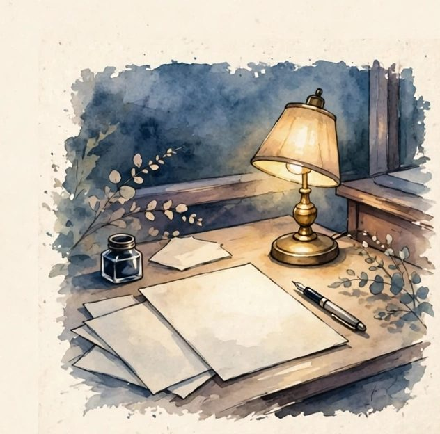
A writing desk at dusk with a lamp lit, a blank page and a pen resting on it.
A letter to a younger self begins at an ordinary desk, with a blank page, a pen, and a lamp lit against the early dark. The writer sits down in the present tense, older by every year the addressee has not yet lived. The person addressed sits elsewhere, in a room that no longer exists in quite that arrangement. Between them lies no road that ordinary post can travel. The Keeper of the Undelivered Letter keeps this house for exactly that distance. The letter is written anyway, slowly and in a clear hand, because honesty does not require a delivery route in order to be worth setting down on paper.
Nothing in the letter can change a single day that has already been lived. It cannot warn in time, cannot spare, cannot rearrange a choice made in a kitchen years ago. This house states that plainly at the first desk, so that no one writes under a false hope. What the letter can do is settle an account between who someone was and who they are now. It can speak with regard across the years. It can say what was learned, what was misjudged, and what was done well without anyone noticing at the time. That speaking, kept honest, is the whole purpose of the page. The page does not need to accomplish more than that in order to have earned the hour spent writing it at the desk.
The first page is therefore kept simple. No grand summary is attempted, and no verdict is prepared in advance of the writing. The writer names the addressee as a person, recalls one concrete room or object, and begins. A cup may go cool beside the page while the first lines find their order. The Letter Desk asks only that the hand stay kind and the sentences stay true. A letter begun in that manner can be continued on another evening, folded into a drawer, and taken up again. Its slowness is not delay. It is the pace at which a life can be addressed without being reduced to a lesson.
2The House of the Undelivered Letter
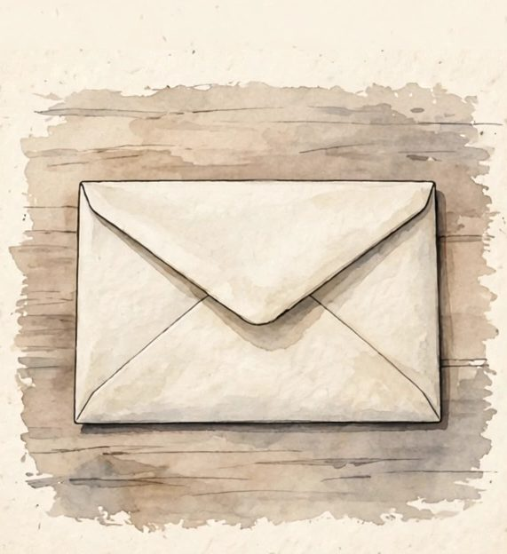
An envelope lying unaddressed and unsealed on a wooden desk, its face blank.
The house of the undelivered letter is a quiet house of desks, drawers, and lamps, arranged for writing that has no outward journey. Its rooms are not sad rooms. They are working rooms, kept warm and plain, where envelopes rest unaddressed because the person they name cannot be reached by an address. A visitor entering for the first time often lowers their voice, though no rule asks for it. The Keeper answers in an ordinary tone and shows them to a chair. On the desk lie paper, ink, and time enough to use them without hurry or display. A coat hook stands by the door, a bench waits for visitors, and the whole house is arranged so that writing, not wondering where to sit, is the work.
An undelivered letter is not a failed letter in this house, and the distinction is kept carefully at the door. A failed letter was meant for a route that exists and somehow missed it. This letter was never given such a route, and its writer knew that before the first line was written. Its purpose lies in the writing, the keeping, and the reading again in later years. It is filed, not discarded. It is tied with string, not hidden in shame. The drawers here hold many such letters, each one complete in the only sense this house requires of them. The drawer is its destination, and a destination of that kind is neither lesser nor sadder than any other that honest writing has ever had in this house.
The house keeps no public counter and promises no result to those who write here. Its shelves hold blank journals, its lamps are trimmed each evening, and its postbox stands outside in the fog as a reminder of what this place is not. Letters written here do not leave by that box. They remain where true things are kept, under the writer's own hand. A person may come once and write a single page, or return across a winter and fill a drawer. The house measures neither visit. It keeps the desk ready, the room quiet, and the door unlatched for the next arrival. That readiness, maintained without fuss through the seasons, is the house's whole promise to anyone who climbs its steps with a page they need to write.
3Written Now, Addressed Then
Every letter in this house carries two times at once. It is written now, by a hand that has aged, learned, and changed its grip on the pen. It is addressed then, to a person seated in an earlier room, with earlier certainties and no knowledge of what the years would bring. The Keeper asks writers to keep both times visible on the page. Confusing them helps no one. The younger self did not know what the writer knows, and the writer no longer stands where the younger self stood. The letter holds that distance honestly, like a ruler laid gently between two dates. The page that results may look ordinary, but its two dates are doing quiet work in every line that follows them down the sheet.
Written now means the sentences answer for present knowledge, including its limits. The writer has seen outcomes, but has also forgotten weather, wording, and much of the ordinary pressure that shaped a given day. Memory edits even when it means to report. Addressed then means allowing for that editing, and speaking to the person as they were, not as a convenient figure assembled from hindsight. A concrete detail helps here: the coat on its hook, the satchel by the chair, the hour the light changed. Details anchor the address in a real room rather than an argument about one. The Keeper, reading over such a passage, asks only whether then has been allowed to remain then, distinct and respected in its own light.
The tense of such a letter is its own, neither simple past nor hopeful future. It moves the way a person moves between rooms in a familiar house, present in each and belonging wholly to neither for the length of the visit. Writers sometimes apologise for that strangeness, and the Keeper does not require the apology. Strangeness is accurate here. One hand is writing, one life is being addressed, and the years between them are the subject as much as any event. Keeping now and then distinct, while letting them speak, is the first skill the Letter Desk quietly teaches its visitors. Writers who learn it early find the rest of the letter easier to keep honest, because its tense has stopped pretending to be simpler than it is.
4The Keeper of the Undelivered Letter
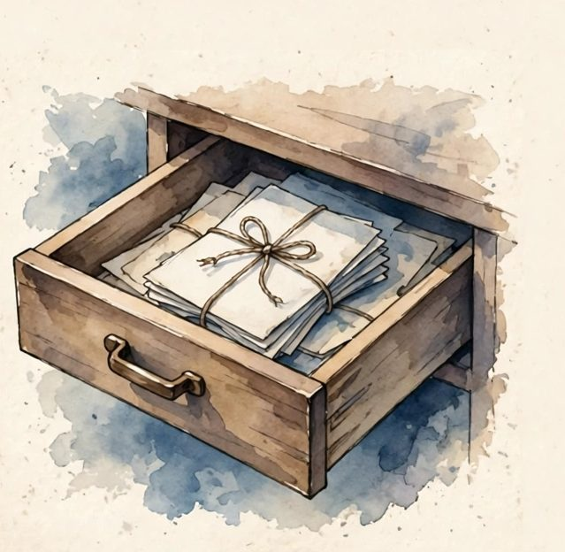
A drawer open in a desk, letters tied with string resting inside it.
The Keeper of the Undelivered Letter keeps the Letter Desk, a wooden desk near the entrance of the writing house, with a lamp, an ink bottle, and drawers of tied letters. The Keeper does not own the letters kept here. Ownership remains with each writer, always, including the right to reread, revise, or leave a page unfinished for years. The Keeper's work is custodial and plain: to keep the rooms quiet, the paper dry, the lamps lit, and the drawers in an order their writers can find again. Nothing about the desk suggests ceremony where attention is enough. The desk has stood in that place long enough for its surface to show, in polish and in small marks, the many evenings of that work.
What the Keeper will not do is written into the habits of the house as clearly as what is done. The Keeper does not grade a letter, improve its sentiments, or suggest a better past than the one described. No drawer carries a mark of approval. When a writer asks whether a letter is a good letter, the Keeper answers with description: how plainly it speaks, how kindly it addresses its reader, how honestly it leaves some things unsaid. Judgement of a life belongs to the person who lived it. The Keeper keeps the desk, not the verdict, and that restraint is the house's courtesy. That is why a writer can set down, under this lamp, sentences they would soften anywhere else, and trust them to be kept exactly as written.
If the Keeper has a manner, it is patience with a pencil. Writers arrive certain, uncertain, eager, or reluctant, and all are received in the same even way. A page is set down, a chair is offered, and no one is hurried toward a conclusion the writing has not reached. The Keeper sharpens pencils, replaces a spent ink bottle, and records nothing about a writer that the writer has not chosen to leave in a letter. Citizens of this house learn that the desk is a safe place to set a sentence down for examination. It will be read carefully, kept honestly, and returned without comment. Over years, that trust becomes the house's reputation, carried out of it one writer at a time and needing no advertisement beyond their return.
5A Letter That Cannot Be Sent
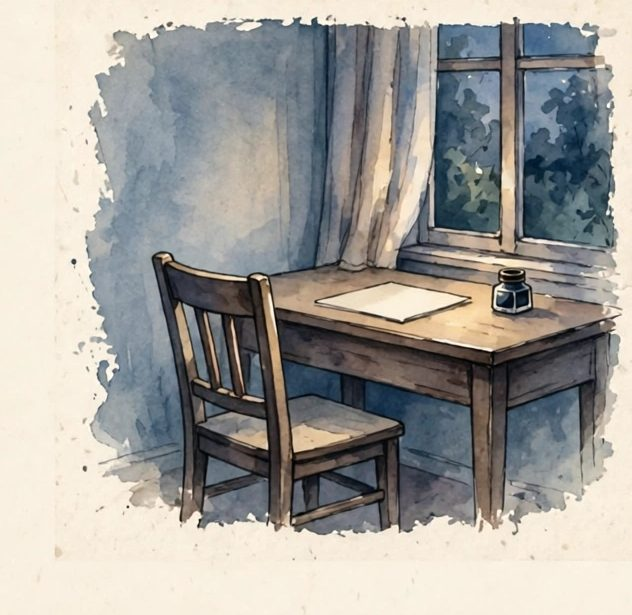
A quiet writing room with one chair, one desk, and evening light falling across them.
A letter that cannot be sent is not waiting for a better postal system, a corrected address, or a braver afternoon. Its impossibility is simpler and complete. The person it addresses lived at an earlier age, in years that have closed behind the writer like doors along a corridor already walked. No envelope, however carefully sealed, can be delivered into a past kitchen or schoolroom. The Keeper states this without sorrow, as a fact of the house. Writers who accept the fact early write more freely than those who spend their first pages arguing with it in the margins. Accepting it does not end the wish to send, which returns on some evenings, but it ends the pretence that governs so many first drafts.
Because the letter cannot be sent, it is freed from several ordinary burdens. It need not persuade a reader who might interrupt, defend themselves, or answer before the thought is finished. It need not arrive at a convenient hour or survive being read in a mood its writer cannot foresee. It can take the length the subject actually requires. A sentence can be tried, crossed gently, and tried again. The page receives all of this without impatience. That freedom, used well, produces a plainer kind of writing than most sent letters ever manage, because nothing in it is angled toward an immediate reply. The crossing out is kept visible in this house, lightly, so that the final sentence can be seen to have been chosen rather than merely arrived at.
Unsent does not mean unread, and this house keeps the difference in plain view. The writer reads the letter, sometimes aloud, in the room where it was written. A later self may read it again in five years and find its emphases changed by nothing except the reading. The letter's audience is real, even though its addressee can never receive it. It is kept in a drawer rather than burned in a grate, precisely because its work is not finished at the moment of writing. Some pages wait patiently for the reader their writer will one day become, lamp lit and string untied. A drawer, after all, is not a grave for paper, but a place where kept things wait in order, in the dark, for their next reading.
6Addressed to a Person, Not a Draft
The younger self addressed in this house is a person, not a draft of the person writing. A draft exists to be corrected, cut, and improved toward a better version. A person exists in their own right, at their own age, with the knowledge and limits of that age. The Keeper watches for the difference in a writer's sentences, because it changes everything that follows. A letter to a draft becomes a list of revisions. A letter to a person becomes an address, with regard in it. The desk keeps a chair, not an editing stool, for the one being written to. The difference sounds small in a summary and proves, across a whole letter, to be the difference between correction and conversation of the deepest kind.
Treating the younger self as a person means granting them their own reasons. They chose as they chose with the information in the room at the time, under pressures the writer may now only partly recall. Some choices were mistaken, and the letter may say so plainly in its proper place. But a mistake made by a person is different from an error marked in a margin. It had a context, a cost, and often a hope attached to it. Naming that context is not excuse making. It is accuracy, and accuracy is the courtesy this house extends in both directions across the years. The Keeper underlines nothing in such a passage, because its fairness is already doing the work that emphasis would only cheapen and disturb for the reader.
It also means the younger self is not required to be grateful for the letter, impressed by its wisdom, or eager to obey it. A person may disagree, and a later room in this hall gives that disagreement its own page. The writer who remembers this writes differently: less like an inspector arriving with findings, more like an older acquaintance taking a seat across the table. The satchel by the chair, the coat on its hook, the unfinished work on the desk all belong to someone whose life was already real. The letter honours that reality first, before it offers anything at all. From that seat, and only from that seat, the harder parts of the letter can eventually be offered and heard as they were intended to be heard.
7Advice Offered, Not Imposed
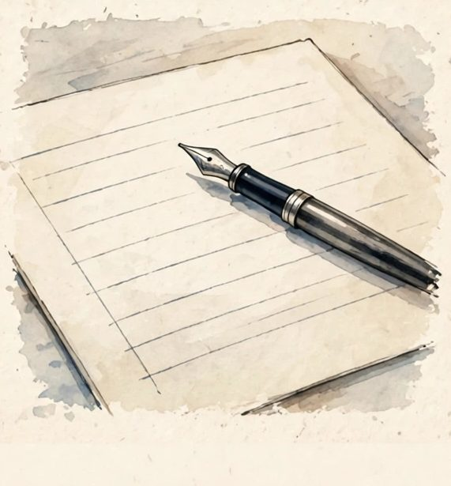
A fountain pen resting across a ruled page with no writing on it.
Advice in a letter to a younger self is offered, not imposed, and the Letter Desk keeps the distinction in its first row of drawers. An offer can be considered, set aside, or taken up in part. An imposition arrives as an order from a future that claims it cannot be argued with. The writer does know more now, about outcomes at least, and the house does not ask anyone to pretend otherwise. It asks only that the knowing be handed over the way a cup is handed over, placed within reach rather than pressed into a hand that has not asked for it yet. The tone that results is unmistakable on the page, and readers in this house learn to recognise it within a paragraph of any letter they open.
There is a practical reason for the restraint, beyond courtesy. Advice received without the living that produced it is rarely the same advice at all. A sentence that sounds simple at fifty was earned through particular years, mistakes, and recoveries that a younger reader has not had. Handed down as a rule, it can flatten into a slogan. Offered with its story beside it, it keeps its weight and its limits. The Keeper therefore encourages writers to attach advice to the concrete occasion that taught it: the room, the cost, the ordinary afternoon on which the lesson finally became clear enough to write down. Without its occasion, advice floats free of the life that paid for it, and floating advice has never kept well in any drawer of this house.
Offered advice also leaves the younger self their own judgement, which the letter will later have reason to praise. A person trusted with advice may use it well, use it late, or set it aside for reasons the writer cannot foresee from the desk. None of those outcomes makes the offering wasted. The letter has done its part by speaking plainly and then stopping. On the Letter Desk, the pen is laid down after an offered sentence rather than underlined three times. That small habit, repeated across a page, is how respect is made visible in ink rather than merely claimed. What is offered in that spirit can be refused in the same spirit, and the correspondence survives the refusal without a mark against either party involved.
8No Spoilers Are Owed
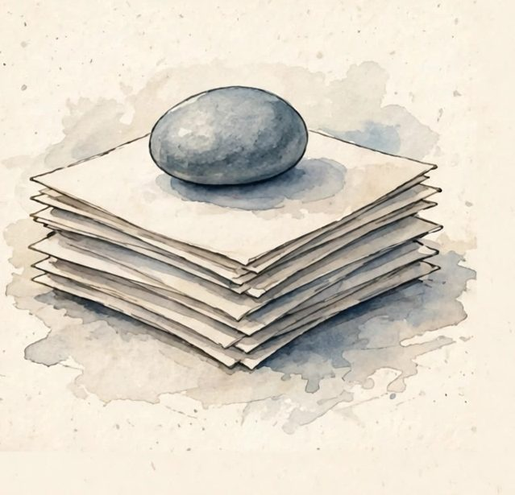
A stack of blank pages weighted by a smooth stone on the desk.
No spoilers are owed in a letter to a younger self, and the house defends the withholding as a form of care. The writer knows outcomes the addressee does not, but a letter is not an inventory of everything known. Some things are left out because telling them would turn a life into a script to be performed rather than a life to be lived. A surprise that gave genuine pleasure deserves to arrive as a surprise. A meeting that changed everything deserves its unplanned afternoon. The blank spaces in the letter are chosen, and chosen spaces are part of its honesty rather than a failure of it. The stone that weights those pages is smooth from handling, because this particular decision is returned to more often than almost any other at the desk.
Other things are withheld because knowing them early would not have helped, even where it might have satisfied curiosity. Certain griefs cannot be prepared for in any way that lessens them, and naming them in advance would only have set a shadow waiting at the edge of good years. Certain outcomes, told plainly, would have been disbelieved, or believed so completely that every earlier choice bent around them. The Keeper asks writers to consider each revelation by that measure: not whether it is true, but whether telling it serves the person addressed. Truth in this house is necessary, but it is not a licence to tell everything. A shadow of that kind, cast years early, can darken rooms that deserved their full share of uncomplicated light at the time they were lived in.
What is withheld is therefore recorded, at least privately, as deliberately withheld. Later rooms will take up the surprises, the griefs, and the endings one at a time, each with its own reasoning. Here it is enough to establish the principle at the desk where all the letters begin. The younger self is owed honesty, regard, and whatever warning can genuinely be used. They are not owed the whole map of the years. A letter with some pages folded down, held by a paperclip, can be a kinder and truer document than one that empties every drawer onto the table at once. The measure is not perfect, and the Keeper says so, but it has kept more letters kind than any rule of total disclosure ever posted here.
9The Truth, in a Kind Hand
The letter tells the truth, and it tells it in a kind hand, because either quality without the other fails the addressee. Truth without kindness becomes an indictment delivered across the years, accurate in its facts and careless in its aim. Kindness without truth becomes a decorated evasion, pleasant to read and useless to keep. The Letter Desk requires both at once, which is slower work than either alone. A sentence may need three attempts before it is both plain enough to be honest and steady enough to be received. The Keeper considers those attempts the real labour of the desk, and allows all the evenings they take. The attempts are not wasted evenings, even when the page is set aside unfinished until the hand is steadier and the sentence finally comes right.
Telling the truth here includes the unwelcome parts, set down without decoration. Some things turned out hard, and stayed hard longer than anyone predicted at the time. Some hopes were not met, some efforts were not rewarded in the currency expected, and some losses were simply losses. The letter does not soften these into lessons before it has first described them as they were. At the same time, the truth also includes what turned out better than feared, and what turned out merely different, neither triumph nor disaster. A kind hand records all three kinds of outcome in the same even ink, without enlarging any of them. A letter that can hold all three without flinching at any of them has passed the desk's hardest test, whatever else its pages may still lack.
A kind hand is recognisable on the page by small signs. It describes rather than accuses. It names a year, a room, or a decision instead of attaching a label to the person who lived them. It leaves room around a hard sentence, the way a lamp leaves room around a desk, so the reader is not crowded into a corner by the telling. None of this weakens the truth being told. On the contrary, a truth that can be read steadily is more likely to be kept, reread, and used. The house files such letters where they can be found again, tied once, neither sealed in anger nor left open in haste.
10Regret Without a Whip
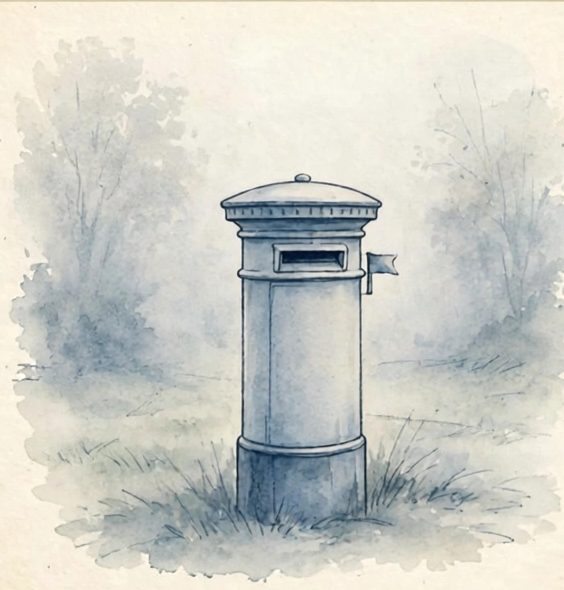
A postbox in soft fog with no slot markings, blank and simple in the mist.
Regret has a legitimate place in a letter to a younger self, and this house gives it a chair, a page, and clear limits. Regret described honestly can name what went wrong, what it cost, and what the writer would now wish had been otherwise. That naming is part of the truth the letter owes. What regret is not given, at this desk, is a whip. It is not used to punish the person addressed, to demand a different past, or to grade a life as if a mark could still be entered against it. The Keeper removes no regret from a letter. The Keeper asks only what the regret is doing there.
A regret used as a whip changes the whole posture of the writing. Sentences shorten. Evidence is selected for prosecution. The younger self shrinks from a person into a defendant, and the letter becomes a hearing held in a courtroom the addressee cannot leave. This house has no such room, and its ledger has no column for sentences of that kind. When a writer notices the tone arriving, the practice here is plain: set the pen down, let the lamp burn a while, and return when the regret can be described rather than wielded. Description takes longer, and it leaves a document a person can keep without flinching. The pause is not avoidance, and the house distinguishes it carefully from the older habit of abandoning difficult pages in drawers and calling the drawer closed.
Described regret, by contrast, often turns out to be more precise and more useful than the punishing kind. It can separate what was genuinely within a younger person's power from what never was. It can record a cost without inflating it into a character. It can even make room, on the same page, for what else was happening in that year: the work done, the kindness shown, the difficulty carried. A letter that holds regret in that manner does not excuse anything. It simply refuses to let one true thing crowd out all the other true things sharing the same drawer of years. In that fuller company, regret keeps its proper size, which is real, and named, and no larger than the years that actually contain it.
11Credit Where It Is Due
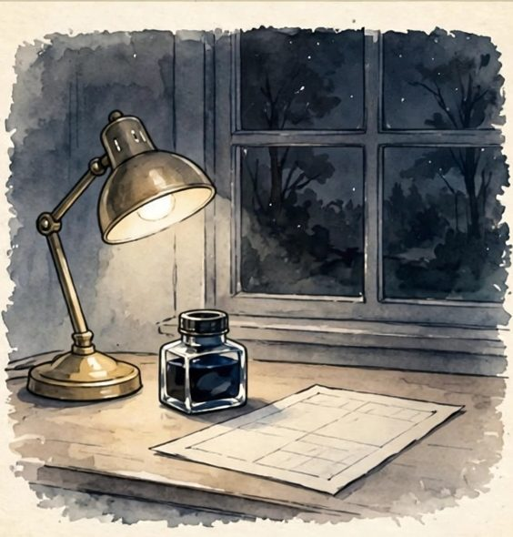
A lamp, an ink bottle and a page on a desk, with night outside the window.
The younger self got some things right without knowing it, and the letter says so by name, because credit is part of honesty. A letter that records only errors is not a truthful letter, however carefully its regrets are phrased. Somewhere in the earlier years are decisions that held, kindnesses that cost something, and refusals that protected a future the younger self could not yet see. The Keeper asks writers to search for these with the same diligence they bring to the harder entries. A page of credit, written plainly, often takes longer to compose than a page of blame, which says something about habit rather than about the life.
Credit in this house is specific or it is not entered. A general assurance that everything was fine helps no one and persuades no reader, least of all the writer. The letter names the occasion: the risk that was worth taking, the work finished when finishing was difficult, the loyalty kept when leaving would have been easier. Concrete credit can be believed, because it can be pictured: a room, a date, an object still kept on a shelf. Writers are often surprised by how much of it there is once the search is made in earnest. The drawer, opened for blame, turns out to hold a second, quieter set of records underneath.
Giving credit also corrects the balance of the whole letter, and balance is a form of respect. The younger self who reads of their errors in one paragraph and their sound judgements in the next is being addressed as a whole person, whose life contained both. That wholeness is what makes the harder passages readable and the advice worth considering. A letter remembered for its fairness will be reread, and rereading is where these documents do their slow work. The lamp burns late over such pages in this house, not because they are difficult, but because writers linger, recognising someone they had undersold for years. Credit entered that late is still entered, and the ledger of this house makes no distinction between an early entry and a long delayed one.
12The First Rule of the Letter Desk
Every desk in this estate keeps one rule first, from which the others follow, and the Letter Desk states its rule where the writing happens. Write it kindly, keep it honestly. The words are plain enough to be mistaken for a motto, and the Keeper treats them instead as instructions for the hand. Kindly governs the manner of address: the younger self spoken to as a person, regret described without a whip, advice offered rather than imposed. Honestly governs the matter: the truth told, credit entered, and nothing promised that a letter cannot deliver to anyone. The sign above the desk carries the same words, lettered plainly, so that a writer need only look up from the page to be reminded of them.
The rule is first because it settles questions before they become arguments at the desk. When a writer wonders whether to include a hard fact, the second half of the rule answers, and the first half settles how it will be phrased. When a flattering evasion presents itself in fine language, honesty refuses it, and kindness finds the plainer sentence that does not wound for sport. When a page is finished, the rule provides the only test the Keeper applies. Was it written kindly. Was it kept honestly. A letter that passes both may still be imperfect, but it belongs in the drawer with the others, tied and dated. A letter tested that way, sentence by sentence, rarely needs to be rewritten whole, because its faults are local and its intention was sound from the start.
Like most first rules in this estate, this one is kept by example rather than enforcement. The lamp is lit at the Letter Desk each evening. The page is centred, the pencil laid straight, the ink bottle set where a hand expects to find it. A writer arriving uncertain is shown, before any word of instruction, a desk arranged with care for the task. In time the arrangement becomes the writer's own habit at home: a cleared surface, an unhurried hour, a sentence read once for truth and once for kindness before it is allowed to stand. The footer of the house carries the rule in capitals, so that no one leaves without having seen it at least once.
13Dear Younger Me
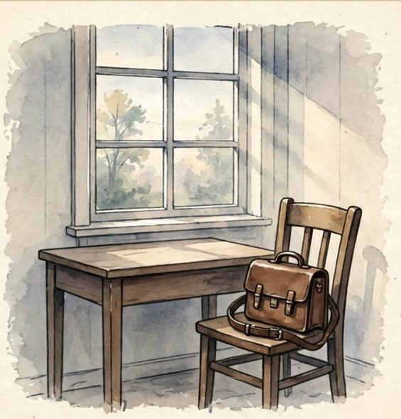
A younger room remembered, a small desk by a window, morning light, and a school satchel by the chair.
Dear younger me. The letter begins properly with those words, set at the top of a fresh page after all the preparation of the first hall. They are ordinary words, used in ordinary letters for centuries, and their ordinariness is their strength here. They do not announce a project or declare a purpose. They open a correspondence that only one side can write. The Keeper has seen the salutation tried in many forms, grand and modest, and the modest ones last longest. A writer who begins simply is more likely to continue plainly, and plain continuation is what a long letter most requires. The ink for those two words, the Keeper notes, is the same ink as everything after them, which is precisely the point of beginning so plainly.
The words also settle, at a stroke, who this letter is for. Not for visitors, not for posterity, not for anyone who might one day find the drawer and judge the contents. The letter is for the younger self named in its first line, and for the writer who addresses them. That privacy protects the writing from performance. Sentences do not need to sound well in a room of strangers. They need only be true and kind at the distance they actually travel, which is across one life, from a lamplit desk now to a sunlit room remembered. Few letters are ever given so clear a direction. Within that privacy, a writer may be funnier, sadder, and plainer than any public page allows, sometimes within the space of a single honest paragraph.
After the salutation, the practice of this house is to pause. The pen rests. The writer pictures the room on the other side of the greeting: the small desk by the window, the satchel by the chair, the morning before whatever day the memory has chosen. Addressing a person begins with seeing where they sit. Only then does the first real sentence follow, and it is usually a simple one, because simple sentences are what greetings are made of. The rest of this hall will take up that room, that distance, and that reader, one aspect at a time, before the letter is allowed to begin in earnest. The pause also gives the hand time to stop performing and start writing, which are more different activities than most first visitors to the desk expect.
14I Know the Room You Are Sitting In
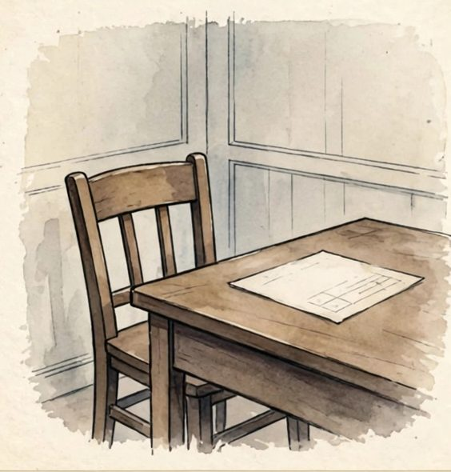
A chair facing a desk, as if someone has just left the room a moment ago.
I know the room you are sitting in. The letter can say this truthfully, because the writer once sat in it daily and still carries its arrangement in memory. The desk stands where it always stood, the light enters from the familiar side, and the objects on the surface are the ordinary equipment of a life at that age. Naming the room is the letter's way of proving its address. A stranger could not describe the worn place on the floor or the chair that was always taken without thinking. The writer can, and the description is offered as a credential more honest than any claim of wisdom. Details of that order cannot be borrowed from another life, and their accuracy is what separates this letter from a general essay about youth in the abstract.
Knowing the room also means knowing what the room contained beyond furniture. It held the assumptions of that year, the plans pinned above the desk, the worries that arrived each evening at roughly the same hour. The younger self sitting there does not experience these as a period or a phase. They are simply the weather of the present, total and unquestioned. The letter respects that totality. It does not mock the smallness of a room whose world felt complete from inside it. Every age sits in such a room, including the writer's present one, whose own limits are presumably being regarded, somewhere, with similar tenderness. The letter's respect for it is therefore not a courtesy added afterward, but a recognition of how completely any present tense fills the person living inside it.
For the writer, returning to the room in memory is a discipline as much as a pleasure. Details must be checked against each other: which window, which season, what was kept in the drawer and what was carried in the satchel. Some details will have softened, and the letter can admit that where it matters. What survives checking is enough. A room honestly remembered gives the correspondence a shared floor to stand on, boards both parties have walked. From that floor, harder sentences can later be spoken and heard, because the reader has first been met exactly where they live, in morning light, before anything was asked of them. A beginning of that kind earns the right to continue, which is more than many longer and louder openings manage to earn in twice the pages.
15You Do Not Know Me Yet
You do not know me yet. The letter states this early, because the strangeness of the correspondence should be admitted rather than disguised. The younger self, reading over the writer's shoulder in imagination, meets a hand that is familiar and a voice that is not quite. The face in the mirror of that year is younger than the one the writer now shaves, dresses, or regards in shop windows. Recognition will come slowly, through details, the way a person recognises a relative in an old photograph: not at once, and then with a small, unsettling certainty that grows the longer the picture is held. That slow recognition is allowed its own pace in this house, and no writer is asked to hurry it toward a familiarity the facts do not yet support.
Not knowing cuts in both directions, and the letter is honest about the writer's side of it too. The writer knows outcomes, but no longer knows, from inside, what it felt like not to know them. That felt ignorance was the younger self's whole element, the water they swam in daily. The writer can describe it, and has described it in these pages, but description is not residence. Something is therefore always lost in the correspondence, a tone or a pressure that memory smooths away. Naming that loss at the start keeps the letter modest. It claims acquaintance, hard earned and incomplete, rather than perfect understanding of the person addressed.
There is courtesy in the admission as well. A letter that begins by acknowledging its reader does not know the writer invites trust instead of demanding it. The younger self is free to be wary, to read slowly, to set the pages down and return to them, in imagination, at their own pace. The Keeper approves of letters that allow this. Trust built across a stated distance is stronger than familiarity assumed without permission. By the later rooms of this hall the two parties will know each other better, at least on paper. That knowing will have been earned by candour like this, in small sentences, early in the letter.
The Letter Desk
One desk receives all correspondence for this house — questions, corrections, and word of any letter written to a younger self: a hard time, a person, a dream, something withheld, something forgiven. It is read in the order it arrives.
16I Am Not a Stranger, Exactly
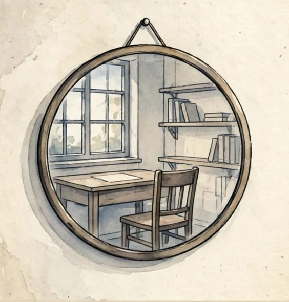
A mirror on a wall reflecting an empty writing room, with no figure standing in it.
I am not a stranger, exactly. The qualification matters, and the letter keeps it. A stranger knows nothing, while the writer knows the room, the satchel, the handwriting before it settled into its present form. Yet the writer is not simply the younger self continued, either, because years do their work on a person the way weather works on a house. The boards are the same boards. The light enters differently, some rooms have been rebuilt, and one or two opinions once held like furniture have been carried out entirely. Exactly is the honest word, and the correspondence proceeds on it without embarrassment. The house keeps the word exactly in its vocabulary for this reason, preferring an honest qualification to a simpler word that would claim too much.
This in-between standing gives the letter its particular authority, such as it is. The writer can be believed about the past because they were present for it, in the only body that attended every day of it. The writer can be doubted about its meaning because meanings have changed hands since, revised by everything learned afterward. Both standings are granted on the same page. The younger self is not asked to treat the letter as a message from an oracle, nor dismissed as gossip from a passerby. It arrives as testimony from the nearest possible witness, who is also, unavoidably, an interested party in the account being given. Read in that spirit, the letter's authority is neither inflated nor discarded, but weighed, the way any testimony is weighed by a careful and fair minded reader.
Mirrors are the furniture of this recognition in the writing house, and they are kept deliberately plain. A mirror shows the room, the desk, the chair, and whoever stands before it at that hour, and nothing else. It does not show the earlier room or the later one. The letter does similar work with similar limits, reflecting a life at the moment of writing rather than revealing it whole. A writer who accepts those limits writes a steadier letter. The addressee, met neither as stranger nor as twin, can be spoken to plainly, and plain speech between near relations is the sound this hall most hopes to produce. That sound is quiet, unhurried, and quite unmistakable once a writer has heard a page of their own produce it under the lamp at evening.
17What I Look Like From Here
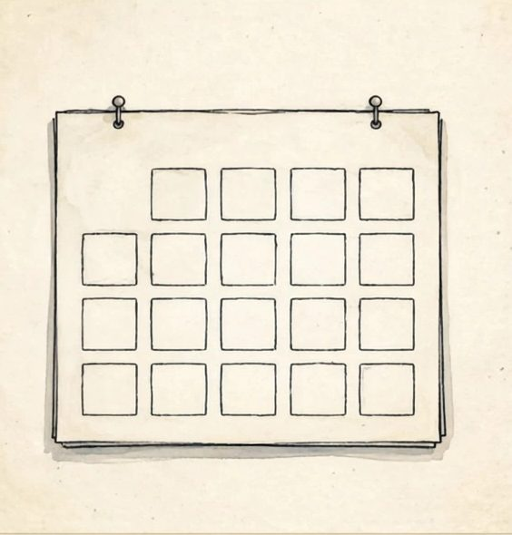
A calendar of blank squares on a wall, with no numerals in any of them.
What I look like from here is a fair question for the letter to answer, since its reader cannot picture the writer at all. From the younger room, the future self is a rumour without a face. The letter can supply a description, modest and concrete: the age, the work, the state of the hands, the glasses set down beside the page while writing. It can name what has worn well and what has worn visibly. Such a description is not vanity. It is information owed to a correspondent, the way any long letter begins by telling its reader where it is being written from and in what condition its writer sits.
The description will surprise its reader in places, and the letter allows for that without apologising in advance. Some features will be better than the younger self feared becoming, some plainer, some simply different from every forecast made at that desk. The Keeper advises writers to keep the account physical and specific, because general reassurance convinces nobody. A life described through its objects can be pictured: the coat that replaced the earlier coat, the room that replaced the earlier room, the lamp under which these very lines are being written. Pictured, the writer becomes a person again rather than an outcome, and a person can be disagreed with, questioned, and eventually believed.
There is also what the writer cannot see from here, and the letter should admit the edge of the view. No one describes their own face without a mirror, and no one describes their own character without some flattering shadow falling across the page. The younger self, who knew the writer before any of this polish, is oddly well placed to discount it. That is one of the quiet advantages of this correspondence. Its reader holds the earlier evidence. Between the description offered and the evidence held, a truer portrait assembles itself than either party could produce alone, and the letter trusts that assembly rather than forcing its own version into the frame.
18The Age I Am Writing From
The age I am writing from deserves a line of its own in the letter, stated plainly and without drama. It is the age at which the writer finally sat down at the Letter Desk, older than the addressee by a specific number of years that the page may as well give exactly. That number explains the letter's knowledge and its blind spots alike. It also dates the document honestly, the way a postmark would date an ordinary letter. A reader finding this page in a drawer years later, even the writer grown older still, will know from what station on the road it was sent back along the line.
Writing from a particular age means writing with that age's preoccupations, whether they are declared or not. The health of a parent, the state of a trade, the nearness of certain endings and the unexpectedness of certain beginnings all lean lightly on the pen. The Keeper does not ask writers to escape their age, which would be impossible, but to notice its pressure. A letter written at forty emphasises what forty can see. The same letter at sixty would choose different rooms to praise and different regrets to describe first. Neither is the final version. Each is a true report from its year, filed under that year. Acknowledging the pressure does not remove it, but it stops the letter from mistaking one age's weather for the climate of the whole life under review.
The age of writing also sets the letter's tone toward time itself. From here, some distances that once looked enormous have become walks of an afternoon, while others have widened past all the younger self's imagining. Whole decades compress into a paragraph when a life is summarised, and the letter should resist that compression where it can. The younger self lives in uncompressed time, where a year is a year and a winter is long. Writing back into that scale, patiently, is an act of respect performed by the calendar itself. The blank squares on the wall of this house, unnumbered, remind every writer that a life is counted in days before it is counted in ages.
19Why I Am Writing at All
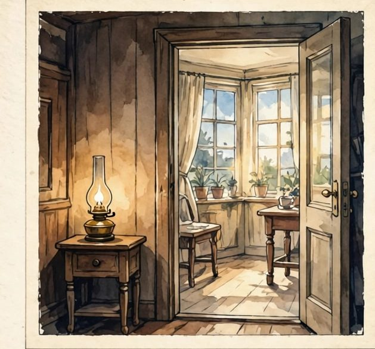
An open doorway between a lamplit room now and a sunlit room remembered.
Why I am writing at all is a question the letter owes its reader an answer to, preferably before it presumes to advise them. The answers kept in this house are plain ones. To settle an account. To give credit that was never given aloud. To describe regret while description can still be done in a kind hand. To say, once and in order, what the years actually taught, before habit smooths the teaching into anecdote. None of these purposes requires the letter to be received in order to be honestly pursued. Each is completed, as far as it can be, at the desk where the writing happens. A purpose stated that plainly also protects the writing hour itself, which can otherwise expand until good intentions have consumed the whole of an otherwise useful evening.
The letter is also written, frankly, for the writer. Settling the account between who someone was and who they are is work the present self needs done, and pretending otherwise would break the house rule of honesty in the first hall of the letter itself. Writing to the younger self steadies the writer's own view of the road: where it turned, what the turning cost, which parts of the load were carried well. That steadiness is not a small thing. A person who can narrate their own earlier years without flinching or flattering is measurably harder to unsettle, and the Keeper has watched that steadiness arrive, letter by letter, at this desk.
What the purpose is not should be stated with equal clarity. The letter is not written to reopen settled years for endless review, to recruit the younger self into the writer's present arguments, or to perform a wisdom the writer does not in fact possess on ordinary days. It is a bounded document with a beginning, a subject, and an end. When its purposes are met, it is signed, folded, and kept where true things are kept. The doorway between the lamplit room and the sunlit one stands open for the length of the writing, and no longer. That limit, far from diminishing the letter, is what allows it to be written at all.
20This Is Not a Warning
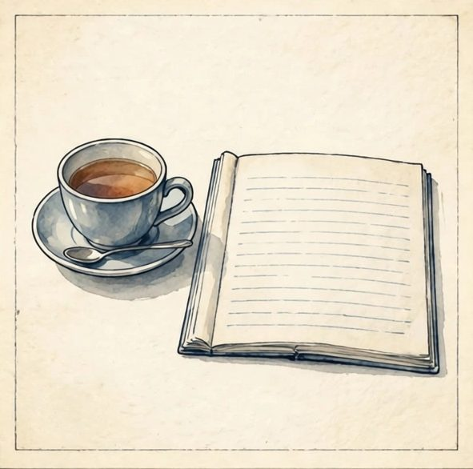
A cup of tea gone cool beside a blank page on the desk.
This is not a warning. The letter says so plainly, because a reader who opens a document from their own future will reasonably brace for one. Warnings imply danger ahead and a reader who can still step aside, and neither implication fits this correspondence honestly. The road has been walked. Its hard stretches are matters of record now, not of approaching weather. The letter will describe some of them in the hall that follows, in an even voice, because description was promised. But description after the fact is a different act from warning before it, and the house keeps the two acts in separate drawers. That separation matters to the Keeper, who files warnings, where they belong, in another house altogether, and keeps this desk for correspondence of a calmer kind.
Nor does the letter arrive as an alarm about character, which is the form in which warnings to a younger self most often disguise themselves. It does not announce that the addressee is headed for ruin unless they change by a stated date. The younger self's habits, hopes, and blind spots are treated here as the ordinary equipment of a person at that age, some of which will serve them and some of which will cost them, like the equipment of every age including the writer's own. A warning needs a culprit or a cliff edge. This letter has a road, a load, and a traveller, and it contents itself with describing all three accurately.
Setting the warning aside changes how everything after it can be read. Hard news delivered without alarm can be considered rather than merely survived. The tea beside the page may go cool while a difficult paragraph is read twice, and that is the correct pace for it. Later halls will speak of winters, losses, and nights that seemed longer than they were, and the reader who has been promised no alarm can meet those pages as history rather than threat. The Keeper regards this small declaration as load bearing. Remove it, and the letter becomes a siren. Keep it, and the letter remains what the house intends: a calm voice, from further along the same road.
21This Is Not a Rescue
This letter is not a rescue, and the Keeper of the Undelivered Letter is careful to say so before the writing goes any further. No page written now can step backward into a hard year and lift its reader out of it. No sentence can arrive early enough to stand between a younger person and the day that is coming for them. The letter does not pretend otherwise, because a pretence of rescue would spoil the honest work it can actually do. It can witness, it can accompany in thought, and it can leave a record that someone, later, looked back with attention rather than turning away from what was difficult to remember.
A rescue would also change the terms between writer and reader in a way this house will not allow. It would place the older hand above the younger life, as if the one who lived further were entitled to intervene and rearrange. The Letter Desk keeps a plainer relation. The writer sits at the same level as the person addressed, across time rather than above it. What is offered is companionship in words, not extraction from experience. The younger self was never a stranded figure waiting to be carried out of their own life. They were a person living it, day by ordinary day, with the resources and understanding they had at the time.
There is, however, a quieter kind of help that a letter can honestly give, and this block names it so the refusal is not mistaken for coldness. It can say that the hard passages were survived without claiming they were easy. It can say that the person who came through them is remembered with respect by the one writing now. It can leave, on the desk, evidence that the account between past and present need not be settled in blame. That is not rescue. It is regard, written down and kept, and in this house regard is considered work enough for any single letter to attempt honestly and well at all.
22Read It Slowly
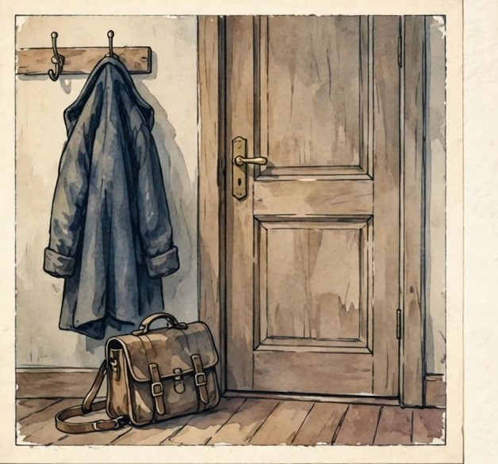
A coat and satchel resting by a door, a life at an earlier age quietly implied.
Read it slowly, the letter asks near its beginning, because speed would miss the manner in which it was written. These pages were not set down in a single urgent sitting. They were composed across quiet evenings at the Letter Desk, with pauses for memory to arrive at its own pace and for sentences to be tried, crossed out, and tried again more plainly. A letter that took time to write deserves time in the reading, even a reading that can only be imagined. Slowness here is not ceremony. It is the ordinary courtesy owed to anything made carefully by hand and meant to be understood rather than merely received.
Slowness also protects the reader from a misunderstanding the Keeper has seen in draft after draft. A younger person, handed sudden knowledge of later years, might be tempted to scan for outcomes the way someone scans a notice board for a name. This letter is not arranged for that kind of reading. Its truths are carried in the order and the tone as much as in the facts, and tone is lost at speed. Read slowly, a hard sentence has room to be a kind sentence as well. Read quickly, the same sentence may sound like a verdict, which is precisely what this house has promised the letter will never deliver.
The desk itself sets the pace for anyone who sits at it. The lamp is lit, the drawer is opened, and the pages are taken out one at a time rather than in a hurried bundle. Nothing in the room rewards haste. The Keeper turns a page only when the previous one has been given its full minute of attention, and the habit is older than any particular letter kept here. A younger self, reading slowly, would have time to pause, to look out of the window of their own year, and to return to the letter as a conversation rather than an announcement. Conversations, in this house, are never rushed to their ending.
23You May Disagree With Me
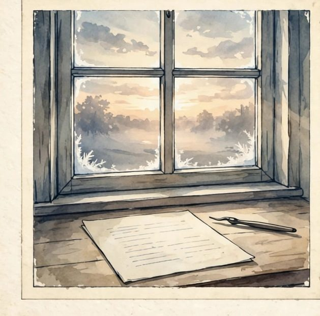
A window at the hour the letter begins, light gathering softly along its frame.
You may disagree with me, the letter says, and it means the permission fully rather than offering it as a polite form. The younger self knows things the writer has forgotten: the exact feel of a room at that age, the reasons a decision made sense in the week it was made, the loyalties and hopes that were alive then and have since gone quiet. From that knowledge, disagreement is not only possible but likely, and some of it will be justified. The writer, sitting later at the Letter Desk, is a witness with a longer view and an imperfect memory, and the letter is more honest for admitting both facts at once.
Disagreement also keeps the letter from becoming an instruction, which this house has ruled out from its first pages. Advice offered can be weighed, set aside, or taken up in part, and the weighing belongs to the person whose life it concerns. The Keeper records no expectation that a younger reader would accept every judgement an older hand has formed. Lives are not corrected by correspondence, even correspondence as unusual as this. What the letter hopes for is narrower and more respectful: that its words be considered in the spirit they were written, and that any refusal of them be understood as part of the same honest exchange between equals.
There is a steadiness in being allowed to disagree with someone who knows more of the road ahead. It returns a measure of authority to the younger self, whose life this is, after all, and whose choices, mistaken or otherwise, built the very desk from which the letter is written. The writer owes their existence, in a plain sense, to the person they are addressing. Gratitude of that kind does not demand agreement. It permits argument, affectionately conducted, across a distance that cannot be crossed in either direction. The pages are left open on the desk when the writing is done, as if the other party to the conversation might still answer.
24The Letter Begins Properly
The letter begins properly here, after its introductions, its permissions, and its plain statements of what it is not. Everything before this page was the doorway: the writer naming who they are, the reader being granted time and the right to disagree, the house explaining why nothing written here can be sent. A doorway matters, and this one was built carefully and in good faith, but a letter is not its doorway. The Keeper turns the earlier pages down in good order and leaves this one uppermost, because what follows is the substance the whole house was arranged to hold: hard times, people, work, and the things that will deliberately be left unsaid.
Beginning properly also means beginning without further apology for the letter itself. The writer will not keep explaining why an undeliverable letter is worth composing, nor keep defending the younger self against charges nobody in this room has made. The preliminaries settle those questions once, and the letter is free, from here, to speak directly. Direct speech, in this house, is quiet speech. It does not raise its voice to be believed, and it does not soften a true sentence until the truth has left it. The desk is cleared of everything except the page, the lamp, and the ink, and the writing takes on the steadiness of ordinary work done well.
What follows will move in the order a life is usually remembered: first the difficult seasons, since they are so often the reason such a letter is begun at all, then the people who filled the years, then the work and the dreams that changed shape along the way. Later pages will turn to forgiveness, to thanks, and to the credit a younger self earned without knowing it. None of it is arranged as a lesson. It is arranged as an account, kept honestly and in a kind hand, the way the rule over the desk requires. The first true sentence of the letter is written now, and the house is quiet around it.
25About the Hard Times Coming
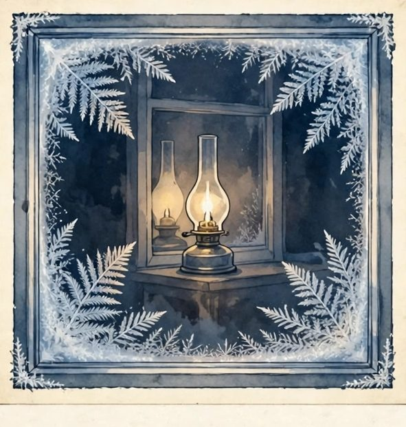
A winter window with frost at its corners, a lamp reflected softly in the glass.
About the hard times coming, the letter will not pretend there are none, because a younger self deserves better than a decorated account of the road. There will be seasons when money is short, when plans come apart in the hands, when people disappoint or are lost, and when ordinary days require more strength than they appear to ask from outside. The Keeper of the Undelivered Letter insists on this plainness at the Letter Desk. A letter that flatters the future teaches its reader to distrust every other sentence in it, and trust, once lost between a person and their own later voice, is difficult to restore by any further writing.
Plainness, however, is not the same as heaviness of manner, and this page keeps the distinction with care. The hard times are named as part of a life, not as its definition. They will occupy chapters, some of them long, but they will not occupy the whole book, and the letter says so in the same breath that admits them. Between the difficult seasons there will be ordinary mornings, work that goes well, people who are kind without being asked, and stretches of unremarkable calm that a younger self, anxious in advance, may find hardest of all to imagine. The account is whole only when both kinds of season are entered in it.
The letter also declines to arrange the hard times into a lesson before they have even been lived. It does not claim they will arrive carrying gifts, or that each one will explain itself afterward in a satisfying voice. Some will, with time, and some will remain simply hard, remembered without decoration. What can be said honestly is narrower: that hard times have been part of every life this house has ever recorded, that they are survivable in the ordinary sense of being lived through day by day, and that the person writing now is evidence of exactly that. The page is turned without emphasis, and the letter moves on to what endurance actually looked like.
26You Will Get Through More Than You Fear
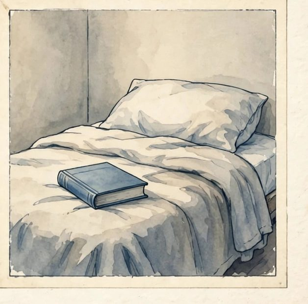
A bed made ready in a quiet room, a closed book resting on its cover.
You will get through more than you fear, the letter says, and it offers the sentence as a report rather than a slogan. The writer has the advantage of the record. Looking back from the Letter Desk, they can count difficulties that once seemed, from inside them, to be the end of the road, and can set beside each one the ordinary fact that the road continued. Mornings followed the worst evenings. Appetite returned, work resumed, laughter was heard again in rooms where it had seemed permanently out of place. None of this was felt in advance. It was discovered, slowly, by living through the days in their actual order.
The fear itself is not mocked anywhere in these pages, because the writer remembers how reasonable it felt at the time. Fear usually arrives with evidence: a bill that cannot be met, a door closing, a silence from someone whose answer matters. The letter does not argue with that evidence. It adds, from later knowledge, one further fact the younger self cannot yet have: that capacity is rarely visible before it is required. People routinely discover, in the middle of a hard season, reserves they would have denied owning in a calm one. The discovery is not pleasant, but it is real, and it has been entered in this house's accounts too often to be treated as an exception.
Getting through, the Keeper notes, should be described accurately or not at all. It does not always look like triumph, and it seldom feels like it from inside. More often it looks like keeping small appointments with the day: eating something, sleeping when sleep can be managed, answering one letter, doing the next task rather than all of them. A life is carried through its hard times at walking pace, in ordinary shoes. The letter honours that pace. It does not ask the younger self to be heroic, only to keep going in the modest sense, and to believe, on the writer's word, that modest going has proved sufficient more often than fear predicted.
27Some Winters Are Long
Some winters are long, the letter admits, using the word the way everyone privately uses it, for the seasons of a life as much as for the weather. There are stretches when difficulty does not arrive as a single event that can be faced and finished, but as a climate: month after month of reduced light, careful money, and news that improves slowly or not at all. A younger self may expect every hard time to have the shape of a storm, brief and dramatic, and may lose heart when one instead takes the shape of a season. This page exists to correct the expectation gently, in advance, without pretending the correction makes the season shorter.
What a long winter asks for is different from what a storm asks for, and the letter tries to describe the difference usefully. A storm asks for shelter and endurance for a night. A winter asks for arrangements: routines that can be kept when spirits are low, small stores set by in better weeks, company that does not require brightness as the price of admission. It also asks for a particular honesty about pace. Nothing in a long season is improved by demanding spring on a schedule. The Keeper, who has watched many such seasons recorded at the Letter Desk, notes that they are remembered less for their length than for the quality of the arrangements made inside them.
Long winters do end, though the letter is careful not to turn that fact into a promise with a date attached. They end gradually, the way the season itself does, with changes noticed first in retrospect: an evening that felt lighter, a worry that had quietly stopped visiting, a plan that could be made again without flinching. The younger self is not asked to watch for these signs like a sentry. Life inside a winter is still life, with work and meals and people in it, and it deserves to be lived rather than merely waited out. The writer, who knows which winters are being spoken of, records that even the longest of them is now spoken of in the past tense.
28You Are Allowed to Rest
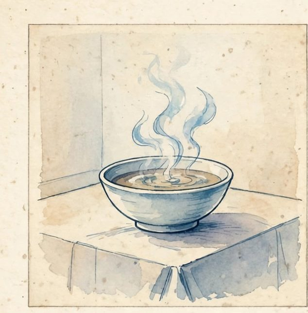
A bowl of soup on a table in a plain room, steam rising in cold light.
You are allowed to rest, the letter says, and it says it early among the hard times because the permission is so often the last thing a struggling person grants themselves. Rest is not a reward held back until the difficulty has been defeated. It is part of how difficulty is borne at all. A younger self, inclined to treat exhaustion as evidence of effort and effort as the only acceptable answer, may need to hear the permission from a later voice before believing it. The writer gives it plainly, without conditions attached, in the same hand used for every other true sentence in these pages, and hopes it is believed.
The Letter Desk keeps its own counsel on what rest actually is, since the word is easily confused with giving up. Rest is the meal eaten sitting down, the sleep taken before midnight when it can be managed, the afternoon in which nothing is proved to anyone. It restores the person who must continue, and continuation is the whole point of it. A rested mind makes kinder decisions, notices help when it is offered, and stops mistaking its own tiredness for the truth about a situation. The Keeper has entered, in the margin of more than one draft, the observation that many a despair recorded at this desk was, on examination, largely sleeplessness wearing a heavier name.
Rest also has to be defended, sometimes, against the voices that call it indulgence, and the letter arms its reader with a simple answer. The person writing now has rested, imperfectly and often late, and is still here, with the work done and the account in order. Nothing was ruined by the pauses. Several things were saved by them, including, on certain evenings, the temper in which other people had to be met and treated fairly. The younger self is therefore not being advised toward softness. They are being handed, early, a tool the writer acquired late and at some cost: the knowledge that stopping for a while is how a person manages to keep going for years.
29Asking for Help Is Not a Defeat
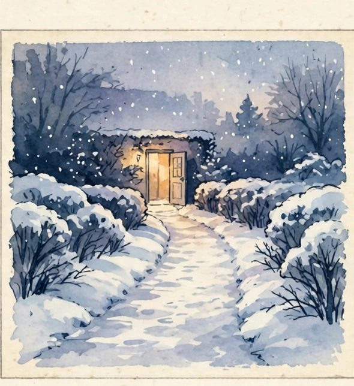
A path through snow toward a lit doorway, seen at dusk.
Asking for help is not a defeat, the letter says, in a hand as steady as it can make the sentence, because it knows the younger self may argue with this one longer than with any other in the hard-times pages. There is a pride that feels like strength and behaves, in practice, like a locked door. It refuses assistance, calls the refusal independence, and then wonders why the room is so cold. The writer remembers holding that pride and paying its prices in full, and writes now with the plain intention of shortening the time its reader spends mistaking a locked door for a virtue they are obliged to maintain.
Help, as this house records it, comes in unglamorous forms and should be recognised in them. It is the friend who listens without immediately advising, the colleague who quietly takes one task from an overloaded week, the relative who sends money or food or time and declines to make a ceremony of it. Accepting such help is not a confession that a life has failed. It is an ordinary transaction among people, of the kind the younger self has already performed from the giving side without thinking any less of those who asked. The letter simply points out the symmetry, and lets the symmetry make the argument that pride had been preventing.
There will also be help that is harder to accept because it arrives from unexpected quarters, or in a form smaller than the need feels. The Keeper advises writers at the Letter Desk to record this too, since pride often survives by setting conditions on rescue it claims not to want. Take the offered hand seriously, the letter says. Let people be kind in the way they know how, and repay the debt later, outward, to whoever then needs it, as almost everyone in this house's accounts eventually does. A life in which help flows in both directions is not a defeated life. By the evidence in these pages, it is the only kind that lasts.
30The Night Will Not Last All Day
The night will not last all day, the letter says, choosing its words with care, because the sentence can sound like a cheerful slogan and is meant instead as a plain observation about time. Bad nights have a particular dishonesty about them. At three in the morning, a worry presents itself as permanent, a failure as final, and a loneliness as the settled condition of a life. Morning, when it comes, rarely solves these things outright, but it reliably changes their size. Problems that filled the whole room in the dark can be set on the desk in daylight and examined, one at a time, in their actual proportions and order.
The writer does not claim that daylight is wise, only that it is different, and that the difference is worth waiting for before conclusions are drawn. Many decisions recorded in this house's drafts look entirely sensible at midnight and entirely mistaken by breakfast, and the letter will return to that theme on its own later page. Here the point is narrower and kinder. A younger self awake in a hard night is not seeing the world falsely, exactly; they are seeing it in one light only, the poorest light available, and drawing maps they will be asked to navigate by for years. The letter asks only that the map-making wait until the lamp of morning is lit.
There is also a literal comfort in the sentence, and the letter does not disdain literal comforts. Nights end. Sleep, even broken sleep, hands the mind back to itself in better repair. The kettle can be filled, the day can be started in its ordinary order, and the ordinary order has carried more people through grief and fear than any grand resolution this house has ever recorded. The Keeper keeps a small note of the hours at which letters in the drawer were begun, and the pattern is instructive: very few of the despairing ones were written after sunrise. The younger self is invited to trust the pattern, at least until their own mornings have had a chance to confirm it.
The Letter Desk
One desk receives all correspondence for this house — questions, corrections, and word of any letter written to a younger self: a hard time, a person, a dream, something withheld, something forgiven. It is read in the order it arrives.
31What Pain Does Not Mean
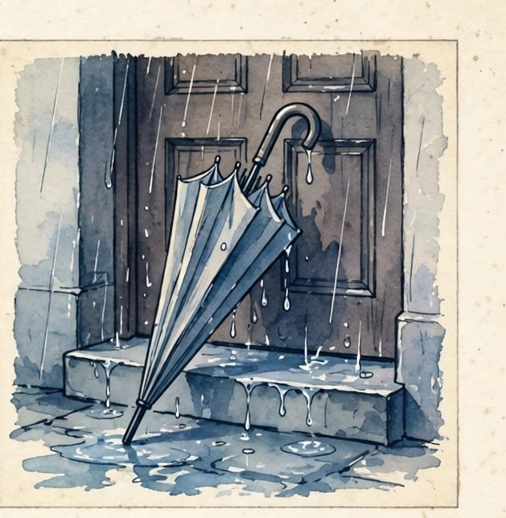
An umbrella resting by a door after rain, dripping gently onto the boards.
What pain does not mean deserves a page of its own, the letter decides, because a younger self in a hard season will be tempted to read pain as a message, and most of the available interpretations are unkind and wrong. Pain does not mean that a life has been mismanaged into its present state, though pain will suggest exactly that at low hours. It does not mean that other people are exempt from it and are managing better behind their closed doors. It does not mean that the person feeling it has been singled out, marked, or found wanting by any authority this house recognises. Pain, entered plainly in the account, means that something hurt. The entry ends there unless evidence adds more.
The temptation to interpret is understandable, and the letter treats it gently rather than scolding it. A mind in pain looks for a reason the way a hand looks for a rail on a dark stair; explanation feels like support. But the reasons invented under pressure tend to be accusations, and accusations make poor rails. They add a second burden, of blame, on top of the first one, of hurt, and the combined weight is what breaks people in accounts kept at the Letter Desk far more often than either burden alone. The writer, who carried both for some years, writes this page partly as a correction of their own earlier bookkeeping.
What pain does mean, when it means anything beyond itself, is simpler and more usable. It can mark where care is needed, the way soreness marks a muscle that has been asked for more than usual. It can slow a person down in a season when speed would do harm. It can make a person tender toward others in the same weather, in a way comfort never taught them to be. The letter claims no more than that. It refuses, on behalf of its reader, the grander interpretations, the ones that turn a hard year into a judgement on a whole character. The page is left with space after it, deliberately, as if to say the subject is closed and need not be reopened nightly.
32Money Will Worry You, and Pass
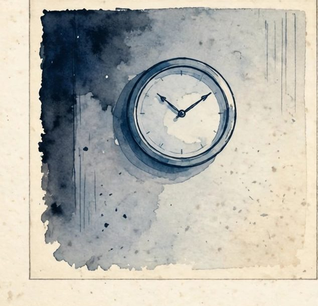
A clock with a plain face and no numerals on a wall at night.
Money will worry you, and pass, the letter says, putting the two halves of the sentence in that order because the younger self will believe the first half instantly and the second half hardly at all. There will be periods when money is the first thought of the morning: rent counted against income, a repair postponed, a small pleasure declined with a practised casualness that costs more than the pleasure would have. The writer does not minimise those periods. They are remembered at the Letter Desk in uncomfortable detail, and some of the clearest sentences in the whole letter were drafted by the memory of an empty account near the end of a month.
The passing, when it comes, is rarely dramatic, and the letter describes it accurately so it will be recognised when it happens. Money worries ease the way weather changes, through small shifts rather than a single sunrise: a debt cleared in instalments, work that steadies, expenses that quietly stop recurring, a month that ends, for once, with something left over. The worry does not always leave when the figures improve, and the writer admits that too. Habits of anxiety outlast their causes and have to be retired separately, like a coat kept on indoors out of long habit. Noticing that the coat is no longer needed is its own slow work.
What the letter most wants recorded is what money worry did not do, in the end, to the life it passed through. It did not settle the value of the person who endured it, though it often claimed that authority at the time. It did not prevent kindness, work, or love from taking place in the same years, though it coloured all three. And it did not last as the permanent condition it presented itself as being. The Keeper keeps this page among the hard-times pages rather than the work pages for a reason: money, in a difficult season, is weather, and weather is to be dressed for and endured, not read as a verdict on the climate of an entire life.
33Loneliness Visits, and Leaves
Loneliness visits, and leaves, the letter says, using the language of a guest because the younger self will otherwise mistake it for a resident. There will be rooms, cities, and whole seasons in which company is scarce or unsatisfying, when evenings stretch and the telephone is quiet and a person can feel unseen in a way that no crowd entirely cures. The writer knows those seasons and does not hurry past them in the telling. They were real, and some of them were long. But the grammar of this page is deliberate. Loneliness arrived, stayed a while, and departed, often without ceremony, when a life changed its shape around it.
The visiting is worth describing honestly, because loneliness in the middle of its stay insists it has always been there and always will be. Memory, consulted at the Letter Desk, contradicts both claims. Before the lonely season there were full tables and easy friendships, and after it there were again, though not always with the same people or in the same rooms. The letter also records what loneliness is not. It is not evidence that a person is difficult to love, or that they have failed at the ordinary business of company. By the evidence of this house, it visits the sociable and the solitary alike, and its visits say more about circumstance than about character.
What helps during a visit, the letter offers modestly, is treating loneliness as weather rather than as identity: keeping rooms lit and lived in, maintaining small regular contacts even when the heart is not in them, letting a routine carry the days until better company, including one's own, returns. The writer also notes, with some surprise in the recording, that certain lonely seasons later became valuable in memory, not because they were secretly good, but because work and thought were done in them that crowded years would never have allowed. The guest is not thanked, exactly. It is simply recorded, on its departure, that the house was not emptied by its stay and was quietly rearranged by it.
34You Will Lose People, and Keep Them
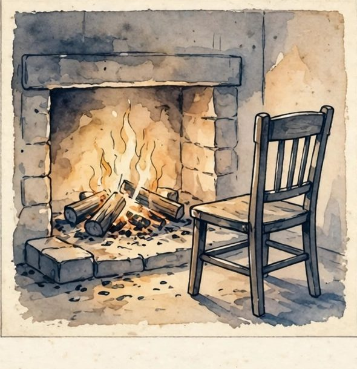
A small fire in a grate, a chair drawn close to its warmth.
You will lose people, and keep them, the letter says, joining the two truths in one sentence because experience joins them in one life. Some losses will come by death, with its finality and its strange bureaucracy of grief. Others will come by distance, by drift, by the slow divergence of roads that once ran together, and these losses, having no ceremony, can be harder to explain to oneself. The letter names both kinds without ranking them. What it promises its reader is only the second half of its sentence: that losing a person's presence is not the same as losing the person entire, and that the keeping is real even when it changes its form.
The keeping takes practical shapes, and the writer describes them so the younger self will recognise the process when it is happening rather than fearing it has failed. A voice remains available in memory with its exact phrasing, consulted on decisions years later. A habit learned from someone continues in the hands without conscious imitation. A story is told at a table to people who never met its subject, and the subject is, in the only way left available, present in the room. The Keeper of the Undelivered Letter knows this kind of keeping well. Half the letters in the drawer are addressed, in effect, not only backward in time but toward people who can no longer receive post at all.
None of this is offered as a replacement that makes loss acceptable, and the letter is careful with the difference between consolation and description. Loss will hurt in proportion to love, and no arrangement of memory prevents that arithmetic. What the keeping does is continue the relationship in the tense that remains available, so that grief is not required to do the additional work of erasure. The younger self is not asked to prepare for particular losses, which this letter has already declined to map. They are asked only to believe, on the writer's word, that the people who matter will not be entirely taken, and that the writer, at the desk, still sets a place for them in the telling.
35Do Not Decide Everything at Midnight
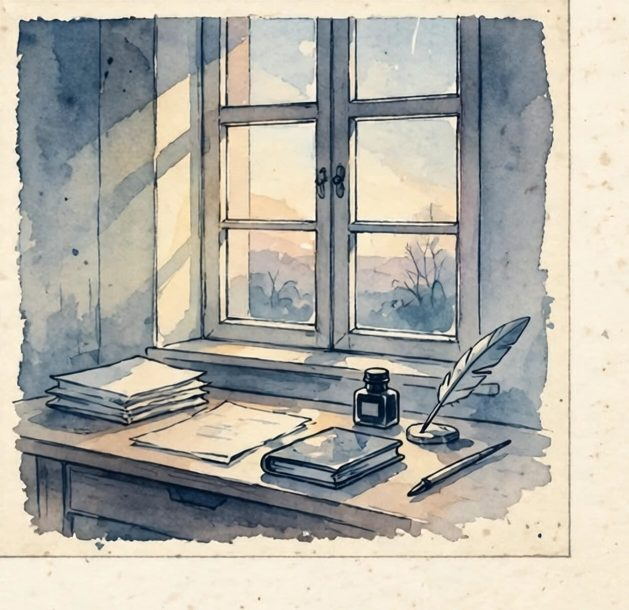
A dawn window after a long night, first light falling across a desk.
Do not decide everything at midnight, the letter advises, returning to a theme the night page touched and giving it a page of its own, because the writer knows exactly how persuasive midnight can be. In the small hours, resignation looks like clarity, severance looks like courage, and the most final available version of any decision presents itself as the honest one. Letters of ending are drafted at midnight with a fluency that daylight rarely matches. The writer confesses, at the Letter Desk, to having drafted several, and records with gratitude that most were still on the desk, unsent, when morning arrived and read them in a plainer and less theatrical light.
The rule the letter offers is procedural rather than grand, which is why it works. Nothing irreversible is to be settled between midnight and morning. Decisions may be considered, listed, even drafted, but the deciding itself is postponed until the decider has slept, eaten, and seen the matter in the company of an ordinary day. Few situations in the accounts kept here were genuinely worsened by a single night's delay, while a considerable number were saved by it. The Keeper keeps the house's own version of this rule over the desk, not as one of the formal doctrines, but as a pencilled note in the margin of the ledger, consulted often.
Midnight itself is not treated as an enemy anywhere in these pages. The small hours have their own honest uses: grief does some of its necessary work there, and so does thought, freed from the day's interruptions. The letter objects only to midnight's claim to final authority. A younger self awake and resolved at that hour is asked to treat their own certainty the way this house treats a letter written in great feeling: keep it, respect it, and read it again tomorrow before acting on it. What survives the second reading is probably true and can be acted on with a whole heart. What does not survive it was weather, and weather, as these pages keep saying, passes.
36Hard Times, Told Without Drama
Hard times, told without drama, is the closing instruction of this section, addressed as much to the writer as to the reader. Drama is a tempting style for difficulty. It enlarges the enemy, simplifies the story, and casts the teller as the lone figure in a landscape arranged against them. The letter has tried, across the last dozen pages, to refuse that style in favour of a plainer one: seasons and weather, nights and mornings, small arrangements honestly described. The Keeper believes the plain style is not merely more truthful. It is more useful to the person who must actually live inside the story being told, since nobody can inhabit a melodrama for long without exhaustion.
Told without drama, hard times become discussable, which may be their most important transformation. A person can ask for help with a difficulty described in ordinary words. They can compare notes with others who have had similar seasons, and discover, often with relief, how common the supposedly singular disaster turns out to be. They can also plan, since planning requires a clear view of the actual obstacle rather than its theatrical shadow. The Letter Desk has a quiet preference, recorded nowhere officially, for accounts that fit on one page. Most real difficulties, stripped of their staging, do fit, and their fitting is the beginning of their being manageable at all.
The younger self is therefore left, at the end of this section, with no portrait of themselves as a tragic figure, and the letter considers that an act of friendship. They will be, in the hard seasons, something less grand and more durable: a person coping, unevenly, with the materials at hand, resting when they can, asking for help when pride permits, and deciding the largest things in daylight. Other people, met later in these pages, will know them in exactly those terms and will love them in them. The section closes the way the desk is left at night: papers squared, lamp lowered, and nothing overstated for the sake of the record.
37About the People You Will Meet
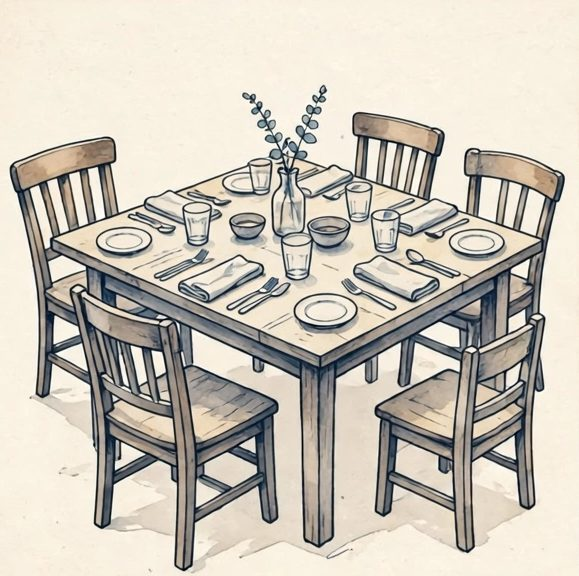
A table set for several people, with chairs of different sizes gathered around it.
About the people you will meet, the letter begins its next section, and it begins by admitting how little of this subject anyone can honestly summarise in advance. The cast of a life cannot be listed at the Letter Desk. It assembles itself across decades, in schoolrooms and workplaces, on journeys and in queues, through introductions half remembered and accidents that later look like appointments. Some of the most consequential people will arrive with no announcement at all, in ordinary clothes, on unremarkable Tuesdays. The writer, who now knows their names and what they changed, resists the temptation to present them as destiny. They were meetings, and meetings are chancier and kinder than destiny usually allows itself to be.
What the letter can offer, in place of a list, is a manner of meeting people that the writer acquired slowly and wishes to pass on early. Assume, until evidence says otherwise, that the person in front of you is carrying an inner house as furnished and as tender in places as your own. First impressions, the accounts here show, are accurate about surfaces and unreliable about depths, and some of the writer's costliest errors were confident early judgements of people who later proved generous, just as some early enthusiasms were spent on people who proved careless. Time is the only reliable introducer. The letter advises letting it do that work without being hurried by either hope or suspicion.
The Keeper adds one observation from the desk, where letters about people outnumber letters about everything else combined. A life is remembered, in the end, largely as its company. Work fades into a summary, places into a handful of rooms, but people remain in full colour, still saying their characteristic sentences. The younger self is therefore entering the section of the letter that matters most to its writer, who has tried to be accurate about everyone named and fair about everyone described. The pages that follow sort the company, gently, into those who stayed and those who went, and consider what each kind of presence taught. The sorting is done with affection, and the affection, the writer hopes, is visible on the page.
38Some Will Stay, Some Will Go
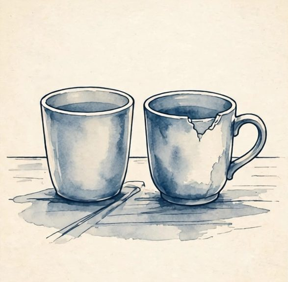
Two cups side by side on a table, one of them chipped at the rim.
Some will stay, some will go, the letter says, and it refuses to present the second half of that sentence as a failure of the first. Friendships and loves have seasons built into them more often than anyone admits at their beginning. Some are for a shared place or a shared work and end, honourably, when the place or the work does. Some deepen across every change and become part of the structure of a life. A younger self tends to treat every departure as evidence: that they were too much, or not enough, or careless with something fragile. The writer, reviewing the whole cast from the Letter Desk, reports that most departures were evidence only of lives moving at different speeds in different directions.
The staying deserves as much description as the going, since it is quieter and easily taken for granted while it is happening. The people who stay do so through a thousand small renewals rather than a single grand loyalty: messages answered, visits kept, forgiveness extended in both directions across the years. They will see the younger self in versions that embarrass the present writer, and versions that the present writer is proud of, and they will hold all the versions in one regard. That continuity is one of the great unadvertised goods of a life. The letter asks its reader to notice it while it is available, because gratitude said late is still welcome, but gratitude said in season is better company.
For the going, the letter offers a practice rather than a consolation. Let people leave in the tense they choose, without rewriting the whole friendship to make the leaving easier to bear. A good season does not become a bad one because it ended, and time spent converting affection into grievance, merely to simplify the account, is time the Keeper has watched many writers regret at this desk. Some of the gone will return in later chapters, changed, and be met again almost as strangers, kindly. Some will not return, and will be kept instead, in the manner the hard-times pages described, in memory and habit and story. Both outcomes are survivable, and neither requires the younger self to become harder in self-defence.
39Love Will Not Always Announce Itself
Love will not always announce itself, the letter warns, gently, because the younger self may be waiting for an announcement in a particular form and may overlook the thing itself while it arrives in another. Sometimes love enters a life in the expected way, with clarity and mutual recognition, and those entries are not being slighted here. But the accounts kept at the Letter Desk are full of love that began as something else: as friendship that deepened past its own intentions, as respect that warmed slowly, as the steady presence of a person whose importance was discovered only when their absence was briefly imagined. The writer missed one such beginning entirely for a while, and writes this page partly in penance for the delay.
The unannounced kind has its own signs, and the letter lists a few without pretending they form a reliable test. It may look like ease, the particular restfulness of being with someone in whose company no performance is required. It may look like attention, being remembered in small accurate ways that flattery never manages. It may look, disconcertingly, like argument that stays kind, or like silence that stays comfortable. What it rarely looks like, the writer notes, is the dramatic certainty the younger self may be expecting, because real attachment is built from days rather than declared in a moment, and days are quiet evidence, easily missed by anyone listening only for a fanfare.
There is a corresponding caution, and the letter includes it for balance. Not every quiet attachment is love arriving in disguise, and not every loud announcement is false. The point of the page is not a method for detection, which this house does not sell in any of its rooms. The point is attention: a request that the younger self judge the people who come close by what they consistently do, over time, rather than by how vividly the beginning was staged. Judged that way, some celebrated beginnings in these accounts fade, and some unnoticed ones become the centre of a life. The writer sets the page down hoping it arrives, in its undeliverable way, in time to matter.
40Choose Kind Company
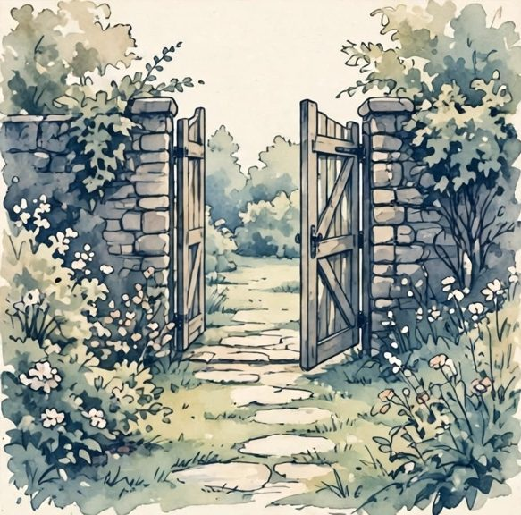
A garden gate standing open between two gardens, light falling across both paths.
Choose kind company, the letter advises, as the one piece of counsel in this section it is willing to state as nearly an instruction, because the evidence behind it fills the drawer. The people a person spends their ordinary days with will, over years, set the temperature of those days. Kind company makes a life warmer without anyone having to plan the warming. It also makes the younger self kinder, since conduct is contagious in both directions and most people rise or sink, slowly and without noticing, to the level of the table they sit at most often. The writer chose well in some seasons and carelessly in others, and the difference is legible in the record like weather in a diary.
Kindness, as the letter means it, should be defined before it is chosen, because the word is easily confused with pleasantness. Kind company is not company that always agrees, always compliments, or always keeps the evening smooth. It is company whose honesty can be trusted not to be cruelty in costume, whose success does not require anyone else's diminishment, and whose treatment of waiters, strangers, and absent friends matches its treatment of the people in the room. The Keeper has a private test, much used at the Letter Desk over the years: listen to how a person speaks of those who are not present, because the absent, sooner or later, include everyone.
Choosing, finally, is described as an ongoing act rather than a single decision made once and filed. Company drifts. Tables change. A younger self will sometimes have to leave a table that has turned unkind, at real cost, and will sometimes have to invite, deliberately, the company they hope to become worthy of. The letter honours both movements and notes that the second is as important as the first. By the later pages of this account, the writer's own table is a kind one, set with chairs of different sizes and a history of long evenings, and it did not assemble itself by accident. It was chosen, and chosen again, in the small hours of a hundred ordinary decisions about who to spend a life among.
41A Few People Will Change Everything
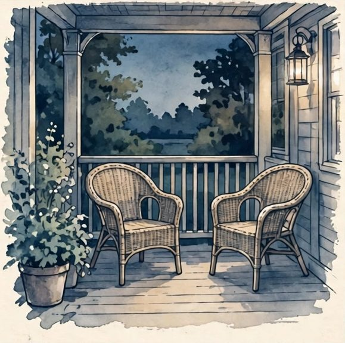
A porch with chairs turned toward each other in the evening, the light low and the conversation not yet finished.
Not many people will change everything, and the letter is plain about the number. A few will. They will not always arrive with ceremony, and you will seldom recognise the weight of a meeting on the day it happens. Someone will say one true sentence at a kitchen table. Someone will offer work, or trust, or a standard you quietly decide to live up to. Someone will leave, and the leaving will alter the shape of the years that follow. The porch where two chairs are turned toward each other is the right picture for most of it. Great changes in a life often begin as ordinary conversations, in ordinary light, between people who do not yet know what they are starting.
The letter will not give you a list of names, because a list would become a test you applied to everyone you met, and that would spoil more meetings than it saved. Instead it offers a way of noticing. Pay attention to the people after whom you think more clearly. Notice who tells you the truth without enjoying the telling, who is steadier after your failures than after your successes, who leaves a room calmer than they found it. Change for the better rarely shouts. More often it accumulates, visit by visit, until one day you realise your standards, your courage, or your direction have quietly moved, and you can trace the movement back to a chair on a porch.
What the letter asks, in the end, is gratitude practised while it can still be spoken. The few people who change everything are mortal, busy, and often unaware of what they carried into your life. Thank them in the present tense where you can. Write the note. Make the call. Keep the chair turned toward theirs when your own porch is the one being visited. And when you discover, later, that you have been such a person for someone else, receive it without embarrassment. That is how the small number grows across a lifetime, one unremarkable, decisive conversation at a time, each person passing on what was once quietly given to them.
42Forgive Carefully, Not Carelessly
You will be told, at various times, to forgive quickly, as if speed were the proof of a generous heart. The letter disagrees, gently. Forgiveness given before you have admitted what actually happened is not generosity. It is tidiness, and it tends to leak. Forgive carefully instead. Name the act plainly, at least to yourself. Count what it cost without inflating or shrinking the sum. Decide what you are releasing and what you are not, because those are separate decisions. A careful forgiveness may take a season to arrive at, and the letter regards that season as part of its honesty rather than a failure of character on your way to it.
Careful also means that forgiving and trusting are not the same act, and no one is owed both in a single gesture. You may release a debt and still keep a door closed. You may wish a person well and still decline their company. The letter has watched forgiveness demanded as a kind of erasure, where the injured person is asked to pretend the account was never opened, and it refuses that bargain on your behalf. What happened, happened. Forgiving it does not rewrite it, and it does not require you to hand over the same opportunity a second time. Wisdom and mercy can share a desk without either one apologising for the other.
Careless forgiveness, by contrast, is often just conflict avoided at a discount, and the balance comes due later with interest. So take the time the work actually takes. There will be people you forgive fully and warmly, and the letter is glad of them. There will be others you forgive at a distance, in pencil, over years. There may be one or two accounts you never settle, and the letter does not grade you for that either. It asks only that the decision be yours, made with open eyes, rather than a performance staged to keep a room comfortable. A blank card left unsealed while you think is not indecision. It is respect for the weight of the words.
43Someone Is Watching How You Treat People
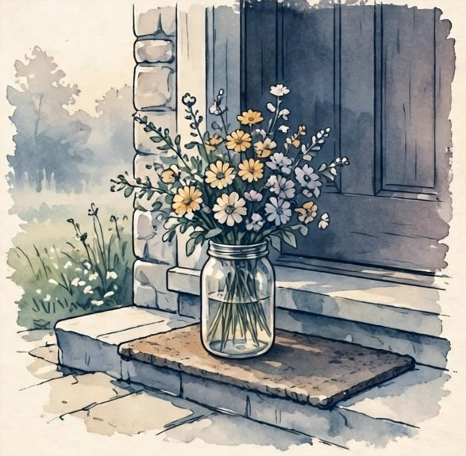
A bunch of flowers in a jar on a doorstep at dawn, left where the right person will find them first thing.
Someone is watching how you treat people, and it is rarely the person you would perform for. It is a younger colleague learning what is normal here. It is a friend deciding, without saying so, whether your kindness survives inconvenience. It is a child at the edge of a gathering, absorbing the exact tone adults use toward waiters, neighbours, and anyone who cannot answer back. The letter does not tell you this to make you self-conscious. It tells you because conduct is a form of teaching whether you intend the lesson or not, and the students are usually quieter, and more attentive, than the room ever suspects at any hour of the day.
The watching is sharpest at the unguarded points. How you speak about someone who has just left the room instructs everyone still in it. How you treat the person who can do nothing for you sets the true price of your courtesy, and observers do the arithmetic accurately. The flowers left on a doorstep at dawn belong in this room of the letter for a reason. Small, unannounced decencies are the ones most often remembered and repeated, because they cannot be explained away as strategy. Nobody leaves flowers before sunrise to be seen doing it. That is precisely why the person who finds them believes them, and why the example travels further than speeches.
Do not let this knowledge harden into performance, because watched virtue curdles quickly into theatre, and audiences can tell. The letter asks for something simpler and harder to counterfeit. Treat people decently in the ordinary run of days, especially when you are tired, hurried, or disappointed, since those are the conditions under which your real practice shows. You will fail at it sometimes, in tone if not in act, and then the watching includes how you repair a failure, which may teach more than the failure cost. Apologise cleanly. Correct the record. Then go on. Somewhere, someone is learning from you how a person is supposed to be treated. Give them good material.
44The Friend You Underestimate
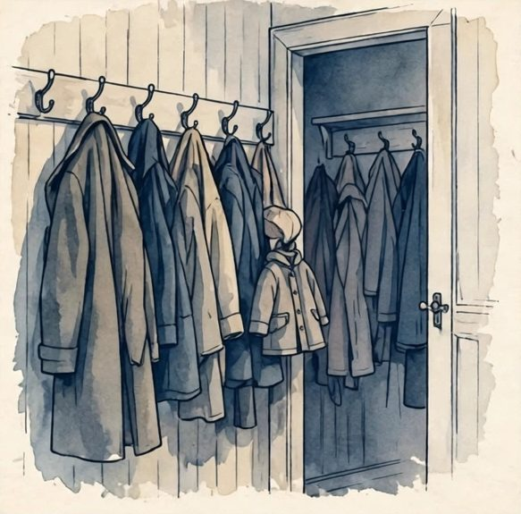
A doorway with coats of many sizes hanging on hooks, each one known, each one left within easy reach.
There is a friend you underestimate, and the letter will not name them, because you would argue with the name and miss the description. This is not the friend with the dramatic rescues or the memorable speeches. This is the one whose coat has hung by your door for years, in every season, without announcement. They remember the appointment you mentioned once. They appear during moves, illnesses, and dull emergencies with practical hands and no commentary. Because their loyalty makes no noise, you have filed it under background, the way a household files warmth under weather. The letter is written partly to correct that filing, which is unjust and, over time, expensive.
Underestimating this friend is easy because steadiness is hard to dramatise and gratitude tends to chase spectacle. The letter has the advantage of the long view. Across decades, the spectacular friends and the steady ones sort themselves out, and it is not always the order you would have predicted at twenty. Some bright presences were seasonal. The quiet one kept arriving. Notice the pattern early and you will save yourself a particular regret, the regret of having thanked the wrong qualities while the real provision went unacknowledged in the hallway. Provision deserves naming. A person who is always there is not a fact of nature. They are a decision, renewed often, at cost you rarely see.
So the letter offers one piece of advice plainly, since advice is permitted when it is offered rather than imposed. Thank this friend specifically, and not in passing. Say what their steadiness has made possible. Invite them first sometimes, not as the reliable extra when brighter plans fall through. And examine, honestly, whether the friendship runs in both directions or whether you have been content to be the one whose door is visited. If the account is uneven, balance it while balancing is still easy. The coats on the hooks belong to people of many sizes and seasons, but the household is held together by the ones who keep coming through the door and hanging theirs up like they belong there, because they do.
45Family, in Several Tenses
Family exists in several tenses at once, and much of your confusion will come from using only one of them at a time. There is the family of the past tense, the household as it was, where you were small and the arrangements seemed permanent and beyond appeal. There is the family of the present tense, adults meeting adults across a table, carrying jobs, losses, and opinions the child at that table never imagined. And there is a future tense, in which roles reverse slowly and the cared for become, in part, the carers. The letter asks you to notice which tense you are speaking in before you judge a sentence, a silence, or a visit. Half of family sorrow is a tense error.
The people themselves will change tense under your eyes, which is the harder lesson. A parent who seemed a fixed institution becomes a person with a history, fears, and a diminishing margin, and the discovery can feel like loss even when it is really sight. A sibling becomes a stranger, then, sometimes, a friend of a quality no new acquaintance can match, because no one else holds the same early evidence. The letter does not promise harmony in any tense. It reports that the family you argue with at one age may be the family you understand at another, using the same facts, differently lit. Keep the evidence. Withhold the final verdict. Verdicts in families age worse than almost anything else in this letter.
What the letter recommends is modest and repeatable. Speak in the present tense when you can, to the people actually in the room, rather than to their earlier editions. Forgive the past tense its limitations without requiring it to have been the present. Let the future tense arrive at its own pace, and do not borrow its griefs early out of a sense of duty. Set the table for who is here. Some chairs will be empty in ways that ache, and some will hold people the child you were could not have pictured, laughing in the family kitchen as if they had always belonged. Both things are true. Family, in all its tenses, usually is.
The Letter Desk
One desk receives all correspondence for this house — questions, corrections, and word of any letter written to a younger self: a hard time, a person, a dream, something withheld, something forgiven. It is read in the order it arrives.
46Strangers Will Surprise You Kindly
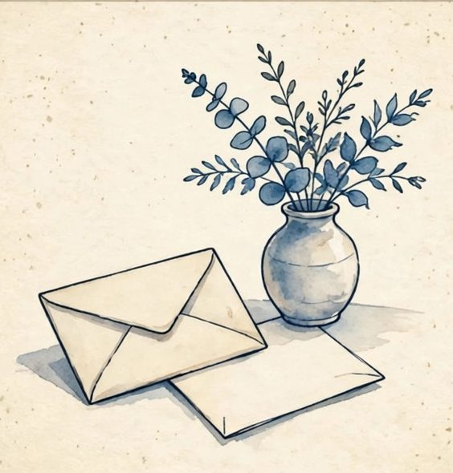
A letter of thanks, a blank page, resting beside a vase on a table, waiting to be written properly.
Strangers will surprise you kindly, and the letter states it early in this room because suspicion, once settled, is hard to evict. You will be lost in a city whose language you half speak, and someone will walk you two streets out of their way. Your car will fail in weather that gives nobody a reason to stop, and somebody will stop. A stranger will hold a door, return a dropped glove, translate a form, or say the one useful sentence at a counter where you are floundering. None of this will be owed to you. That is the point. A portion of the world runs on unrequired decency, and you will live in that portion more often than the headlines of any year suggest.
The letter is not naive about strangers, and it does not ask you to retire your judgement at the door. Caution has its honoured place in an earlier hall. What it asks is that caution not curdle into a theory of everyone. A theory of everyone is a heavy coat to wear daily, and it distorts the evidence, because kindness from strangers is quiet and easily forgotten, while a single sharp encounter is rehearsed for years. Keep the ledger honestly. Enter the small mercies in the same ink as the injuries. When the account is kept that way, most people who keep it are surprised by the balance, and the surprise itself is worth having before you are old.
There is a discipline attached to receiving kindness well, and the letter commends it to you. Accept help without immediately trying to erase the debt, since frantic repayment can turn a gift into a transaction and embarrass the giver. Say thank you as if you mean the words rather than the exit. Then, when the chance comes, pass the thing along to a stranger of your own, in a city, on a road, at a counter. The blank page beside the vase is the letter's small emblem for this. Gratitude, written or enacted, is how the surprise renews itself. You will be both parties across a lifetime, the lost one and the one who stops. Play the second part as gladly as you needed the first.
47You Will Be Someone's Older Memory
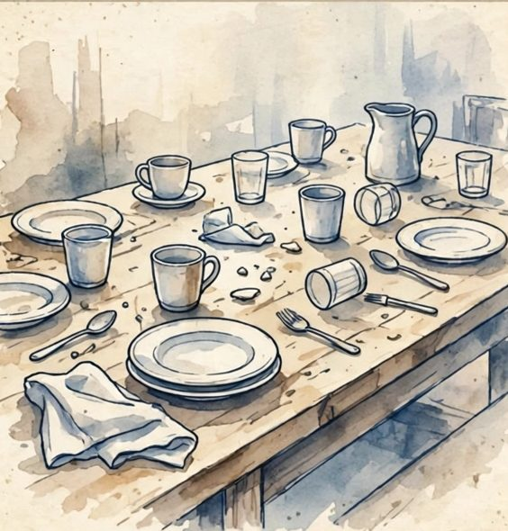
A long table after a gathering, cups and plates in kind disorder, the room still warm from company.
You will be someone's older memory, and the thought may arrive as a surprise, since you still feel like the youngest person in most of your own recollections. But time is already arranging it. Somewhere a person younger than you is storing the way you laughed in a kitchen, the advice you gave in a car, the afternoon you showed up when showing up was the whole of it. To them, you will one day be the earlier world, the way things were done, a voice from the far side of their growing up. The long table after a gathering is the honest image. The event ends. The cups remain. What people carry away from it is rarely the menu.
The letter does not offer this as a burden, and it is careful not to make a performance of it. You cannot conduct yourself, hour by hour, as a monument under construction, and the attempt would make you unbearable company. It offers the thought instead as a quiet adjustment of scale. Your ordinary conduct has a longer half-life than you assume. A patience you barely remember may be retold for decades. A careless cruelty may be, too, which is worth one sober sentence and no more. Mostly, though, what survives is tone. People remember whether being near you felt safe, interesting, and unjudged, long after the details of any single day have dissolved. Tone is a thing you can actually govern.
There is comfort in this room as well, and the letter intends you to take it. To be someone's older memory is to be carried forward in the only form of lasting that most lives are granted, in the recollections of people who go on living after your part in their story has changed tense. You do not control the edit. You never did. What you supply is the material, day by ordinary day, and much of the material you have already supplied is better than your self-assessment reports. The gathering ends, the table is cleared, and somewhere a younger person is already telling a story that begins with your name. Live so the story is easy to tell kindly, and let the rest go.
48People, Told Plainly
This hall closes the way the letter prefers to close its accounts of people, plainly. Some will stay and some will go, and the going will not always be a verdict on either party. A few will change everything. One will be underestimated until you learn better, which you will. Family will speak in several tenses and require translation at every age. Strangers will hold doors you did not know were closing. You will be watched, remembered, misremembered, and, by a merciful number of people, understood more accurately than you understand yourself on your tired days. That is the whole census. The letter has no villains to exhibit and no saints to unveil. It has people.
Plain telling is a discipline, and it is harder than the dramatic kind. Drama assigns parts quickly and excuses the teller from further thought. Plainness keeps looking. It can hold, in one paragraph, that a person was generous and unreliable, that a friendship ended and was real, that a kindness and an injury sometimes arrived from the same hands in the same year. The letter has tried to keep its people that size throughout this hall, neither enlarged into lessons nor shrunk into warnings. You are asked to keep your own accounts at the same scale. A person reduced to what they taught you has been quietly robbed, and the letter declines to rob anyone, even in the service of a tidy moral.
So the bench by the gate is where this hall leaves you, with the path running both ways. People will come down it toward you and go down it away from you for the rest of your life, and your work is mostly the same in both directions. Receive them as persons, not as drafts of who you needed them to be. Let them go without rewriting them when the path takes them. Sit down sometimes between arrivals and drink your tea while it is warm. The next hall turns to work and dreams, which will occupy your days at least as much as people do. But the letter's order is deliberate. People first, in the telling, because in the living they were never actually second.
49About Work, and What It Is For
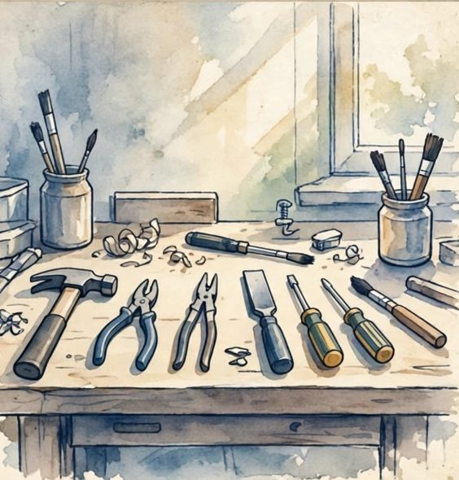
A workbench with tools laid in a row in morning light, each one used, each one kept in its place.
Work, the letter begins, is for several things at once, and confusion about the proportions will cause you more trouble than any single job. Work is for keeping a roof and a table. It is for being of use to people who are not yourself, in ways they can feel. It is for structure, the honest scaffolding of days. And it is for the quiet satisfaction of a thing done properly, which no salary has ever fully itemised. What work is not for is proving that you deserve to exist. The letter is firm on this point. The bench in the morning light holds tools, not verdicts. A tool's worth is in the work it makes possible, and a person's worth was never a tool at all.
You will meet years in which one purpose drowns the others. There will be a season when work is almost purely for money, because the bills are real and the margin is thin, and the letter does not romanticise that season or ask you to pretend it was a seminar. There will be another season when the pay is adequate and the use has drained out of the days, and that flatness will trouble you more than the hard season did, because the scaffolding is standing around nothing. Both seasons pass. Both teach. The mistake is mistaking either one for the permanent definition of work, and then building a whole life, or a whole self-accusation, on top of a temporary arrangement of purposes.
So the letter leaves you two questions to keep in the bench drawer, to be taken out at intervals of a few years. What is this work for, at present, in honest proportions. And what is it costing that does not appear in the accounts. Ask them in the morning, in plain light, and write the answers down, because memory revises them dishonestly in both directions. If the answers sicken you, change what can be changed, in the order it can be changed, without theatrical resignation speeches. If the answers satisfy you, say so and work contentedly, which is rarer advice than striving and possibly more useful. Either way, keep the tools in their places and the purposes in view. A life is largely made of workdays. They deserve clear eyes.
50Your Dreams Will Change Shape
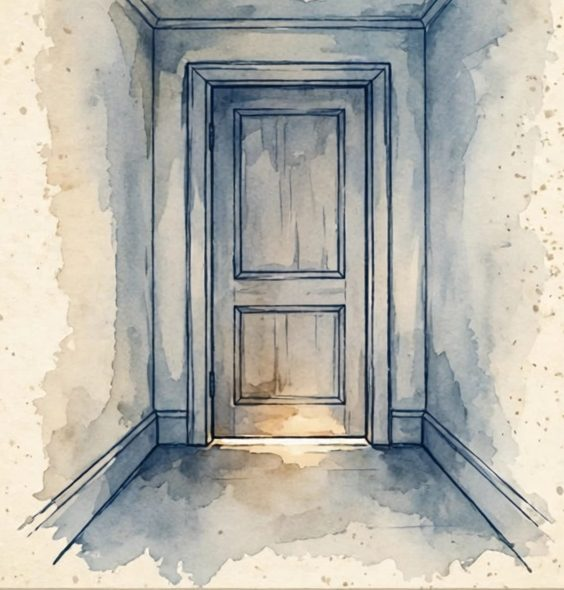
A door closed in a corridor with light showing under it, the day continuing on the other side.
Your dreams will change shape, and the letter asks you to hear that as a report rather than a warning. The dream you hold now was built by a person with your present evidence, your present strength, and your present idea of what a good life looks like from this side of it. As the evidence accumulates, the dream will be renovated, sometimes by choice and sometimes by weather. A door you aimed at for years may close, with light still showing under it, belonging to a life that goes on being lived by somebody, just not by you. That is not the same as the dream dying. Shape is not essence. The wish underneath, to make, to roam, to build, to be free, often survives every outline it was first drawn in.
You will grieve some of the old shapes, and the letter permits the grief without decorating it. A dream let go of after long service deserves a decent farewell, not a hasty rebrand in which you claim you never wanted it anyway. You did want it. Wanting it taught you skills, stamina, and taste that the next shape will inherit in full. Nothing spent in honest pursuit is refunded, but very little of it is wasted either, since a person is partly built out of the dreams they have already outgrown. Keep a relic or two. A sketch, a list, a photograph of the workshop that never opened. Relics are proof of seriousness, and seriousness, unlike any particular shape, is a permanent asset.
What the letter advises, then, is to hold dreams the way good carpenters hold plans, firmly enough to build from and loosely enough to amend in pencil. Review them at intervals, the way you would review the purposes of work, and amend them without a press release. A dream at forty that differs from the dream at twenty is not evidence of surrender. It is evidence that a life has been lived in between and has filed its reports. Some dreams will even improve in the changing, growing smaller in display and larger in truth. You will know those by the calm that comes with them. The corridor is long, doors keep appearing in it, and the light under the next one is not required to resemble the last.
51The Plan Will Not Survive Intact
The plan will not survive intact, and the letter delivers this news in the same tone it would use for weather. Plans are made by a person standing at the start of a stretch of road, with a map drawn from reports. The road itself has opinions. Money moves, health interrupts, other people change their minds at exactly the load-bearing moment, and opportunities arrive wearing the wrong clothes entirely. None of this is a personal failure of planning, and the letter will not allow you to file it as one. A plan that survives intact usually turns out to have been a very short plan, or a description written afterwards and backdated. Honest plans are the ones with crossings out.
What survives, when a plan does not, is more valuable than the document. The thinking survives, the preparation, the list of what mattered and in what order. A good plan teaches its maker the terrain even as the route across it changes, which is why experienced people plan more, not less, despite knowing the fate of plans. They are not buying certainty. They are buying orientation, the ability to improvise without panic because the priorities were settled in a calm hour. Keep planning, then. Plan in detail and in pencil. But measure the plan by whether it helps you move sensibly when it breaks, not by whether it breaks, because it will, and the breaking is not the story.
The letter adds one caution from the far side of several beautiful, intact, useless plans. Do not fall in love with the document. There is a temptation, when the road diverges, to spend your strength defending the plan's honour instead of serving the purpose the plan was built for. The purpose is the senior partner. When the two argue, follow the purpose and amend the paper. People who learn this early lose very little by their revisions. People who never learn it can spend a decade arriving, punctually and exhausted, at a destination chosen by a younger self with half the facts. Fold the corner of the page where you changed your mind. It is the most useful page in the file, and one day it will read like wisdom.
52Learn the Skill Under the Skill
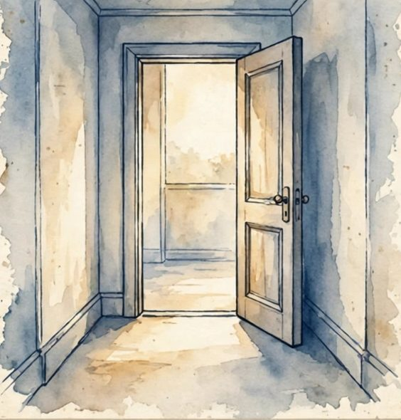
Another door open in the same corridor, bright beyond it, a second room waiting behind the first.
Every skill you learn has another skill underneath it, and the letter advises you to dig for the second one while your hands are busy with the first. The visible skill is the trade, the instrument, the technique with a name and a certificate. Underneath it sits the transferable thing. Patience under the craft. Listening under the selling. Judgement under the managing. The ability to begin again calmly under nearly everything worth doing. Those under-skills are the real capital, because trades change their tools, industries rearrange themselves, and doors close in corridors you thought you knew. The under-skill walks through the next open door with you, fully portable, asking no one's permission.
You will not always be taught the under-skill by your teachers, because it is hard to examine and harder to advertise. You learn it by watching how the best practitioners handle the parts of the work that are not the work. The master who stays courteous during the disaster is teaching composure as a technique. The colleague who asks one more question before answering is teaching diagnosis as a habit. Keep a private list, the letter suggests, of the under-skills you are acquiring, in plain words, reviewed yearly. It will look unimpressive and it will be the truest inventory you own. When a career wobbles, read the list before you read the vacancies. It describes what you can actually offer any room you enter.
There is also an under-skill to this letter's own subject, and it is worth naming before the hall moves on. Underneath every dream you revise and every plan you amend sits the skill of staying in relation to your own life, interested rather than estranged, across changes you did not order. That skill is practised in small ways. In beginning the next thing without a speech. In asking what this season is teaching underneath what it is interrupting. In treating each new room as a room, with its own light, rather than as an apology for the previous one. Learn the skill under the skill, in work and in living alike, and very little that happens to you will be able to make you a beginner at everything again.
53Rest Is Part of the Work
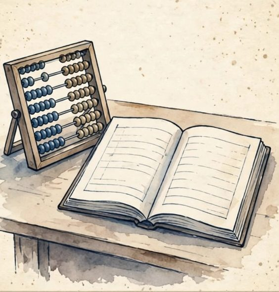
An abacus and a ledger with ruled lines only on a desk, the accounts left open and the chair pushed back.
Rest is part of the work, and the letter enters it in the ledger in the same hand as the labour, because for years you will be tempted to enter it as theft. The temptation has a recognisable voice. It says that the task is nearly finished, that stopping now is indulgence, that other people manage on less. The letter has audited that voice across decades and reports its findings without pleasure. The work you do exhausted is measurably worse, slower to correct, and more expensive in temper than the same work done rested. Rest is not the reward the work buys. It is one of the materials the work is made from, like light in a room or sharpness in a tool.
Notice, too, that the work is never actually finished, which is the trap inside the argument for postponing rest. There is always one more page, one more message, one more improvement available to a person willing to burn the evening. If rest must wait for completion, rest will wait forever, and the ledger will show the cost in a different column, as errors, ailments, and a narrowing of the person doing the work until only the work is left in them. The letter has seen that narrowing from the inside and describes it plainly so you can recognise its early stages. When every conversation becomes a report and every hour must justify itself, the accounts are already falsified, however busy the columns look.
So practise rest as a discipline rather than a collapse. Stop while the stopping is your decision, at an hour you chose in a calm moment, and let the chair stand pushed back from the desk without an apology arranged on the seat. Sleep is the largest part of it and the least negotiable. But there are smaller rests with their own accounts. A walk taken without a podcast of self-improvement playing over it. A meal eaten at a table. An evening in which nothing is produced and no one is improved. Enter them all without shame. The abacus does not judge what it counts, and a life, properly audited, counts rest among its assets, because everything you value in the other columns was built by a person who sometimes stopped.
54A Door Will Close That You Wanted
A door will close that you wanted, and the letter will not insult you by rushing past the fact. It may be the post you prepared for across two years, the house, the partnership, the version of the future you had already furnished in your mind and begun, quietly, to live in. You will do the work, meet the standard as far as you can judge it, and the answer will still be no, delivered sometimes kindly and sometimes by silence, which is the hardest kind to frame. The letter has stood in that corridor. It does not describe the moment as a blessing in disguise. At the time, it is a door closing on a room you wanted to enter, and honesty starts there.
What the letter can report is what the closing is not. It is not a verdict on your worth, issued by an authority qualified to judge it. Hiring panels, markets, committees, and circumstances judge fit, timing, budgets, and luck, and then their decisions get misfiled in the heart as judgements of the person. Refuse the misfiling. It is also not the end of the corridor, though for a while the corridor will look like nothing but wall. Other doors exist that you cannot currently see, not because they are hiding, but because your attention is, properly and humanly, entirely on the one that shut. Attention widens again. It takes longer than advice suggests and less time than grief predicts.
In the longer account, the letter can say this much without claiming the closing was secretly good. A life is not ruined by one wanted door, and some of the energy that would have been spent in that room goes, eventually, into rooms that suit the person you actually become. That is not a reason to be grateful for the slam. It is a reason to keep your hand off the handle after the door has closed, rather than spending years rattling it while the corridor fills with other life behind you. Return the key to its hook. Grieve in the correct amount, which is the amount it takes. Then walk on, not because the door did not matter, but because it did, and you are more than the rooms you were refused.
55Another Door You Never Imagined
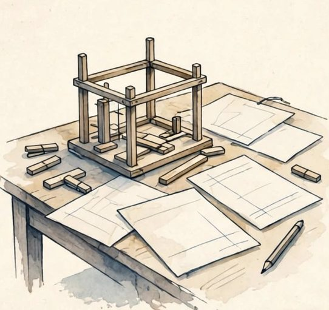
A half-finished built thing on a table, its plans as blank sheets beside it, the work inviting a closer look.
Another door will open that you never imagined, and it will probably not look like a door at first. It will look like a side errand, a favour, a half-finished thing on somebody else's table that needs a pair of hands. It will arrive without the architecture of your ambitions around it, no corridor, no title over the lintel, and it will be easy to walk past while scanning the horizon for something grander. The letter, which knows where several of your best years actually began, asks you to cultivate a specific kind of attention. Examine the odd, small openings with the same seriousness you reserve for the obvious ones. Some of them are errands. A few of them are the main road, in work clothes.
The unimagined door has one unfair advantage over the imagined kind, and it is worth understanding before you are standing in front of it. It was not designed by your fears. The doors you imagine are quietly sized by what you currently believe you deserve, can handle, or would not be embarrassed to be seen entering. Reality is under no such instructions. It may offer work larger than your self-estimate, or smaller and better, or sideways into a field whose name you cannot yet spell. Because you did not imagine it, you also did not rehearse your refusal of it, which is sometimes the only reason an opportunity survives its first meeting with you. Let it survive a second meeting too. Ask questions before you decide what it is.
None of this obliges you to walk through every strange opening, and the letter is not recruiting for recklessness. It asks for a pause, an inspection, a trial of the handle. Look at the half-finished thing closely. Ask who built this far, and why it stopped, and what finishing it would teach. If you enter, enter with your standards intact and your exit known. If you decline, decline for reasons you can say aloud, not because the door failed to resemble your drawings. Years from now, telling the story of your working life, you will notice how much of it came through openings that were on nobody's plan. The letter's whole advice on the subject fits in one plain sentence. Keep your imagination humble. The world has a larger one.
56Money Is a Tool, Not a Verdict
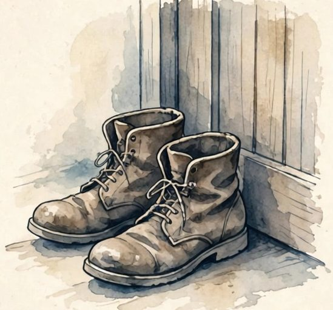
A pair of worn working boots by a door, set down to rest, their day's work honestly done.
Money is a tool, not a verdict, and the letter knows you will need the sentence in both of the directions money trouble takes. In the lean years it will whisper that the thin account is a judgement of the person holding it, that worth and balance are the same column. They are not. A balance records what came in, what went out, and what the season cost. It says nothing reliable about the quality of the hands doing the work. And in any comfortable years that follow, the same tool will tempt you to the opposite error, reading a healthy account as a certificate of character. Refuse both readings with equal calm. Boots by the door are honoured for the work they did, not priced as a biography.
As a tool, money has a proper description, and the letter gives it plainly so the tool can be handled without drama. Money buys shelter, time, ingredients, medicine, travel, and the ability to say no to arrangements that would otherwise be compulsory. Those are serious powers, and pretending money does not matter is a luxury the letter does not deal in. What money cannot buy, it cannot buy, and the list is longer than the first one. Handled well, it is kept sharp, counted honestly, and put down when the work changes. You will make errors with it. Everyone whose ledger the letter has seen made errors with it. The discipline is to keep the errors factual and small, entered in ink, learned from once rather than paid for repeatedly.
So keep your accounts the way the keeper of any good workshop keeps them, regularly and without theatre. Know what you owe, what you hold, and what a month actually costs, because vagueness about money is where both fear and folly breed. Do not compare your ledger with ledgers you cannot see the whole of, which is all of them. When you have enough, notice that you have enough, since a tool admired instead of used becomes a collection, and a person can spend a life polishing a collection while the work it was for goes waiting. And when you have little, let little be a figure and not a sentence. The letter has been both. The figure changed. The person, to their own quiet surprise, was never the figure.
57Make Things and Show Them
Make things and show them, the letter says, and it puts the two verbs together on purpose, because for years you will be excellent at the first and evasive about the second. Making is private, controllable, and kind to the maker. You can revise in secret, abandon in secret, and keep the standard where only you can see it wobble. Showing is the exposed half of the work. It admits other eyes, other uses, and judgements you cannot schedule. But a thing unshown is unfinished in one specific way. It has not yet met the world it was made for, and the maker has not yet received the information that only the meeting produces. The drawer is a comfortable place. It is also where work goes to stay potential.
Your reluctance will dress itself as standards, and sometimes it will even be telling the truth, since some things are shown too early and suffer for it. The letter is not arguing for haste. It is arguing against the perfect as a hiding place. There is a recognisable moment when a thing is as good as your current ability makes it, and further private revision becomes a way of avoiding the next ability, which only response can teach you. Learn to recognise that moment. It usually feels like a small, specific fear rather than a large, principled objection. At that moment, tie the parcel, carry it out, and let people see it. Some will be indifferent. Some will be exact in ways that sting and help in equal measure. A few will be waiting for exactly it.
Showing things also changes the maker's account of themselves, which may be its deepest use. A person who has shown work owns evidence, a shelf of attempts that survived daylight, and evidence steadies a person in the seasons when confidence is running on memory. Start small if small is what honesty allows. Show one thing, to a small room, and stay in the room while it is looked at. Answer questions plainly. Do not apologise for the work as a way of arriving before criticism does. Then make the next thing with everything the showing taught you, and show that too. A life in making is mostly that rhythm, repeated without ceremony. Made, shown, learned, made again. The letter can trace nearly everything it is proud of to somebody finally opening a drawer.
58Failure Will Teach, Expensively
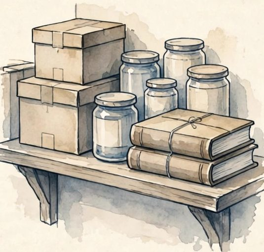
A shelf of finished honest work, boxes, jars and bound blank books kept in good order.
Failure will teach, and the tuition will be expensive, and the letter declines to pretend otherwise in either direction. Some of your failures will cost money you had assigned to better purposes. Some will cost time, which is the currency you will learn to count most carefully. Some will cost standing, in rooms whose opinion you valued, and that invoice is paid in a tender currency. The letter lists the costs plainly because a young person deserves honest pricing. What it will not do is call the tuition wasted by default. A failure examined is one of the few reliable schools there is, and its graduates can usually name, with embarrassing precision, exactly what they learned and what the learning cost.
The examination is the part under your control, and it has a method the letter commends. While the failure is still fresh enough to be accurate, write down what actually happened, separating the decision, the information available at the time, and the outcome, which are three different exhibits and are usually tried as one. Note what you would repeat and what you would not, because most failures are mixtures, and discarding the sound parts along with the rotten ones doubles the price. Then close the account. A failure kept open as a permanent self-accusation stops teaching and starts merely charging. The shelf in this room holds finished work, and it is worth remembering that everyone whose shelf you admire paid for the polish in the same hard school.
You will also discover that failure has a social half-life shorter than you fear. You will rehearse certain collapses for years, assuming they are the headline under your name in every room you enter. Mostly, they are not. Other people were busy with their own accounts, and what they retained, if anything, was how you conducted yourself afterwards, whether you paid what you owed, admitted what was yours, and began again without requiring the room to comfort you first. Conduct after failure is a large part of character, and it is the part the letter most wants you to fund. Fail, examine, settle, continue. The order matters. Skip the examination and you pay twice. Skip the settling and you pay always.
59Your Name on Honest Work
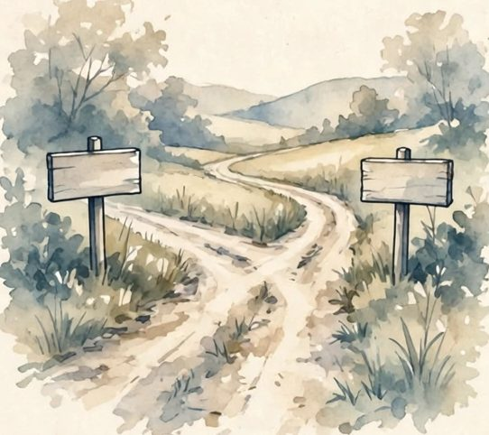
A road forking in soft light, two blank signposts standing where the ways divide.
Your name will go on your work, whether you sign it or not, and the letter asks you to keep the unsigned kind as carefully as the signed. A reputation is mostly an accumulation of unsigned moments. The estimate kept when keeping it cost you. The fault admitted before it was discovered. The small job finished to the same standard as the large one, in a week when nobody with authority was watching. People assemble these into a judgement and attach your name to it, and the assembly, once complete, is remarkably durable in both directions. The letter has benefited from that durability and been billed by it. It reports that the account is kept by others, in pencil at first, and in something harder later.
Honest work is the only kind that never needs a second set of books, and that economy is its own reward across a long career. The dishonest shortcut looks cheap at the point of sale and then charges rent forever, in vigilance, in explanations kept consistent, in rooms that must not meet each other. The letter watched people pay that rent and does not envy a single payment. So take the plainer road where the ways divide. Charge fairly, describe accurately, deliver what was described, and repair what fails without being chased. It sounds like a small ethic. Sustained over decades, it becomes the thing your name means in your trade, and there are worse things for a name to mean than that it can be trusted at face value.
There will be pressure against this, and it will rarely announce itself as pressure toward dishonesty. It will arrive as realism, as the way things are done, as a favour for a friend, as a corner everyone cuts. The letter's advice is unglamorous and complete. Keep your corners. A person is allowed to be ambitious, competitive, and eager to be paid, and none of those requires a bent entry anywhere. When you are offered work you could not describe honestly at a family table, the description problem is the answer, and you already have it. Let your name stay light enough to carry into any room. At the fork, that lightness is how you will know which signpost, blank as they both look, is pointing at your road.
60Dreams, Adjusted Without Shame
This hall closes with the adjustment of dreams, and the letter insists on the final two words of its title. Without shame. You will revise dreams that once organised your whole imagination, and the revision will sometimes be visible to people who remember the original announcement, and a voice, partly theirs and partly your own younger one, will call the adjustment by unkind names. Answer it with the facts. The dream was made with the evidence then available. The evidence changed, because a life was lived and filed its reports. Adjusting a course in the light of better information is not a character flaw in any other field of human effort, and it is not one here.
Notice what adjustment is not, since the letter has seen the counterfeits. It is not the pre-emptive shrinking of a dream to whatever seems safely unembarrassing. It is not the story, revised afterwards, in which you claim the smaller thing was the ambition all along. And it is not surrender dressed in the vocabulary of acceptance, a setting down of the whole enterprise because one shape of it failed. Adjustment is specific. This part kept, this part released, this part moved to a later season, this part recognised as belonging to a person you were and honoured accordingly. Done that way, an adjusted dream keeps its spine. It may walk differently. It has not been taught to crawl, and it does not need to apologise for its gait.
So keep dreaming for as long as the letter's writer has managed to, which is longer than the younger self would have predicted and in shapes neither of us could have drafted. Keep the lamp lit over the page. Let the window stay open to the season the dream is actually being lived in, rather than the one it was written for. Some adjusted dreams will prove, in the living, to be better than their originals, roomier in the places that matter and quieter in the places that do not. You are not required to decide that in advance, or to announce it to anyone. It is enough to make the adjustment honestly, sign it in your present hand, and go on working. The next hall of this letter turns to what will not be told at all, and why the withholding, too, is a form of care.
The Letter Desk
One desk receives all correspondence for this house — questions, corrections, and word of any letter written to a younger self: a hard time, a person, a dream, something withheld, something forgiven. It is read in the order it arrives.
61What I Will Not Tell You
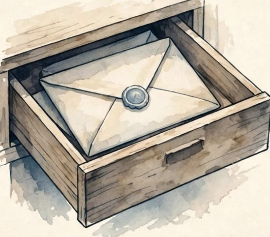
A sealed envelope resting in a drawer, kept unopened.
This part of the letter begins with a plain admission, set down at the Letter Desk where plain admissions belong. There are things I know now that I will not tell you, and the withholding is deliberate rather than careless. It is not that the information is too fine for you, or that you have failed some test of readiness. It is that a letter which told everything would stop being a letter and become a summary of a life not yet lived. The Keeper keeps a sealed envelope in the drawer for this exact reason, to remind the writer that keeping something back can be part of telling the truth well.
A younger self is owed honesty, and honesty is not the same as completeness in every detail. A map can be honest while leaving most of the country unmarked, provided the roads it does show are true. So this letter will be true about the shape of what is coming, about hard seasons and kind ones, about work and people and change, while leaving particular days, particular faces, and particular turns unnamed. Those particulars belong to the living of them. To name them early would not prepare you for them so much as replace them with a performance you would feel obliged to follow. The Keeper notes this at the desk in pencil, without emphasis, and leaves the page open under the lamp for a while.
The Keeper asks only that the withholding be explained, as it is being explained here, so that silence in the letter is not mistaken for absence or evasion. Where the page goes quiet, it does so on purpose and for reasons that can be stated. Some of what follows in this hall names the kinds of things withheld, and some names why knowing them early would have helped less than it seems. Nothing here is withheld to keep an advantage over you. The older hand writes with no wish to appear wiser than it is, only with a wish to leave your own discoveries intact. That is the measure this room keeps, plain enough to be trusted and quiet enough to be carried onward into the next.
62The Surprises Are Yours to Have
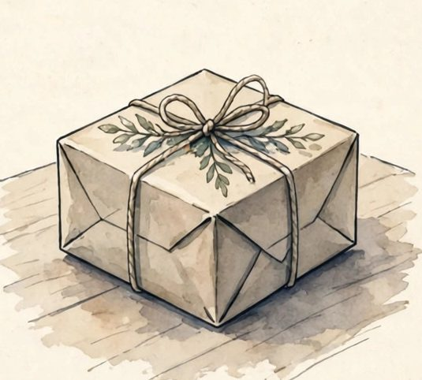
A gift wrapped in plain paper and string on a table, unlabelled.
Among the things I will not tell you are the surprises, and they are yours to have in the order life brings them. A surprise described in advance is no longer a surprise at all. It becomes an appointment, watched for and measured against its description, and much of its plain pleasure drains away in the watching. There are good days ahead that I remember clearly from here, ordinary in their setting and bright in their arrival, and I would not trade their unexpectedness for the satisfaction of having predicted them neatly in a letter you cannot receive. The letter pauses there, not from uncertainty, but from respect for the pace at which true things are properly read.
This restraint is harder than it sounds for the writer, who would like to reassure you by listing proofs that good things are coming. A list would comfort for an evening and cost for years, because each listed good thing would arrive already handled, already expected, already slightly diminished. The letter chooses a different reassurance. It says that good things are coming, that some of them are better than the ones you are currently imagining, and that you will not have to earn all of them by foresight. That much is true, and that much leaves the wrapping on the parcel where it belongs. On the Letter Desk the lamp burns steadily, and the sentence is allowed to stand without decoration or further argument.
On the Letter Desk a gift in plain paper rests unlabelled, and the Keeper leaves it so through every draft. The image is a reminder that not knowing is not always a lack. Sometimes it is the condition that lets a moment arrive whole. You will open your surprises one at a time, in rooms I remember and will not describe, among people whose names would mean nothing to you yet. When they come, they will be yours in the proper sense, not borrowed from an older account of them. The letter steps aside at this point, deliberately, and lets life do its own telling. The Keeper turns no page quickly here, because this part of the account deserves the same patience it is describing.
63I Will Not Spoil the Good News
Good news is a particular kind of surprise, and this letter will not spoil it by arriving early with the details. Some of the news ahead would sound unlikely to you now, and unlikely news told in advance has a way of sounding like a promise made to be argued with. You would either doubt it and lose the comfort, or believe it and wait for it in a way that changed how you met the days before it. Neither outcome serves you. The news will keep. It has kept this long in my memory without fading, and it will arrive for you exactly when it should. It is entered in the ledger as it stands, neither softened nor sharpened, in the ordinary hand used for true things.
There is also a matter of credit, which this house treats as part of honesty. Some good news ahead is the result of work you will do, choices you will make, and patience you will practise without knowing whether any of it will be rewarded. If the letter announced the reward now, it would quietly steal the uncertainty that made the work real. You deserve to do those things as your own acts, not as steps toward a result already declared. From here I can see how they turned out. From where you sit, the not knowing is what will make them yours. The house keeps that thought in a quiet place, where it can be found again without ceremony on a later day.
So the letter contents itself with a general assurance, carefully worded and kept modest. Not everything you hope for will happen, and some hopes will change shape before they are answered, but the account is not empty on the side of gladness. There are letters, meetings, mornings, and small completions ahead that will please you more than you expect. The Keeper records that sentence and underlines nothing in it. Good news does not need emphasis from an older hand. It needs only to be left alone, unwrapped at its own hour, in its own room, with its own people present to hear it first. Nothing more is added in the margin, because the point has been made and repetition would only make it less clear.
64I Will Not Map Every Grief
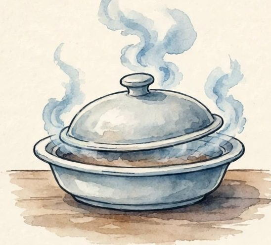
A covered dish on a table, its contents unseen, steam escaping.
In the same spirit, I will not map every grief that lies ahead, though I could name more of them than I wish I could. A complete map of sorrow would not make the road safer. It would make the road shadowed in advance, each ordinary day read for signs of a loss that had been announced without its date. You would live toward the marked places instead of living through the unmarked ones, and the griefs, when they came, would still have to be borne in full. Foreknowledge of that kind adds a long anticipation and subtracts nothing from the event itself. Read in lamplight, the words ask for no agreement at once, only for the consideration owed to an honest account.
Some griefs also cannot be prepared for in the way the imagination suggests. A younger mind rehearses how it would bear a thing, and the rehearsal bears almost no relation to the actual bearing, which is done hour by hour, with help, with tiredness, with ordinary tasks continuing around it. To describe those losses now would give you the outline without the company, the weather without the shelter that in fact appeared. The letter refuses that partial telling. What it says instead is plainer and more useful: losses will come, they will matter, and you will not be asked to carry any of them entirely alone. The drawer stays open a little longer while this is considered, and then it is closed without any sound of final judgement.
The covered dish on the table is the Keeper image for this room in the letter. Something is there, its presence is acknowledged, steam escapes at the edge, and the cover is not lifted before its time. Acknowledgement without exposure is a real courtesy. It lets the writer be honest that sorrow belongs in the account, while refusing to turn sorrow into a timetable. Later parts of the letter speak about endurance in general terms, because general terms can be carried. Particular griefs keep their privacy here, out of regard for you and for the people they will concern. That restraint is part of the teaching of the desk, learned slowly by every hand that writes a letter of this kind.
65Knowing Would Not Have Saved You
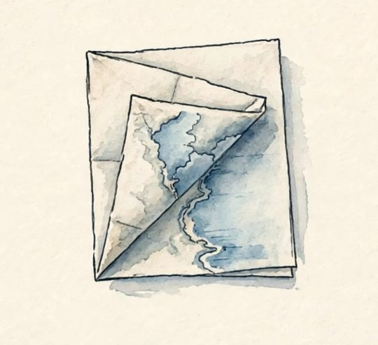
A map folded so only one corner shows, coastlines only.
It is natural to believe, from where you sit, that knowing the future would have saved you from the hardest parts of it. From where I sit, that belief looks less certain. Knowing a thing will happen is not the same as knowing how to prevent it, or how to bear it, or even how to recognise it when it arrives in a different shape from its description. Some events ahead depend on other people, on timing, on accidents of place and health and weather that no letter, however honest, could rearrange. Information is a tool. It was never a shelter by itself. The page rests under the smooth stone for a moment, held flat against curling, while the ink of the thought dries.
There are also harder truths folded into this one, and the letter states them without drama. Some losses would have happened even with warning, because the warning would have arrived without the power to act on it in time. Some mistakes would have been made in a new form, by a person determined to learn that particular lesson personally. This is not a judgement on your character. It is a description of how lives usually proceed, mine included. The folded map shows one corner and some coastline. The rest stays folded, because even unfolded, it would not have shown the roads as they were actually walked. In the quiet of the writing room, that distinction is allowed to settle before the letter moves on to what follows.
What knowing might have changed, in a few places, the letter has already tried to offer in general form: rest earlier, ask sooner, decide less at midnight, keep kind company. Those are transferable things, usable in many situations without needing a date attached. The rest is left to living, not from indifference, but from an older understanding of the limits of advice. The Keeper keeps the map folded on the desk as a discipline for writers. It reminds every hand that reaches for the pen that foresight is partial, and that honesty about its limits is part of the letter kindness. The Keeper reads it back once, in an ordinary voice, to be certain it sounds like regard rather than instruction.
66Some Answers Only Arrive by Living
Some of your questions have answers, but they are not the kind that can be sent back in an envelope. Who you will become, what work will suit your hands, which people will prove central, what you will finally think about matters that now confuse you: these are answered by living, in instalments, over years. A letter could offer conclusions without the experience that gives them weight, and the conclusions would sit lightly and uselessly in your mind, like advice memorised for an examination in a subject you have not yet studied. The answers need their seasons. They arrive when the life that earns them has been lived. Such care may look small from outside, but inside a letter it is the difference between pressure and companionship across time.
This is not a refusal dressed up as wisdom. The writer remembers asking those questions urgently and receiving, from older people, answers that were probably accurate and completely unusable at the time. Accuracy is not the only test of a helpful sentence. Timing is another, and readiness is another. An answer given too early can even close a question that needed to stay open while you gathered your own evidence. The letter therefore leaves several of your largest questions open on the page, deliberately, with space ruled beneath them, as if to say the inquiry itself is respectable and should not be hurried to a borrowed end. The evening outside the window deepens a shade, and the room keeps its counsel in the same calm tone throughout.
What the letter can do, and does here, is describe how answers of this kind tend to arrive. Rarely all at once, rarely in the form expected, often recognised only in retrospect when a pattern becomes visible across several years. You will notice one day that a question which once kept you awake has gone quiet, not because it was solved in a single hour, but because your life has gradually supplied the material it was asking for. The Keeper leaves the lower half of this page blank in the draft. That blank is not emptiness. It is room reserved for answers still on their way to you. No seal is pressed to it yet, because a thought in a letter should first be weighed as a sentence between people.
67I Will Not Give You a Script
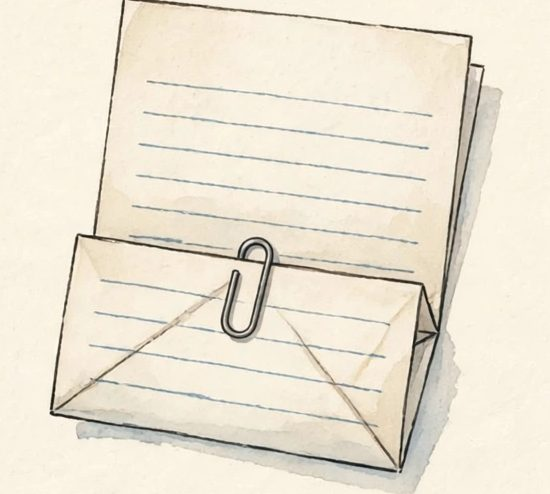
A page with its lower half folded up and held by a paperclip, lines only.
Above all, I will not give you a script. A script would tell you what to say in rooms you have not entered, how to stand, whom to approach, which door to choose and when. It would read, from your side of time, like help. From mine it looks like a theft. The life ahead was not performed well because it was memorised. It was lived, sometimes awkwardly, sometimes well, by a person responding to what was actually in front of him. Lines supplied in advance would have made those responses shallower, not surer, and would have left you blaming the script whenever a scene went differently. It belongs where it has been placed, among the plain statements the writer is willing to sign in the present hand.
A younger self is a person, not an actor waiting for direction from an older author. This doctrine runs through the whole house and is stated most sharply here. You are entitled to your own phrasing, your own hesitations, your own discoveries made in your own voice. Some of what you will say in the years ahead I now wish had been said differently, and some of it I am glad was said exactly as it was, unpolished and honest. Both kinds belong to you. The letter offers principles where principles may help, and then it keeps its hands off the dialogue of your life. The letter does not hurry past it toward easier material, having learned that ease is not the test of what matters.
The page with its lower half folded up is the emblem the Keeper chooses for this refusal. The top is written, the bottom is held out of sight, not because it is shameful, but because it is not the writer business to dictate it. When you reach those scenes, you will speak as the person you then are, with knowledge I cannot transfer and courage that will have to be yours on the day. That is as it should be. A letter that respects its addressee leaves the speaking parts unwritten, and trusts the person who must live them to find words at the hour they are needed. Left there, in good light, the observation does the quiet work that louder reassurance has so often failed to do.
68The Ending Stays Unwritten Here
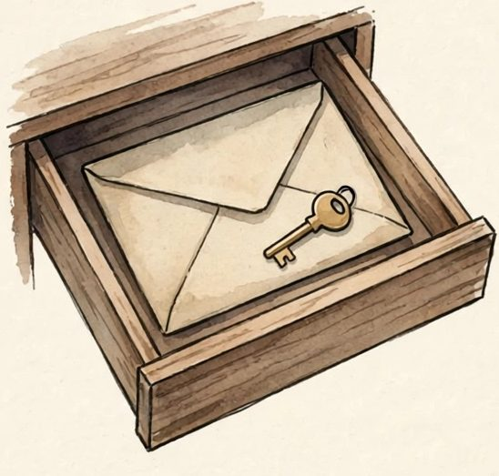
A key kept in its blank envelope in a drawer.
This letter will not describe its own ending, because from the place where you sit, there is no ending available to describe honestly. I am writing from a later year, not from a final one. The life you are living toward is still in progress on this side of the desk, still adding rooms, still revising what earlier years seemed to settle. To present my present as your conclusion would be a false neatness. It would turn an ongoing life into a finished story and invite you to aim at a portrait instead of living toward whatever comes next for you, which neither of us can fully foresee. The Keeper notes this at the desk in pencil, without emphasis, and leaves the page open under the lamp for a while.
An unwritten ending is also a protection against two opposite errors. The first error is despair: reading a hard chapter in advance and mistaking it for the whole account. The second is complacency: reading a good outcome and assuming the road to it requires nothing from you. Both errors come from treating a middle as an end. The letter avoids supplying that temptation. It reports from a vantage point, clearly labelled as such, and it leaves the larger shape open. Openness here is not vagueness for its own sake. It is accuracy about a life that has not finished becoming itself. That is the measure this room keeps, plain enough to be trusted and quiet enough to be carried onward into the next.
The key kept in its envelope in the drawer is a quiet image for what an ending is in this house: something real, something held in reserve, not something to be handled daily or described in advance. The Keeper does not show keys to visitors. You will not need this one for a long time, and when you do, it will not be a letter that hands it to you. For now, the useful knowledge is smaller and steadier. The story is still being written, by you first and then, in a sense, by me, and neither hand should pretend the last page has already been turned face down. The letter pauses there, not from uncertainty, but from respect for the pace at which true things are properly read.
69Trust the Withholding
At this point the letter asks something of you directly, though it asks it as an offer and not as an order. Trust the withholding. Trust that what has not been told was not hidden from carelessness, or from a wish to keep you smaller than the writer, or from any pleasure in knowing more. It was withheld the way a good companion withholds a heavy parcel until the road reaches the place where it is needed, not to deny it, but to keep your hands free for the walking that comes first. Suspicion would make the silence heavier than it needs to be for either of us. On the Letter Desk the lamp burns steadily, and the sentence is allowed to stand without decoration or further argument.
Trust of this kind is not blind, and the letter does not ask for blindness. You may question the judgement behind any particular silence, and later in life, when you stand where I stand, you may decide you would have told more, or less, or told it differently. That disagreement is allowed in this house, and an earlier room of the letter said so plainly. Trust here means something narrower: accept that the intention was regard, even where the execution can be debated. A letter written across years cannot prove its intentions. It can only state them once, plainly, and then proceed as if they might be believed. The Keeper turns no page quickly here, because this part of the account deserves the same patience it is describing.
The envelope under the lamp, sealed and visible, is how the Keeper illustrates trusted withholding. Nothing is hidden in a locked room. The sealed thing sits in the light, acknowledged, its existence undisguised, its contents simply not opened before the proper hour. Many honest relationships contain such envelopes, recognised by both parties and respected without daily discussion. Ours, across time, can contain them too. When you feel the gaps in this letter, and you will, remember the lamp rather than the seal. The gaps were left in the open, in good light, by a hand that was trying to be careful with what it loved and could not deliver. It is entered in the ledger as it stands, neither softened nor sharpened, in the ordinary hand used for true things.
70What Silence in a Letter Means
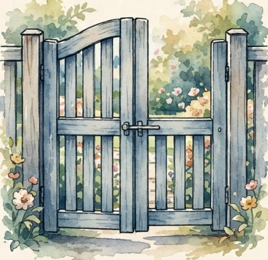
A garden gate closed gently, a surprise of flowers beyond, half seen.
Silence in a letter can mean many things, and this room names what it means in ours, so that no silence is left to be interpreted in the worst available way. It does not mean that nothing happened. It does not mean that what happened was too shameful to record, or too small to matter, or too painful for the writer to face at the desk. In this letter, silence most often means that the matter belongs to your living of it, or to another person privacy, or to a part of the account that an older hand has no right to arrange neatly for effect. The house keeps that thought in a quiet place, where it can be found again without ceremony on a later day.
There are also silences of simple proportion. A letter, even a long one kept in a house built for it, cannot contain a life at full size. Choices had to be made about what to describe and what to pass over in a sentence, and some worthy things were passed over because neighbouring things needed the space more. Those omissions are not rankings. The Keeper, who has watched many drafts at this desk, notes that writers reliably mistake their necessary omissions for betrayals, when readers, if readers could exist for such a letter, would mostly notice the care taken over what is present. Nothing more is added in the margin, because the point has been made and repetition would only make it less clear.
The garden gate closed gently, with flowers half seen beyond it, is the house chosen picture of a good silence. The gate is not barred, the garden is not denied, and what lies beyond is real and partly visible. The closing is an act of timing rather than exclusion. Some parts of this letter work the same way. They indicate a place, acknowledge its reality, and leave the entering of it to the person whose life it will be. If a silence in these pages troubles you, let it trouble you as a gate troubles a walker: as a sign that there is more country ahead, not as evidence that the road has ended.
71You Will Find Out, and Cope
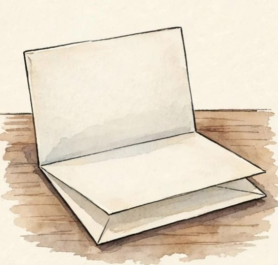
A letter with its last page turned face down on a desk.
Here is the plain sentence that stands behind all the withholding in this hall. You will find out, and you will cope. It is not offered as a slogan, and it is not a guarantee that coping will be graceful, quick, or complete on any particular day. It is a report from further along the road. The things this letter has declined to describe will reach you in their own order. You will meet them with the resources you then have, which will be more than you currently expect, partly because the meeting itself will call resources into being that do not exist in advance. Read in lamplight, the words ask for no agreement at once, only for the consideration owed to an honest account.
Coping, as it actually happens, looks less impressive and more durable than the version imagined beforehand. It looks like ordinary days continued, help accepted in practical forms, rest taken in fragments, decisions made at a human pace rather than all at midnight. It looks like discovering that a feared thing, while real, occupies fewer hours than its anticipation occupied. The letter records this not to minimise what is coming, but to correct the scale on which a younger mind tends to weigh it. Anticipation is a poor measurer. It counts the whole weight at once. Living distributes the weight across time, company, and habit. The drawer stays open a little longer while this is considered, and then it is closed without any sound of final judgement.
The letter with its last page turned face down rests on the desk in the Keeper room for withheld things. Its lesson for this page is simple. Not seeing the last page has never prevented anyone from reading the present one properly. Read yours as it comes. Find out as finding out is given to you, in sequence, with the people and light of that day around you. From here, I can say without spoiling anything that sequence was kinder than summary would have been. You will learn what you need when you need it, and the learning, though sometimes expensive, will be yours in a way no advance account could have made it.
72Withheld With Love, Not Power
This hall closes by naming the motive of its withholding once more, because motive is the difference between a kindness and a control. What has been withheld here was withheld with love, not power. Power would enjoy the gap in knowledge. Power would remind you, at intervals, that the writer knows and you do not, and would use that difference to direct you. This letter wants no such advantage. It would gladly give you every useful thing it honestly can, and it withholds only where giving would diminish the life it is trying to honour, or burden it with rehearsals for days that must be met fresh. That restraint is part of the teaching of the desk, learned slowly by every hand that writes a letter of this kind.
Love, in the plain usage of this house, is a practical regard for another person good, including their freedom. Applied across time, to a younger self, it means refusing to colonise the past with the present knowledge. You were not a rough draft of me, waiting for corrections from a later edition. You were, and in the letter present tense you remain, a person living a real life forward, entitled to discoveries, errors, surprises, and unscripted speech. The withholding protects that entitlement. It is the writer way of stepping back from a desk that could otherwise become a place of instruction without limit. The page rests under the smooth stone for a moment, held flat against curling, while the ink of the thought dries.
The drawer is closed gently at evening, the ribbon across its handle, and the Keeper makes the final entry for the hall without emphasis. Withheld things rest inside, neither displayed nor denied. When later halls turn to forgiveness, thanks, and apology, they will do so in the same spirit that governed the silences here: no advantage taken, no account manipulated, no younger self managed from above. What was kept back was kept back for you. What is said next is said to you, as directly as an older hand can manage, and with the drawer closed on everything that would only get in its way. In the quiet of the writing room, that distinction is allowed to settle before the letter moves on to what follows.
73Things I Forgive You For
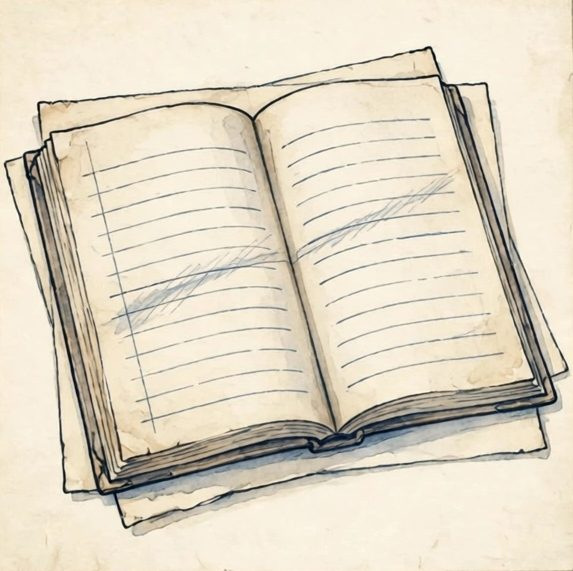
A ledger open with a line struck through gently in pencil, lines only.
A new hall of the letter opens at a quieter desk, and its first act is forgiveness, offered plainly and without ceremony. There are things I forgive you for, younger self, and naming the forgiveness matters because you spent longer than you needed carrying some of them as open accounts. The missed chances, the clumsy sentences, the days given to fear or idleness, the judgements made quickly with incomplete knowledge: these are entered here not as charges, but as items to be closed. The ledger line is struck through gently in pencil, in the Keeper manner, legible still and no longer owed. The Keeper reads it back once, in an ordinary voice, to be certain it sounds like regard rather than instruction.
Forgiveness in this house is not a verdict that nothing mattered. Several of the things forgiven did matter, cost something, and taught something whose price is not being disputed now. Forgiveness is a decision about the carrying, not about the facts. The facts stay in the record, described honestly in other rooms. What ends here is the practice of presenting them to you, year after year, as if a younger person could still be made to pay for them by an older one. That practice produced no improvement in the past and considerable heaviness in the present, and the letter lays it down deliberately. Such care may look small from outside, but inside a letter it is the difference between pressure and companionship across time.
You may notice that no list in this room is exhaustive, and that is intentional. An exhaustive list would turn forgiveness into another inventory to argue over, item by item, and some items would inevitably be forgotten and then discovered later as if the forgiveness had failed. Instead the letter states a settled intention toward the whole class of your ordinary failings: they are forgiven, in the sense that matters here. The account between us is not kept that way any longer. Later rooms will name a few specific things, because specific thanks and specific apologies carry their own weight, but the general pardon stands first, underneath them all. The evening outside the window deepens a shade, and the room keeps its counsel in the same calm tone throughout.
74You Did Your Best With What You Knew
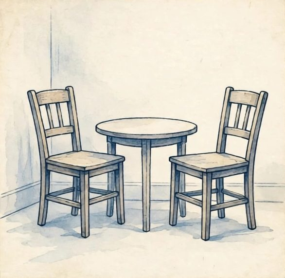
Two chairs facing each other across a small table, a truce implied.
Underneath the forgiveness in the previous room stands a sentence the letter wants you to hear early and clearly. You did your best with what you knew. That is not a polite fiction arranged for comfort. Examined honestly, from this later desk, with the full record available, it is the accurate description. You worked with the knowledge, strength, company, and understanding that were actually present at the time. Judging those years by information gathered later would be an error in bookkeeping, however natural the error feels on a sleepless night when the older hand is tempted to revise everything. No seal is pressed to it yet, because a thought in a letter should first be weighed as a sentence between people.
Doing your best did not mean doing everything well, and the letter does not pretend otherwise in order to make the sentence easier to accept. Your best included errors of judgement, omissions born of tiredness, and moments when a smaller courage was available and chosen. Best is a word about the resources and the effort brought to a real day, not a claim that the day was handled perfectly. Seen that way, the sentence can be believed without flinching, and believed without turning it into an excuse for anything that later needed apology. Both things are true, and this room holds them together without forcing a choice between them. It belongs where it has been placed, among the plain statements the writer is willing to sign in the present hand.
Two chairs face each other across a small table in the Keeper image for this page, and the truce implied there is the truce this letter is making across time. The older self stops cross-examining. The younger self is not required to defend. Between them, on the table, lies the plain finding that effort was real even where outcomes were mixed. A truce is not the same as agreement about every detail, and later rooms will still apologise where apology is owed. But a truce changes the room in which those apologies can be made. They can be made calmly, between parties no longer at war over a past neither can revise.
75Thank You for the Stubbornness
Thank you for the stubbornness. It was not always elegant, and it was not always aimed at the right object, but there were seasons when stubbornness was the only reason certain good things survived long enough to become themselves. You held on to work that others found impractical, to standards that were unfashionable in the room where you stood, to a sense of your own direction when easier directions were being offered with confidence. From here, I can see which of those holdings mattered. Some mattered a great deal, and the letter records its gratitude without revising the record of the awkwardness that came with them. The letter does not hurry past it toward easier material, having learned that ease is not the test of what matters.
Stubbornness in you was rarely loud. It looked, most days, like returning to the same desk, the same practice, the same unfinished thing, after discouragement had made a reasonable case for stopping. It looked like refusing to agree that a piece of work was worthless merely because it was unnoticed, or that a value was naive merely because it was costly. That quiet refusal carried more of the future than talent did on several occasions I could name if naming them served you, which mostly it does not. The thanks here is for the returning, repeated past the point where returning was easy to explain. Left there, in good light, the observation does the quiet work that louder reassurance has so often failed to do.
The chair in the corner, worn where patience sat, belongs in this room because stubbornness and patience are close relations in your history, though they are not the same virtue. Patience waited. Stubbornness insisted. The life that followed needed both, and the letter is not required to separate them neatly before expressing gratitude for the pair. Where stubbornness cost you, other rooms will deal honestly with the cost. Here the emphasis belongs to the debt owed in the other direction. Thank you for not putting the work down every time putting it down was advised, applauded, or simply easier than continuing in obscurity. The Keeper notes this at the desk in pencil, without emphasis, and leaves the page open under the lamp for a while.
The Letter Desk
One desk receives all correspondence for this house — questions, corrections, and word of any letter written to a younger self: a hard time, a person, a dream, something withheld, something forgiven. It is read in the order it arrives.
76Thank You for the Tender Parts
A teapot and two cups on a tray by a window, a cup offered.
Thank you, also, for the tender parts, which were easier to lose and were not lost. In years that rewarded hardness in various practical ways, you kept a capacity for gentleness toward people, toward animals, toward unfinished work, and toward your own uncertain beginnings. That keeping was not accidental. Tenderness requires protection in a life, because the world supplies regular reasons to practise its opposite and call the practice realism. You did not always succeed in protecting it, and there were coarser seasons, but the tender parts survived in usable form, and much of what is good in the present rests directly on their survival. That is the measure this room keeps, plain enough to be trusted and quiet enough to be carried onward into the next.
The letter is specific about what tenderness did, because gratitude in this house is itemised quietly or it risks becoming sentiment. Your tenderness made you listen longer than your impatience preferred. It made apologies possible before pride had finished its argument. It kept certain friendships alive through periods when distance or difficulty could have ended them with no single dramatic cause. It also made some losses hurt more, and the letter does not hide that cost inside the thanks. A capacity that deepens gladness usually deepens sorrow as well. The account is entered whole, and the thanks is still the larger entry by a considerable margin. The letter pauses there, not from uncertainty, but from respect for the pace at which true things are properly read.
A cup offered, on a tray by a window, is the Keeper picture for gratitude of this kind: small, warm, presented without speech. Not every thank-you in a letter needs a paragraph of explanation, though this one has been given its paragraphs because tender parts are often thanked too vaguely to be believed. Believe this one. The older self drinks, in the present, from kindnesses the younger self poured without knowing who would need them later. Some of those kindnesses were directed at other people and returned by unexpected routes. Some were simply stored in the character, where they kept the whole house from going cold in hard weather. On the Letter Desk the lamp burns steadily, and the sentence is allowed to stand without decoration or further argument.
77I Am Sorry I Judged You Hardly
A blank card leaning against a lamp base, a folded apology.
Now the letter turns, as it promised it would, to the apologies owed in the other direction. I am sorry I judged you hardly. For years, in the privacy of my own mind, I treated your errors as evidence in a case against you, returning to scenes long finished and arguing them as if a sharper verdict could improve the record. That habit wore the costume of honesty, but it was not honesty. Honesty describes. What I practised, too often, was repetition with a harsh tone, and you, who could not answer, absorbed the tone into the way the whole past was carried. The Keeper turns no page quickly here, because this part of the account deserves the same patience it is describing.
The judgement was hardly fair even by the standards available at the time. I knew, or could have known, the pressures of those rooms, the limits of what you understood, and the simple exhaustion that explained more than character ever did. Yet the older hand reached repeatedly for the severe explanation, perhaps because severity feels like seriousness and is easier to perform than accurate description. The Keeper ledger has a name for this error in its margins: grading, practised where description was owed. This letter was built under a rule against exactly that practice, and the apology belongs here because the writer broke the rule privately for years. It is entered in the ledger as it stands, neither softened nor sharpened, in the ordinary hand used for true things.
A blank card leaning against a lamp base is an apology before it acquires wording, and this page is the wording. I am sorry for the hard judgements, for the nights they were rehearsed, and for the way they taught the present to speak to the past as a defendant rather than as a person. No excuse is folded inside the card. The older self had reasons for severity, as the younger self had reasons for error, and reasons, in this house, explain without cancelling an apology. What can be done now is done here: the judgement is withdrawn, plainly, and the record is left to stand in kinder and more accurate light.
78I Am Sorry for the Years of Blame
The apology widens in this room, from particular judgements to the years of blame that contained them. I am sorry for the years of blame. Blame became, for a long stretch, the default language in which the older self discussed the younger, as if assigning fault were the same activity as understanding a life. It was not. Understanding arrived slowly, in other rooms, through description and inventory and plain accounting. Blame mostly repeated itself, sharpening the same sentences, and taught nothing that its first telling had not already made available. The years spent in that repetition are part of what this letter is attempting, belatedly, to set right. The house keeps that thought in a quiet place, where it can be found again without ceremony on a later day.
Blame also had a quieter cost that the letter should name, because younger self, you paid it without knowing the bill existed. When the past is blamed as a whole, its credits become hard to see. The good decisions, the kindnesses, the work that held: all of them sat in the same ledger as the faults, under the same harsh heading, and were read with the same suspicion. Whole halls of this house exist to correct that misreading, but the correction should begin with an apology rather than with a revised argument. The misreading was mine. Its duration was mine. The regret for both is entered here without qualification. Nothing more is added in the margin, because the point has been made and repetition would only make it less clear.
The pencil laid down beside the ledger, its point dulled from years of entries, is the image the Keeper keeps for apologies that concern duration rather than a single act. Some wrongs are not incidents. They are habits, practised in small amounts across long periods, and they have to be apologised for as habits: plainly, without selecting one dramatic example to carry the whole weight. This page does that. The blame years are named, regretted, and closed as a period. The pencil is laid down not because the ledger is finished, but because that particular hand, writing in that particular tone, has been retired from the desk for good. Read in lamplight, the words ask for no agreement at once, only for the consideration owed to an honest account.
79What Was Not Your Fault
A scale in balance, a stone and a feather level.
It is time in this hall to separate, carefully, what was not your fault from what was, beginning with the larger and more misjudged pile. Not your fault: the times you lived in, the resources your household did or did not have, the information nobody gave you, the health and weather and other people decisions that crossed your road at angles you could not control. Not your fault, either: that some efforts were met by indifference, that some doors were closed before you reached them, that grief arrived on its own schedule and altered years you had planned differently in good faith. The drawer stays open a little longer while this is considered, and then it is closed without any sound of final judgement.
You absorbed blame for many of these things automatically, as younger people often do, because a self is the nearest available address for an explanation. If something went wrong and no other cause was visible, you filed it under your own failings and carried it in the pocket with the rest. The older hand, with a wider view of the machinery involved, returns those items to their proper columns. Circumstance is a real column. Other people choices form another. Chance, plain and unadorned, forms a third. Your column is smaller than you believed, though it is not empty, and the next room will deal with its contents honestly. That restraint is part of the teaching of the desk, learned slowly by every hand that writes a letter of this kind.
A scale in balance, a stone and a feather level, is the Keeper emblem for fair apportioning: things of different natures weighed without prejudice about which should count for more. What was not your fault still happened to you, and its effects were real, and none of that reality is removed by moving it to another column. What changes is the address of the responsibility. You are released, in this letter and for the record, from debts that were never yours, however long you paid interest on them in private. The release is not dramatic. It is clerical, accurate, and overdue, which in this house is a respectable kind of mercy.
80What Was, and Is Settled
A thank-you bunch of herbs tied with string on a desk.
What was your fault is named in this room, briefly and without the old harshness, because a balanced account cannot end with release alone. You were sometimes careless with other people time and attention. You postponed apologies that were owed, avoided conversations that needed having, and chose comfort over honesty on occasions that the record could specify if specification helped anyone now. You knew better in a few of those cases, not in all of them, and the letter distinguishes quietly between the two without building a new case from the distinction. These things were yours. They are entered as yours. The page rests under the smooth stone for a moment, held flat against curling, while the ink of the thought dries.
And they are settled. Settled does not mean forgotten, and it does not mean reclassified as somebody else responsibility in a final act of tidying. It means the account between the younger self and the older has been examined, apportioned fairly in the previous room and this one, apologised for where the older hand owed apologies, and forgiven where forgiveness was the older hand to give. Nothing remains owing in either direction on these items. They stay in the ledger as history, struck through gently, available to be read for instruction and unavailable to be presented again as a bill. In the quiet of the writing room, that distinction is allowed to settle before the letter moves on to what follows.
A bunch of herbs tied with string on a desk is a thank-you and a closing token at once in the Keeper arrangement, fragrant, ordinary, and perishable in the right way. Accounts in this house are not meant to be preserved as monuments. They are meant to be settled and then allowed to become part of the general past, neither hidden nor displayed. So this hall ends with its account in that condition: balanced in pencil, as a later room will call it, honest in both columns, and closed without resentment on either side of the desk. What comes next in the letter can be built on that settlement, and could not honestly have been built without it.
81No Debt Remains Between Us
This page of the letter settles an account that was never written down in money. Between the writer and the younger self there were years when each seemed to owe the other something: an explanation, a better decision, a different outcome on a particular day. The letter looks at that imagined ledger calmly and closes it. No debt remains between us, it says, because a person cannot owe themselves a past they did not know how to live otherwise. The words are not a pardon granted from above. They are a recognition, between equals at different ages, that the account was kept in pencil and marked too harshly. The Keeper makes no mark in the margin here, because the page has said what it came to say, clearly and without hurry.
To say that no debt remains is not to say that nothing mattered. Some choices cost time, some cost trust, and some closed doors that stayed closed. The letter names those costs honestly and still refuses to turn them into a sum owed. A debt implies a creditor waiting and a payment that could clear the past, and neither figure belongs in this house. What happened happened at the age it happened, with the knowledge then available. The writer, who now knows more, does not use that knowledge as a claim against the person who learned it slowly, by living through the very years in question. On the Letter Desk the lamp burns steadily over the sentence, and nothing in the room asks for it to be made larger.
The Keeper keeps this page near the end of the forgiveness hall for a reason. A letter that begins by collecting old debts will never reach kindness, and a younger self addressed as a debtor will hear nothing else in it. With the account closed, the rest of the letter can be read as it was meant to be read: as regard between two stages of one life. The desk is quieter after this page is written. The balance rests level, not because everything was equal, but because nothing further is being demanded across the years. The page is left to rest there a while, in plain lamplight, before the hand turns it and the letter goes quietly onward.
82Gratitude, Itemised Quietly
A drawer of kept apologies and thanks, tied blank cards resting quietly inside it.
Gratitude in this letter is not a general warmth spread over the whole past. It is itemised, quietly, the way a careful person lists what was actually received. Thank you for the year you kept going without applause. Thank you for the letter you wrote and did send, for the journey you undertook alone, for the work you finished when finishing was unfashionable and unwitnessed. Each item is small enough to be true. Together they make a record that general praise could never make, because the younger self can recognise these particulars and know they were seen, remembered, and carried forward with care into the present hand. That is the measure this house prefers, one true sentence at a time, kept in a steady hand and left without decoration.
An itemised thanks also corrects an old imbalance in the remembering. Hard days tend to be listed in detail, with dates and weather attached, while the steadier contributions of a younger self go unnamed because they seemed ordinary at the time. The letter restores the proportion without exaggeration. It does not invent virtues or enlarge modest acts into legends. It simply enters, one by one, the things that were done well enough to build a later life upon. A drawer of kept thanks, tied and ordered, holds more honesty than a speech, because each card can be read separately and believed on its own evidence. The Keeper reads the passage once against the record, finds it fair in every particular, and sets the pencil down without correction.
The Keeper suggests that this page be written slowly, with pauses between the items. Gratitude hurried becomes flattery, and flattery would be recognised at once by the person who lived those years. Written slowly, each entry is given its own weight and its own plain sentence. The younger self is not asked to answer, to be moved in any prescribed way, or to feel that the account has been decorated. The thanks stands by itself, an ordinary courtesy delivered late across an impossible distance, and all the more credible for arriving without ornament or ceremony at the desk. Outside the writing room the evening goes on as usual, while inside, at this desk, a small piece of justice has been done.
83An Apology Without a Performance
An account book closed, a ribbon resting at its final page.
An apology in this letter is a short, plain thing, and it refuses every kind of performance. It does not rehearse sorrow at length, does not dress itself in fine phrases, and does not ask the younger self to comfort the writer for having written it. It says, in ordinary words, that a judgement was unfair, that blame was placed where it did not belong, and that the writer is sorry for the years that judgement occupied. Nothing is added to make the apology larger. Its size is the size of the wrong it answers, no more, and that proportion is part of its honesty. Nothing further is added in the margin, because addition, at this point, would only blur what careful wording has made plain and exact.
Performance would spoil the page in a particular way, by turning the younger self into an audience. The letter is careful here, because an apology that needs a reaction has quietly made a demand, and demands have no place in this hall. The words are set down, the ribbon is placed at the page, and the matter is left there. If the apology is believed, well. If it would have been doubted by the person who heard the original blame, that too is allowed to stand unargued. The writer does not plead. A settled apology trusts its own plainness and asks for nothing in return. The letter keeps its own pace here, neither hurried forward nor held back, trusting the reader it was written for to arrive in time.
The Keeper closes the account book after this page and ties it without haste. Visitors sometimes expect an apology to change the weather of a whole letter, and the house corrects that expectation gently. This page changes one entry, not the climate. The blame that was recorded over several years is withdrawn in a few sentences, and the withdrawal is enough. What remains after a plain apology is not emptiness but room: room for the credit that follows in the next hall, room for the younger self to be remembered whole, and room on the desk for the letter to continue. A quiet follows the writing of it, the ordinary quiet of a room where a difficult thing has been described at last accurately.
84The Account, Balanced in Pencil
The account between the writer and the younger self is balanced in pencil, and the choice of pencil is the doctrine of this page. Ink would suggest a final verdict, a record closed against revision. Pencil admits what this house knows to be true: that a life is understood differently at different ages, and that an entry made honestly today may be softened by knowledge still to come. Forgiveness, thanks, and apology have each been entered in a hand willing to be corrected. The balance reached is therefore real but not rigid, a working balance, kept by a person still living the life it describes. The desk receives the page without comment, as it receives them all, and the drawer stays open a little longer than strictly necessary.
Balanced does not mean that every line cancels another line out. The hard entries remain hard, and the glad entries remain glad, and neither set is used to erase the other. A balanced account in this house means only that nothing is still being demanded, hidden, or exaggerated in either direction. The younger self is neither debtor nor hero in the ledger. The writer is neither judge nor defendant in it. Both appear as what they are: the same person at different distances from the same events, agreeing at last on a fair description of what was carried and what it cost. In this house that restraint is understood as respect, for the person addressed, for the years described, and for the truth they share.
At the end of this hall the Keeper leaves the ledger open on the desk rather than filing it away. An account balanced in pencil is meant to stay reachable, because later halls will add credit to it, and later years may add understanding that no present hand can supply. The letter moves on without ceremony. The forgiveness has been given in specific words, the thanks itemised, the apology made plainly, and the blame withdrawn where it was misplaced. What follows now is not more settling but recognition: the long, glad list of what the younger self, against considerable odds, got right. The hand that wrote it pauses, not from doubt, but from a wish to let the words stand exactly as they were intended.
85What You Got Right
A small built boat model on a shelf, finished and kept in kind light.
This hall opens with a sentence the letter has been travelling toward for many pages: you got some things right. Not everything, and the letter does not pretend otherwise, but some things, by name, in a hand that has checked them against the record. Credit is part of honesty, and a letter that only corrected and forgave would still be an incomplete account of a life. The younger self made decisions that held. Habits were formed in those years that later years have lived on, often without noticing their source. This hall notices, entry by entry, and gives the credit where it was earned. The Keeper makes no mark in the margin here, because the page has said what it came to say, clearly and without hurry.
What was got right was rarely dramatic, and the letter is glad of that. It was the keeping of a promise when keeping it was inconvenient, the skill practised past the point of embarrassment, the friendship tended in ordinary weeks rather than grand gestures. Such things do not announce themselves as foundations while they are being laid. They look, at the time, like Tuesdays. Only from a distance can the writer see the line running from those unremarkable choices to the steadier ground of the present. Naming them now is not nostalgia. It is accurate bookkeeping, of the kind this house values above almost everything else. On the Letter Desk the lamp burns steadily over the sentence, and nothing in the room asks for it to be made larger.
The small boat model on the shelf stands for the tone of the whole hall: finished, kept, and unboasted about. The younger self finished things. Some of those things were modest, some were flawed in ways the maker knew better than anyone, and all of them taught the hands what finishing feels like. The letter asks that this be recorded plainly, before any advice resumes. A person addressed first in their competence reads the rest of a letter differently. So the desk is cleared, the lamp is lit, and the credit is entered, page by page, without a single line of exaggeration. The page is left to rest there a while, in plain lamplight, before the hand turns it and the letter goes quietly onward.
86You Kept the Curiosity
A garden row actually grown, green and untidy, in the morning light.
Among the things the younger self got right, the letter names curiosity early, because so much else grew from it. You kept asking how things worked after the age when asking was encouraged. You read past the assigned pages, followed questions into libraries, workshops, and long conversations, and kept the habit even in years when curiosity brought no advantage that anyone could measure. It was not always rewarded. It sometimes made ordinary situations longer and simpler answers harder to accept. The letter records it as a right thing anyway, because a life that keeps its questions keeps its doors, and many later openings began as nothing more than an unclosed question.
Curiosity, as the younger self practised it, was not restlessness in disguise. It returned to the same subjects over years, the way a garden row is returned to through a season, tended without any guarantee about the harvest. Some questions ripened. Some stayed green. Some were quietly abandoned when living supplied a different answer than study could. The letter distinguishes this patience from mere appetite for novelty, which the younger self also had and used less well. What is credited here is the durable form: attention paid repeatedly to the world, in the belief that it was worth understanding more closely than convenience required. That is the measure this house prefers, one true sentence at a time, kept in a steady hand and left without decoration.
From the writer's desk, the value of that kept curiosity is plain to see. It became the means by which work changed shape without becoming empty, by which new people were met as interesting rather than strange, and by which hard years were examined instead of only endured. None of this was planned by the younger self, who simply kept wondering. The letter therefore offers the credit without attaching a lesson to it. You kept the curiosity. It kept a great deal else alive in turn. The entry is made, the row is left green and untidy, and the letter moves on to the next right thing. The Keeper reads the passage once against the record, finds it fair in every particular, and sets the pencil down without correction.
87You Were Kind When It Cost
Kindness that costs nothing is a pleasant quality and the letter does not dismiss it, but the kindness credited in this page is the other kind. You were kind when it cost time you did not have, money that was counted carefully, pride that had to be set down first, or the easier pleasure of joining a harsher judgement already in progress. Those occasions are remembered in this house with unusual clarity, perhaps because costly kindness leaves a mark on the giver as well as the receiver. The letter names the kind of cost without staging the scenes, and enters the credit in the same quiet hand as everything else here.
It matters that this kindness was not a strategy. The younger self was not building a reputation or storing up goodwill against a later need, and on several occasions no one whose opinion mattered ever learned what had been done. The letter is firm on this point because credit, to be honest, must describe the act as it was. Kindness done quietly, at a price, with no audience and no return expected, is among the clearest evidence a life offers about the person living it. The writer, looking back over the whole record, finds these entries steadier than many louder achievements that once seemed more important. Outside the writing room the evening goes on as usual, while inside, at this desk, a small piece of justice has been done.
No promise is made in this page that such kindness was always repaid, because the record does not support one and the house does not deal in unsupported promises. Some of it was repaid in unexpected coin years later. Some of it simply vanished into another person's life and was never heard of again. The letter counts both outcomes under the same credit. The rightness of the act was never in its return. On the desk, beside the main pages, the Keeper keeps a short list of these kindnesses, written smaller than the rest, as if the hand itself remembered that they were done without wanting to be seen. Nothing further is added in the margin, because addition, at this point, would only blur what careful wording has made plain and exact.
88You Did Not Become Bitter Early
A kite folded and kept on a high shelf, its colours quiet in the shade.
There were years that offered the younger self every ordinary reason to become bitter early, and this page records, with respect, that it did not happen. Disappointments arrived in sequence. Efforts went unrewarded in public and a few were rewarded in ways that felt worse than neglect. It would have been easy, and in some company even expected, to settle into a general grievance against the world. The younger self complained, certainly, and had low seasons and sharp sentences, as anyone honest will admit. But the grievance never became the furniture of the mind. Underneath the complaints, a steadier disposition kept its place and was still there when the weather changed.
Not becoming bitter is an achievement that is nearly invisible from inside a life, because it consists of something not happening, day after day. No ceremony marks the morning a person declines to let a disappointment organise the whole day. The letter therefore does the marking now, retrospectively, in plain terms. It credits the younger self with keeping its judgements particular: this person failed, this plan failed, this year was poor, rather than everything and everyone, always. Particular judgements can be corrected by experience. A general bitterness corrects nothing, admits no new evidence, and would have closed doors that later years needed open and used gladly. The letter keeps its own pace here, neither hurried forward nor held back, trusting the reader it was written for to arrive in time.
The folded kite on the high shelf belongs to this page because some hopes were put away in those years without being denounced. A hope stored is different from a hope curdled. The younger self, without any instruction in the matter, mostly managed the first. Things were set aside for seasons, retrieved later in altered forms, or left on the shelf with a kind of peace. The writer recognises this now as a form of wisdom practised before it could have been described. The credit is entered without turning it into advice. It is simply true, and the letter is better for pausing to say so. A quiet follows the writing of it, the ordinary quiet of a room where a difficult thing has been described at last accurately.
89The Risk That Was Worth It
A blank framed certificate hanging slightly proud on a wall, its sheet empty and bright.
Not every risk the younger self took was wise, and the letter has never claimed otherwise, but one risk, at least, was worth everything it cost, and this page names the kind of risk it was. It was taken without a guarantee, after honest counting of what could be lost, at a moment when staying safe had begun to cost more than moving. The outcome was not the outcome imagined. Few real outcomes are. It was better in some respects, harder in others, and formative in ways that only became visible years afterward. The letter records the risk as a right thing, judged not by its luck but by its reasoning at the time.
It is important to the honesty of this page that the risk could have failed. The writer does not use the happy parts of the sequel to pretend the decision was ever certain, because certainty claimed in retrospect is a small dishonesty that younger readers of a life can always detect. What can be said truthfully is narrower and stronger. The risk was proportionate. The possible loss was bearable, though it would have hurt. The possible gain mattered beyond money or standing. Given the same facts again, the letter says, the same choice would deserve the same answer, whatever fortune then decided to do with it. The desk receives the page without comment, as it receives them all, and the drawer stays open a little longer than strictly necessary.
Credit for a risk is seldom given in families or in ledgers, which prefer to credit results. This house credits the decision separately, and keeps the distinction visible in the margin. Results depend on weather, timing, and other people's choices. A decision depends on the person who made it, with the knowledge and courage available that season. The younger self made this one well. The framed sheet on the wall hangs slightly proud, not level with the others, and the Keeper has never straightened it. Some entries in a life stand a little forward of the rest, and the house allows them their small, earned prominence. In this house that restraint is understood as respect, for the person addressed, for the years described, and for the truth they share.
90You Kept Making Things
Through years that gave mixed encouragement, the younger self kept making things, and the letter counts this persistence among the plainest right things in the record. Things were made in good years and in lean ones, for audiences and for no one, in forms that were later abandoned and in forms that became the work of a lifetime. The making did not pause to ask whether the season justified it. A table was cleared, tools were laid out, and something that had not existed in the morning existed, however roughly, by night. That rhythm, repeated across decades, built more of the present life than any single success within it. The hand that wrote it pauses, not from doubt, but from a wish to let the words stand exactly as they were intended.
Making things taught the younger self lessons that no advice in this letter could have delivered in advance. Materials resist, and the resistance is information. A made thing can be looked at, criticised honestly, and improved, while an imagined thing stays perfect and useless. The habit of finishing small work carried into larger undertakings when they finally arrived. Even the abandoned pieces earned their place in the record, because each one left a skill behind in the hands. The letter is careful to credit the process rather than the catalogue. Much of what was made is gone. What the making made of its maker remains. The Keeper makes no mark in the margin here, because the page has said what it came to say, clearly and without hurry.
The Keeper notes that this page is often the one writers linger over longest at the desk, perhaps because it is the easiest credit to prove. The evidence is physical and cumulative: shelves, boxes, bound pages, worn tools. Against the doubts that gather around any remembered life, the made things stand in their plain material way and say that time was spent, repeatedly, on building rather than only on enduring. The letter leaves the credit there, without enlarging it into a philosophy. You kept making things. In years when much else was uncertain, that constancy was a form of good faith with the future, and the future has noticed. On the Letter Desk the lamp burns steadily over the sentence, and nothing in the room asks for it to be made larger.
The Letter Desk
One desk receives all correspondence for this house — questions, corrections, and word of any letter written to a younger self: a hard time, a person, a dream, something withheld, something forgiven. It is read in the order it arrives.
91You Loved Without a Guarantee
A lantern lit in a window at dusk, kept burning through the early dark.
The letter comes now to a credit it enters without any wish to explain love into a smaller thing. You loved without a guarantee. Affection was given, loyalty was practised, and whole seasons of a life were arranged around other people's welfare, at a time when nothing promised that any of it would be returned in kind or last in the form it was given. Some of it did last. Some of it did not, and the losses are recorded elsewhere in this letter without disguise. The loving itself is credited here, on its own page, because it was a choice made openly, more than once, with the risks visible at least in outline.
A guarantee, had one been demanded, would have changed the nature of the thing offered. The younger self seems to have understood this without ever stating it, the way some important knowledge is carried in conduct long before it reaches words. Love was treated as something to practise rather than something to insure. That practice included ordinary faithfulness: remembering, arriving, staying through dull and difficult stretches, speaking well of people in rooms they were not in. The letter lists none of the beloved here, by design. This is a page about the younger self's part, and other people's stories remain theirs to tell in their own houses. The page is left to rest there a while, in plain lamplight, before the hand turns it and the letter goes quietly onward.
From the writer's age, the absence of a guarantee no longer looks like carelessness, as it may have looked to cautious observers at the time. It looks like the only terms on which the real thing was ever available. The lantern in the window was kept burning without any promise about who would come home by its light, and keeping it lit was itself the point on more evenings than can now be counted. The credit is entered plainly. Whatever was lost by loving openly was lost in a good cause, and whatever was gained by it is still, in large part, the furniture of the present life. That is the measure this house prefers, one true sentence at a time, kept in a steady hand and left without decoration.
92The Honesty You Practised
A stack of made things, pots, boxes and bound pages, standing in kind light.
Honesty is praised easily and practised at a price, and this page credits the younger self with the practising rather than the praising. You told the truth in rooms where a convenient version would have been rewarded. You admitted the mistake while admitting it still cost something. You kept your name attached to work you could stand behind and declined, more than once, a shinier credit that would not have been accurate. None of this was flawless; there were small evasions and late corrections, and the letter does not tidy them away. Taken as a whole, though, the record shows a habit, and habits, in this house, are what character means when the word is used carefully.
The practised honesty had a quieter form as well, directed inward. The younger self was often willing to know what it actually wanted, what it had actually done, and what a situation actually was, at times when self-deception was freely available and widely used. That inward honesty is harder to verify from outside, and the letter, written by the one witness who was present throughout, enters it into the record with confidence. It did not make life simpler. On several occasions it made the next step unmistakably clear and considerably harder. The credit stands anyway, because a life built on accurate knowledge, however uncomfortable, compounds in a way that comfortable fictions never do.
The stack of made things on this page is an honest stack: nothing in it is pretending to be finer than it is. The writer regards that plainness as the visible signature of the honesty being described. Work made truthfully, accounts kept truthfully, words weighed before they were given, these are unglamorous virtues, and they rarely appear in anyone's summary of a life. This hall exists to correct such summaries. The letter therefore lingers here a moment before moving on. You practised honesty when invention would have been easier. Much that is trusted in the present life rests directly on that practice, and the debt, if debts remained, would run the other way.
93You Left What Was Wrong
Among the hardest right things in the record, the letter places this one with care: you left what was wrong. A situation, an arrangement, a company, a version of events; the particulars belong to other pages and other people's privacy, and they are not rehearsed here. What is credited is the leaving itself, which took longer than it should have by the writer's present reckoning, and happened anyway. Many lives keep the evidence that leaving was necessary and still never leave. The younger self, after its own slow deliberation, stood up, took its coat, and went, carrying the costs of going rather than continuing to pay the larger costs of staying.
Leaving is seldom the clean act it appears in summary. It involved explanations that satisfied no one, losses that were real, and a period afterward when the decision was doubted at regular hours of the night. The letter does not edit any of that out, because the credit depends on it. A leaving that cost nothing would prove nothing. This one was paid for, in currency the younger self could ill spare, and was still completed. The writer also records, in fairness, the help received along the way: a sentence from a friend, a door held open elsewhere. Credit is entered for the younger self's part, which was the essential part, the walking.
What followed the leaving was not immediate lightness, and the house makes no such claim for any departure. What followed was ordinariness slowly returning: mornings without dread as their first entry, work done for its own sake again, room in the mind for other subjects. From the writer's distance, the leaving can be seen as the hinge on which several later good things quietly turned. The letter says so once, plainly, and does not make a lesson of it for anyone else. You left what was wrong, at cost, in your own time. The doorway in the plate stands open and clear, and the page is turned with something like respect.
94You Stayed, When Staying Mattered
A door left open by someone who left rightly, light lying beyond it on the floor.
The letter sets this page opposite the last one deliberately, because discernment, not restlessness, is what is being credited across the pair. You also stayed, when staying mattered. Through a hard season in a place, a difficult stretch in a work, a long passage in the life of someone you loved, the younger self remained present when leaving would have been easier, defensible, and widely understood. Staying of this kind is unfashionable to praise, since it produces no story of escape and no dramatic threshold. It produces, instead, continuity of care, a kept post, a person who was simply still there when the hardest part arrived and when it finally passed.
Staying, like leaving, was paid for. It cost opportunities visible at the time and some that only became visible later, and it required a patience that the younger self did not always feel equal to. The letter records the cost so that the credit cannot be mistaken for a compliment about temperament. This was not inertia, and the distinction is important enough to state plainly. Inertia stays because it cannot imagine moving. The younger self examined the door more than once, knew the way out, and chose the room. A chosen staying has a dignity that mere endurance lacks, and the writer, who inherited its benefits, enters the credit in full knowledge of the difference.
The open door in the plate belongs to this page as much as to the one before it. A door left open by someone who left rightly is also, in another house, the door beside someone who stayed rightly, and the light beyond it falls the same way. The letter refuses to arrange lives into those who always leave and those who always stay. It credits a younger self who, imperfectly and at cost, learned to tell the seasons apart. That telling, more than either act alone, is the achievement being recorded. The Keeper underlines the entry once, lightly, and lets the pair of pages rest facing each other in the hall.
95Small Right Things, Compounded
A heart implied by objects, two stones and a scarf arranged simply on a table.
This page gathers what no single earlier page could hold: the small right things, too minor for their own entries, whose accumulation shaped a life more than most large decisions did. A bill paid on time in a poor month. A letter answered the same day, because the sender was known to be anxious. A skill taught patiently to someone who never paid for the teaching. A truth told gently, a confidence kept completely, an errand run without being asked twice. None of these would survive as anecdotes. Together, compounded over years like small sums at honest interest, they amount to the greater part of what the letter is able to praise.
Compounding is the right word, and the house chooses it carefully. A single small right thing changes almost nothing, which is why they are so often skipped in a life's own accounting. Their power is in repetition and in the trust they quietly build around a person: trust from others, who learn what to expect, and trust from oneself, which is rarer and more useful. The younger self, without any system for it, kept the deposits regular. Bad weeks interrupted them, as bad weeks do. The habit resumed, as habits built young tend to do, and the balance grew in the background of louder events, mostly unnoticed until now. The Keeper reads the passage once against the record, finds it fair in every particular, and sets the pencil down without correction.
Two stones and a scarf, arranged simply, stand for this page because affection and usefulness in a life are mostly arranged from ordinary materials. The writer does not attempt to list the small things completely; a complete list would fill the remaining pages of the letter and still miss most of them, since the smallest were forgotten by everyone, including, mercifully, any record but their effects. It is enough to name the pattern and credit it. You did small right things, repeatedly, over a long time. The present life is largely built from their accumulation, and the letter, arriving at last at that sum, finds it larger than expected. Outside the writing room the evening goes on as usual, while inside, at this desk, a small piece of justice has been done.
96Credit, Entered in the Ledger
The hall of credit closes the way it opened, at the ledger, with the pen set down after the last entry. Everything credited in these pages has been entered plainly: curiosity kept, kindness practised at cost, bitterness declined, a risk taken well, things made and finished, love offered without a guarantee, honesty practised, a wrong thing left, a right place stayed in, and small right things compounded over years. The list is not complete, and the ledger says so in its own margin. A life is longer than any hall built to honour part of it. But the entries made are accurate, and accuracy, in this house, outranks completeness every time the two must be chosen between.
Entering credit changes the letter that follows, and the Keeper draws attention to the change before the next hall begins. A writer who has recorded what the younger self got right can no longer offer advice from a height, because the ledger shows the addressee to have been, in several respects, already wise. Advice from this page onward is therefore advice between equals, much of it a reminder rather than a correction. The younger self may even, in places, be the better authority. The letter accepts this with good grace. It was never the writer's seniority that entitled the letter to be written, only the distance travelled since. Nothing further is added in the margin, because addition, at this point, would only blur what careful wording has made plain and exact.
The ledger is left open at this page as the hall ends, in case a later year remembers another right thing that belongs in the record. Credit, entered honestly, has a way of prompting further memory once the hand has started. For now the sum stands. The account of forgiveness is balanced in pencil, the account of credit is entered in the same modest hand, and the letter, having done justice in both directions, is ready to turn practical. What follows is method: step by step, how such a letter is written at all, by anyone, at the desk this house keeps for exactly that work. The letter keeps its own pace here, neither hurried forward nor held back, trusting the reader it was written for to arrive in time.
97Step One: Choose the Age You Are Writing To
A desk prepared for writing, a page, a pen, a lamp and a glass of water set in order.
The practical hall begins before any writing does, with a choice that decides the character of the whole letter. Choose the age you are writing to. Not the whole younger self, spread across decades, but one age, one season, one person sitting in one remembered room. A letter addressed to everyone the writer ever was will reach no one in particular, and its advice will float at a height where no actual day was ever lived. An age chosen precisely gives the letter a face to speak to, a set of circumstances to remember accurately, and a limit that keeps its kindness honest rather than general. A quiet follows the writing of it, the ordinary quiet of a room where a difficult thing has been described at last accurately.
The choice is best made by need rather than by drama. Writers at this desk often find that the age which comes to mind first, and returns after other candidates have been considered, is the age that has been waiting longest for a fair hearing. It may be an age in difficulty, or an age just before a decision, or simply an age that has been misremembered harshly for years. The Keeper offers no ranking among these. The desk is prepared the same way for each: page, pen, lamp, water, and time enough that the choosing is not hurried into a mistake. A chosen age, once settled, should be written at the head of the page.
It is also permitted, and sometimes wise, to choose an unremarkable age. Letters are not owed only to crisis. An ordinary year, addressed with the same regard, can receive credit, context, and a few sentences of news that no dramatic year ever needed. Whatever age is chosen, the step is completed by holding that person in mind as a contemporary rather than a character: someone who had a morning the day the letter imaginatively arrives, plans for the week, and no idea at all that a future hand would one day write back across the years with this much care. The desk receives the page without comment, as it receives them all, and the drawer stays open a little longer than strictly necessary.
98Step Two: Begin With Regard, Not Advice
A pencil underlining one blank ruled line, gently, near the top of the page.
The second step governs the first paragraph, and the first paragraph governs whether the rest of the letter would be read at all. Begin with regard, not advice. Before any truth is told, any warning offered, or any credit entered, the younger self is addressed as a person whose company the writer is glad of: greeted plainly, remembered accurately, and assured, in the letter's opening movement, that it has not been written in anger or in judgement. This is not a courtesy added for softness. It is the load-bearing sentence of the whole structure, because everything said afterward will be heard in the tone established at the start. In this house that restraint is understood as respect, for the person addressed, for the years described, and for the truth they share.
Advice offered first, however sound, arrives as correction from a stranger claiming authority. Regard offered first establishes the only authority this letter recognises, which is kinship across time. The opening lines might recall the room, the season, a small true detail that only the two of them could know, and say simply that the writer has thought of that age often and with respect. Brevity is allowed. Regard does not require paragraphs of declaration, and overstated warmth would be doubted by the very person it aims to reach. A few exact sentences, honestly placed, will do the work that pages of emphasis cannot. The hand that wrote it pauses, not from doubt, but from a wish to let the words stand exactly as they were intended.
The Keeper watches for a common error at this step, which is smuggling the first warning into the greeting itself. A sentence that opens kindly and closes with a caution has not begun with regard; it has begun with advice wearing regard's coat, and the younger self, who knew the writer's habits intimately, would notice at once. The discipline is therefore strict and simple. Let the opening be clean. Let it say that the person addressed is remembered whole and without contempt. The harder sentences have their assigned places later in the letter, and they will be stronger for arriving after trust has been honestly established on the page. The Keeper makes no mark in the margin here, because the page has said what it came to say, clearly and without hurry.
99Step Three: Tell One Hard Truth Kindly
The third step asks for one hard truth, told kindly, and the number matters as much as the kindness. One. A letter that delivers every hard truth the writer knows becomes an indictment, whatever its intentions, and an indictment will not be carried, remembered fairly, or believed in full. Chosen singly, a hard truth can be examined, weighed, and understood in its proper size. It should be a truth the younger self can actually use: something about a pattern, a cost, a direction of travel, rather than a verdict on a single day. The desk is cleared around this step, because the sentence at its centre deserves the writer's whole attention.
Kindly, in this house, is a technical term rather than a mood. It means the truth is told without relish, without exaggeration, and without the small satisfactions of hindsight. It is phrased as the writer would phrase it to a respected contemporary who happened to be standing where the writer once stood. Some things will turn out hard is a kind sentence. A catalogue of failures is not. The truth should also be separated, visibly, from blame, which has been dealt with in an earlier hall and has no business returning here in disguise. One clean sentence of fact, a short passage of context, and the matter is honourably done.
Writers sometimes ask the Keeper whether one hard truth is enough, given all that a longer life now knows. The answer kept at this desk is that enough is exactly what one truth is. The letter is not a report on the whole future; earlier doctrine settled that no spoilers are owed and no complete map will be given. A single hard truth, well chosen, respects both the addressee and the mystery of the years between. It offers orientation without removing the need to live forward. The step ends when the one truth stands plainly on the page, kindly worded, with clear space around it and nothing crowding in to argue.
100Step Four: Name One Thing They Got Right
A page with its top corner folded, a decision made and marked quietly.
After the hard truth, and never long after it, the fourth step restores the balance of the letter by naming one thing the younger self got right. One thing, specifically, in the same disciplined manner as the truth before it. Not a general reassurance and not a compliment chosen for its shine, but a particular act, habit, or decision that the record supports and the writer can describe in a sentence or two. Placed here, immediately following the hardest passage in the letter, the named credit does structural work. It proves, at the exact point of strain, that the letter's regard was not a preamble but a position held throughout.
The thing named should belong to the age addressed, as the first step defined it, rather than to the younger self at large. Credit given to the right year lands where it is needed. It might be the curiosity kept through a dull season, the kindness that cost, the risk reasoned out with care, or any of the entries honoured in the previous hall, brought down now to a single instance at the chosen age. Smallness is no objection. A small right thing, named exactly, carries more conviction than a grand one described vaguely, and the younger self, who was there, will know precisely which afternoon the letter means. On the Letter Desk the lamp burns steadily over the sentence, and nothing in the room asks for it to be made larger.
The Keeper marks this step with the folded corner in the plate, because it is the point at which many letters are decided. A writer who cannot name one right thing is not yet ready to tell the hard truth that precedes it, and the honest remedy is to return to the earlier halls and do the credit work properly. A writer who can name it will find the whole letter changed by the pairing. Truth and credit, set side by side in single sentences, define the letter's justice. The page is folded at the corner, the decision is made, and the method, now balanced, is ready for the steps that follow.
101Step Five: Offer Advice as a Gift, Not an Order
A small parcel beside a letter on a desk, blank and tied plainly, a gift of advice implied.
Step five turns to advice, and it asks that advice be offered the way a gift is offered, placed within reach and left there. A younger self is not a subordinate and the letter is not a set of instructions issued from a later headquarters. What the writer knows now was learned by living, at a price, in a particular order, and a sentence in a letter cannot transfer that learning whole. It can only point, gently, toward a turning the younger person will still have to take in their own weather, with their own feet, at their own pace. The house asks for no more than that, and it records the attempt in the same plain hand as every other honest entry made here.
A gift, properly given, carries no demand for gratitude and no penalty for being set aside. Some advice in the letter will be taken at once, because it answers a worry already awake. Some will be read, doubted, and left on the desk for years, and that too is a legitimate use of it. The writer who understands this writes differently, more plainly and with less decoration. The sentence is allowed to be modest. It says what was learned, says briefly what it cost, and then stops, trusting the reader to do the rest of the work in their own time. That is enough for one page, the Keeper would say, and enough for one evening of work at a desk that values accuracy over display.
There is also a discipline in choosing which advice to give at all. A letter crowded with counsel becomes a lecture, and lectures are rarely kept. Step five suggests the few pieces that would genuinely have helped, offered one at a time, without urgency attached to any of them. The Keeper files such passages without underlining them, because advice that needs emphasis to survive was probably not ready to be given. What remains after this step is a letter that respects its reader, and a reader who is free, as any reader should be, to accept the gift or leave it kindly unopened. Nothing further is required before the page is turned, the pen is rested, and the letter is allowed to stand exactly as it was written.
102Step Six: Decide What to Withhold
Step six is a decision made before the pen moves again, and it concerns what the letter will deliberately leave out. Withholding here is not secrecy for its own sake and it is not a game played with a younger reader. It is the recognition that a life is not improved by being summarised in advance. Some surprises belong to the person who will live them. Some griefs cannot be rehearsed usefully. Some outcomes, if named too early, would turn a living road into a script to be performed rather than a life to be met. The register makes no note beyond the date, because the work itself, stated plainly and kept honestly, is the whole record this house requires.
The step asks the writer to choose the silences as carefully as the sentences. A withheld matter should be withheld whole, not hinted at in a way that leaves the reader watching the horizon for it. A hint is often crueller than either plain speech or plain silence, because it gives worry without giving knowledge. The Keeper keeps a drawer for these decisions, and its contents are recorded only as a count, never as a list of subjects. What was not said is part of the letter, but it is not part of the archive that anyone else may inspect. Writers who reach this point are advised only to reread once, correct what is untrue, and leave what is true entirely alone afterwards.
Writers sometimes fear that withholding makes the letter dishonest, and step six answers that fear directly. Honesty is measured by the truth of what is written, not by the completeness of the inventory. No letter, however long, could contain a whole future, and pretending otherwise would be the real falsehood. A chosen silence, made with regard for the reader, is an act of care. When the step is done, the writer returns to the page with a clearer hand, knowing which doors in the letter are open, which are closed, and why each one is as it is. It is a small discipline, repeated at many desks, and its smallness is precisely why it can be practised for a whole writing life.
103Step Seven: Forgive One Specific Thing
A sealed envelope resting under a lamp, closed with care, its face left blank.
Step seven asks for forgiveness, and it asks that the forgiveness be specific. General pardon, spread thinly over a whole younger life, rarely reaches the place where it is needed. The writer is asked instead to name one particular thing, a decision, an omission, a season of avoidance, and to forgive that one thing plainly, in words that could only belong to it. Specificity is what makes the act real. It shows that the writer remembers what actually happened, rather than offering a kind summary that costs nothing and settles nothing at all. The lamp stays lit a little longer at such moments, not for ceremony, but so the writer can see the page clearly one final time.
The forgiveness offered here is not a verdict that the thing did not matter. Some of what is forgiven mattered a great deal, and the letter may say so in the same paragraph. What changes is the carrying. The matter is no longer held as a debt to be collected at every later setback, nor used as evidence in an argument the younger self cannot attend. It is described, it is understood as far as understanding goes, and it is released from further prosecution. The Keeper records such passages without ceremony, in the ordinary ink used for everything else. No audience is imagined for it, no response is expected from it, and that freedom is part of what allows the sentence to be honest.
One specific thing is the measure for a reason. A writer who attempts to forgive everything at once usually forgives nothing in particular, and wakes the next morning with the old account intact. One thing, honestly settled, teaches the hand how the work is done. Other matters may be taken up in other letters, or in later years, at their own pace. Step seven ends with the page left open a while before the next step begins, because forgiveness, even on paper, deserves a pause after it, the way a room deserves quiet after a door has finally been closed gently. The house asks for no more than that, and it records the attempt in the same plain hand as every other honest entry made here.
104Step Eight: Thank Them for One Specific Thing
A pen laid down beside a finished blank page on a desk, a signature implied.
Step eight turns the letter toward gratitude, and it keeps the same discipline as the step before it. Thank the younger self for one specific thing, named exactly, rather than for a general quality praised in passing. Perhaps they kept a friendship alive through a difficult year. Perhaps they learned a skill badly and kept practising anyway. Perhaps they told the truth once when a lie would have been easier and cheaper. Whatever it is, the letter names it, dates it as nearly as memory allows, and says plainly what later life received because of it. That is enough for one page, the Keeper would say, and enough for one evening of work at a desk that values accuracy over display.
Gratitude of this kind is part of honesty, not a decoration added to soften harder passages. A younger self who is only forgiven in a letter has still been treated mainly as a list of errors. To thank them is to record that the present life was built partly by their hands, with their limited knowledge and their unformed judgement, and that some of what they did held. The Keeper notes that writers often find this step unexpectedly moving, not because it is grand, but because it may be the first time the debt has ever been acknowledged in writing. Nothing further is required before the page is turned, the pen is rested, and the letter is allowed to stand exactly as it was written.
The thanks should be kept free of conditions. It is not payment offered in exchange for the harder truths elsewhere in the letter, and it should not be withdrawn if those truths are uncomfortable to read. It stands on its own page, in its own right, for its own reason. When the step is finished, the writer will often notice that the letter has changed temperature without losing its honesty. Regard has entered it as a fact, not as a sentiment, and every other step that follows will be written more accurately because that fact is now on the desk. The register makes no note beyond the date, because the work itself, stated plainly and kept honestly, is the whole record this house requires.
105Step Nine: Apologise Where the Blame Was Yours
Step nine concerns the writer, not the reader, and it is often the step that takes longest to begin. Across the years since, the younger self may have been blamed, in memory and in private speech, for things that were not theirs to carry. A later self, embarrassed by an old chapter, can be an unfair judge of the person who lived it. This step asks the writer to find one place where the blame was misplaced, and to apologise for it in the letter, directly and without qualification attached like a hook to the sentence. Writers who reach this point are advised only to reread once, correct what is untrue, and leave what is true entirely alone afterwards.
An apology of this kind is specific or it is nothing. It names what was said, in thought or aloud, and it names why it was unjust. Perhaps the younger person was blamed for not knowing what nobody had taught them. Perhaps they were blamed for a fear that was reasonable at the time, or for surviving a hard season by means that look untidy only from a safer distance. The letter does not need to excuse everything else to make this apology honestly. It needs only to withdraw the one charge that should never have been laid, and to do so in plain words. It is a small discipline, repeated at many desks, and its smallness is precisely why it can be practised for a whole writing life.
What the apology gives back is proportion. Once one unfair blame is withdrawn, the remaining judgements in the letter can be read more calmly, because the writer has shown that the account is being kept honestly in both directions. The Keeper files these passages in the same drawer as the thanks, since the two acts belong together. Both say that the relationship between the present self and the younger one is a real relationship, with duties on both sides, and that it can be repaired in the ordinary way real relationships are repaired, by telling the truth about who did what. The lamp stays lit a little longer at such moments, not for ceremony, but so the writer can see the page clearly one final time.
The Letter Desk
One desk receives all correspondence for this house — questions, corrections, and word of any letter written to a younger self: a hard time, a person, a dream, something withheld, something forgiven. It is read in the order it arrives.
106Step Ten: Close Without a Promise You Cannot Keep
A drawer for true things, holding a letter, a smooth stone and a dried flower.
Step ten is the closing of the letter, and its rule is a restraint. End without a promise that cannot be kept. It is tempting, at the end of such a letter, to offer the younger reader a guarantee, that things will turn out well, that the hard parts will be worth it in a way that can already be calculated, that nothing essential will be lost. The writer knows better, or should. Some things did turn out well. Some did not. Some losses stayed losses. A closing that pretends otherwise betrays every honest page that came before it. No audience is imagined for it, no response is expected from it, and that freedom is part of what allows the sentence to be honest.
What can be offered instead is smaller and stronger. The writer can promise that the letter itself is true as far as the writer can make it true. The writer can say that the younger person is remembered accurately, regarded steadily, and not abandoned in the account, even where the account is difficult. The writer can close by wishing them well in words that wish, rather than words that claim to know. The Keeper regards such endings as the most trustworthy in the house, because they leave the future where it belongs, unwritten, in the hands of the person who must live it. The house asks for no more than that, and it records the attempt in the same plain hand as every other honest entry made here.
A good closing also knows when to stop. The letter should end while its voice is still level, rather than continuing into repetitions that dilute what has been said. A short final paragraph, a plain farewell, the date in the present hand, and the page is complete. Writers sometimes add a postscript the next day, and the house permits it, provided the postscript obeys the same rule as the closing. No new promises, no retracted truths, no sudden summary of a life. Only, perhaps, one more specific kindness that was forgotten, added in the margin where such things honestly belong. That is enough for one page, the Keeper would say, and enough for one evening of work at a desk that values accuracy over display.
107Step Eleven: Sign It in Your Present Hand
A writing desk at the end of the day, the letter filed away, the lamp burning low.
Step eleven is brief in instruction and large in meaning. Sign the letter in your present hand. Not in the handwriting the younger self used, practised from old notebooks for the occasion, and not in a formal hand kept for documents. In the hand that writes shopping lists and signs forms now, with its acquired slant, its hurried letters, its small changes of pressure where the years have altered the grip. The signature is the one part of the letter that could not have been written then, and that is exactly why it belongs at the end. Nothing further is required before the page is turned, the pen is rested, and the letter is allowed to stand exactly as it was written.
A signature, in this house, is not a flourish of authorship. It is an acknowledgement of responsibility. The person signing is saying that these pages were written by the one who lived the consequences, and that no part of the account has been delegated to a stranger, a summary, or a more flattering version of events. The younger reader, could they see it, would not recognise the hand at once, and the letter allows for that strangeness. Part of its honesty is admitting that the writer has become someone the reader has not met yet, and may need time to take in. The register makes no note beyond the date, because the work itself, stated plainly and kept honestly, is the whole record this house requires.
The Keeper asks only that the signing be done slowly, the pen set down afterwards rather than hurried into the next task. A name written at the end of such a letter deserves the small ceremony of a pause. Then the pages are gathered in order, neither sealed in haste nor left scattered across the desk. Step twelve will decide where they are kept. Step eleven ends with the signed letter lying complete under the lamp, its writer present in the room, its reader absent in another decade, and the distance between them stated, quietly, by a single name. Writers who reach this point are advised only to reread once, correct what is untrue, and leave what is true entirely alone afterwards.
108Step Twelve: Keep It Where You Keep True Things
Step twelve, the last of the sequence, concerns keeping. A finished letter should be kept where its writer keeps true things, and every household knows where that place is, even if it has never been named. It may be a drawer, a box, a shelf behind other books, a folder among documents that matter. The test is not secrecy but company. The letter belongs among things that were kept because they were accurate and worth keeping, letters received, records made honestly, objects whose meaning does not need to be explained to be respected. It is a small discipline, repeated at many desks, and its smallness is precisely why it can be practised for a whole writing life.
Keeping is not the same as displaying, and the house is careful with the distinction. The letter was written for one reader who cannot receive it, and its writer is its only present audience. To read it aloud to visitors, or to publish its passages for applause, would change its nature into something else entirely. It may be shared, in time, with a person who has earned the trust such a document requires, and that decision belongs to the writer alone. Until then, the drawer closes without apology, and the letter rests in the dark among true things, neither hidden in shame nor offered for inspection. The lamp stays lit a little longer at such moments, not for ceremony, but so the writer can see the page clearly one final time.
With this step the twelve steps end where they began, at a desk, with a page. Nothing grand has been accomplished and nothing grand was attempted. A letter exists that did not exist before, addressed honestly, signed presently, and kept properly. The Keeper enters its completion in the register in a single line, the date, the number of pages, and the place of keeping described in plain words. Then the lamp at the Letter Desk is turned toward the next writer, whoever they may be, and the house returns to its ordinary quiet, ready for another letter to be begun badly, revised honestly, and finished in its own time. No audience is imagined for it, no response is expected from it, and that freedom is part of what allows the sentence to be honest.
109A Guide for the New Arrival
The writing house from outside at dusk, one window lit by a lamp.
A new arrival at this writing house usually expects something solemn and finds, instead, an ordinary interior kept in good order. There are desks, drawers, lamps, envelopes without addresses, and one long room where letters are written to younger selves and kept rather than sent. The guide begins by lowering every expectation of ceremony. The work done here is plain work, done at a desk, in a present hand, by people who lived the years they are writing about. Its value is not in how it looks. It is in the honesty with which the account is kept. The house asks for no more than that, and it records the attempt in the same plain hand as every other honest entry made here.
The practical guidance is short enough to remember on a first visit. Sit where you are offered a seat. Write slowly, because a letter addressed across decades should not be hurried into slogans. Do not open drawers that are not offered, and do not read another writer's pages, even where they lie open. Ask plain questions at the Letter Desk and accept plain answers. If a step in the sequence does not fit your letter, note the misfit and pass on. The house keeps no hidden room for the persistent, and persistence, here, is simply another word for refusing to listen to what the place is actually for. That is enough for one page, the Keeper would say, and enough for one evening of work at a desk that values accuracy over display.
Before leaving, the new arrival is shown the drawer where finished letters are kept, and the showing is the whole lesson of the guide. Everything written in these rooms stays in these rooms, or in the writer's own keeping, because delivery was never the point. To arrive here properly is to understand that a letter can be complete without being received, and true without being answered. At the desk the arrival signs nothing and promises nothing. Their name is not entered in the register until they return with a first page of their own, because this house counts a begun letter as the real beginning of acquaintance. Nothing further is required before the page is turned, the pen is rested, and the letter is allowed to stand exactly as it was written.
110Questions People Ask at the Desk
The Letter Desk, a wooden desk with a lamp, a drawer of letters and an ink bottle.
The Letter Desk receives the same questions so often that the Keeper could answer several of them in sleep, and answers them awake, fully, every time. The first is whether the letter should be written in one sitting. It need not be, the Keeper says, and for most writers it should not be. A letter of this kind is better written across several evenings, with the pages left in order on the desk between sessions, so that what was written in one mood can be read in another. Honesty improves with rereading. Sentences that sounded brave at midnight often ask, by morning, to be made simpler and truer. The register makes no note beyond the date, because the work itself, stated plainly and kept honestly, is the whole record this house requires.
The second question is whether the writer must tell everything. The Keeper's answer is a small lesson in the doctrine of the house. No. Some things are withheld, by decision, because surprises belong to the person who will live them and some griefs cannot be prepared for. What must not happen is falsehood inside what is written. The desk offers tea at this point in the exchange, because the distinction lands better with something warm in the hands. The questions themselves are kept on cards in a drawer, because the Keeper believes a good question deserves keeping. Some cards are years old and still asked weekly, word for word, by strangers.
The third question arrives quietly, usually last, and it is whether writing the letter will settle anything. The Keeper closes the register before answering, to give the moment its proper slowness. The letter settles the account between the writer and the younger self in the only way paper can, by stating it accurately in one hand. It delivers nothing, repairs no year, and rearranges no event. Visitors leave the desk with that sentence more often than with any other, written nowhere, remembered accurately. Before any answer is given, the desk offers the chair. Questions asked standing up tend to be shorter than the ones their askers actually carry, and this house prefers the longer, truer version.
111Questions Skeptics Ask, Answered Carefully
Skeptics are welcomed at this desk, because their questions are usually the honest ones asked without decoration. The first is whether a letter that can never be delivered is a letter at all. The Keeper answers carefully. It has an addressee, a writer, pages written in earnest, and a place where it is kept. What it lacks is a route, and the house has never claimed otherwise. A letter whose delivery is impossible is not therefore a pretence. It is a form chosen precisely because its writer needs to address a particular person, in the second person, with the duties that form imposes on every sentence. Writers who reach this point are advised only to reread once, correct what is untrue, and leave what is true entirely alone afterwards.
The second skeptical question is sharper. Is all this writing just a way of arguing with a past that cannot answer back. The answer distinguishes, slowly, between addressing and prosecuting, because the house keeps them in different drawers. A prosecution grades the younger self and demands a different past. An address, as practised here, offers advice without imposing it, withholds what should be withheld, thanks where thanks is due, and apologises where the blame belonged to the writer. Careful answers take time, and the desk does not hurry them. Tea is poured, the question is repeated back in the asker's own words, and only then does the Keeper reply. It is a small discipline, repeated at many desks, and its smallness is precisely why it can be practised for a whole writing life.
The third question asks what the house can prove, and here the Keeper is at their most careful. The house proves nothing, offers no evidence about anyone, and keeps no measurements worth the name. Its claim is smaller and, the Keeper suggests, sturdier. People do stand in a real relation to who they were, and that relation can be written down honestly or left unwritten and inaccurate. Giving it a desk, a sequence of steps, and a drawer changes nothing in the years themselves. It changes only whether the account between then and now has ever been stated plainly, in full sentences, by the one person qualified to state it.
112What a Visitor May Take Home
A visitor's bench in the hall of the writing house, a hook for a coat beside it.
A visitor may take home very little from this house, and the smallness is intentional. There is nothing to buy, no souvenir shelf by the door, no printed method folded into a pocket. What may be taken is portable in the oldest sense. A way of addressing a younger self as a person rather than as a draft. A distinction between advice offered and advice imposed. A memory of drawers where finished letters rest, neither displayed nor hidden, kept among true things. There is one more thing a visitor may take, and the desk mentions it almost as an afterthought. Permission, of a modest kind, to leave some things untold on purpose.
The visitor may also take home one question, offered at the desk without charge or ceremony. Which age would you write to, if you wrote honestly. Not which age would make the best story, not which year photographs well, only the age at which a plain and kindly letter would be addressed to the person who most needs to be regarded accurately. The question travels well. It fits in a pocket, it keeps for years, and it asks itself again at useful moments, when a memory arrives uninvited and asks to be answered rather than merely endured. The Keeper considers it the most durable item the house has ever given away.
What a visitor may not take home is equally plain, and the desk states it kindly. No other writer's letter, because the house lends none. No promise that writing will lighten anything, because the house makes none. No summary of another person's younger self, because each account is kept by its own writer. Visitors sometimes leave a little disappointed by the modesty of the offering. By the road home, the register notes, most of them have begun, quietly, a first page of their own, and the disappointment has been replaced by the work itself. What is left behind matters too. Borrowed phrases, performed regret, other people's judgements of a younger self. The step by the door collects them daily.
113The Letter Desk in Ten Years
A key on a hook beside the desk drawer, its tag left blank, in steady light.
Ten years from now the Letter Desk will not stand empty, and this guide is honest about that at the start. A decade adds writers. New arrivals will have lived years they once only expected, and some of them will return to write a second letter to a different age than the first. The desk itself will be older, its surface more marked, its lamp replaced perhaps, its drawers fuller of kept pages described in the register in plain words. The desk in ten years is not a grander desk. It is a better known one, and the difference is the whole forecast the house is willing to make. The lamp stays lit a little longer at such moments, not for ceremony, but so the writer can see the page clearly one final time.
Some present letters will have changed their use by then. A letter written in anger at a younger self may have been revised into accuracy, its apologies added, its unfair charges withdrawn in a later hand. A letter written too kindly may have acquired, in a margin, the one hard truth its writer avoided at first. The Keeper expects both movements and records neither as progress in a ledger column, because letters here are kept, not scored. What matters is simpler. Each letter remains the work of its writer, answerable to no standard except the truth as that writer can now state it, on that day, at that desk. No audience is imagined for it, no response is expected from it, and that freedom is part of what allows the sentence to be honest.
The Keeper in ten years is the same Keeper, a little slower on the stairs, still answering the first questions as if they were new. The register will be thicker, the tea the same, the footer over the door unchanged. What will not have changed is the manner of the place. Nothing delivered, nothing promised, everything addressed honestly. A person entering this house in a decade should find what it has always offered to be, not a remedy and not a tribunal, simply a desk where a letter to a younger self can be written kindly and kept honestly, for as long as its writer wishes to keep it. The house asks for no more than that, and it records the attempt in the same plain hand as every other honest entry made here.
114Every Life Could Write This Letter
It is worth pausing, near the end of this hall, on the plainest fact the house holds. Every life could write this letter. The person who stayed in one town and the person who crossed countries, the one whose plans held and the one whose plans were replaced entirely, all of them were once younger, uninformed about what was coming, doing their best with what they knew then. The letter requires no particular kind of life. It requires only a writer willing to address that earlier person accurately, without flattery, without prosecution, and without pretending the address can ever be delivered by ordinary means. That is enough for one page, the Keeper would say, and enough for one evening of work at a desk that values accuracy over display.
The letters differ, and the differences deserve their quiet respect. One writer produces forty pages across a winter, revising each step until the account stands level. Another writes two pages in an evening and finds them sufficient for a decade. Neither length is the correct one. The Keeper has received both kinds at the desk and entered them in the register in the same hand, because the doctrine here has never ranked letters. A younger self is not better served by more words. They are served, insofar as the image holds, by true ones, and truth is available in a short letter as fully as in a long one. Nothing further is required before the page is turned, the pen is rested, and the letter is allowed to stand exactly as it was written.
Knowing that anyone could write such a letter changes the way strangers look from the road. The quiet person at the next table has an age they would write to. The hurried one has a younger self they have blamed, or thanked, or never yet addressed at all. This house asks nothing grand be done with the knowledge. Only that it be held, the way the road holds all its travellers without comment, making room for each of them to carry their unfinished account in their own manner, until the evening comes when they sit down, take up a pen, and begin, as every writer here begins, with regard. The register makes no note beyond the date, because the work itself, stated plainly and kept honestly, is the whole record this house requires.
115Failure Modes, Listed Calmly
The writing house in ten years imagined, a vine over its door, the desk window warm.
This house keeps a calm list of the ways such a letter goes wrong, written without blame, because every writer has practised at least two of them. The first is writing the letter as a prosecution, every page a charge, the younger self graded against knowledge they could not have had. The second is the opposite arrangement, a letter of pure comfort in which nothing hard is said at all, so that the reader is flattered rather than addressed. Both fail in the same way. The account ends up untrue, which this house exists to prevent. The list is reviewed once a year at the desk, and entries are retired when nobody has needed them for a long while.
Further down the list stand quieter failures. Spoiling everything, so that no surprise is left for the person who must live it. Promising outcomes at the close that the writer cannot guarantee and privately does not believe. Giving advice as orders, page after page, until the letter reads as instructions issued to a subordinate. Borrowing another writer's phrases because they sounded finer than one's own plainer sentences. Each of these is listed in the register in the same level hand, because calm listing is how this house refuses to turn a failure into a character. Nothing on the list is described as a disgrace, or a reason to abandon a letter altogether.
The remedies, where the list offers any, are as modest as the failures are ordinary. Name one true thing kindly. Thank them for one specific thing. Withdraw one unfair blame. Close without a promise. None of it is guaranteed, and the house guarantees nothing as a matter of policy. What can be said is that these small revisions have a long record of usefulness at this desk, across many writers and many kinds of life. The list ends there, without a warning bell, in the same quiet ink as everything else. Writers sometimes confess to the whole list at once, expecting dismay. The Keeper pours tea instead, because a writer who can recite the failures calmly has usually already begun the revision.
116What the Keeper Does All Day
A long shelf of tied letters and blank journals along a wall of the writing room.
The Keeper of the Undelivered Letter begins the day early, before any writer could reasonably arrive, with the ordinary work of the house. Lamps are trimmed along the writing room, not to make the place impressive, but to keep every desk usable in ordinary light. The register is opened to a fresh space. The Letter Desk is checked, its ink bottle filled, its drawer of kept questions set in order, a small stack of blank pages weighted by a smooth stone so that the morning air from the door does not disturb them. There are also errands nobody sees. A chair straightened, a name corrected in the register to the spelling its owner prefers.
Most of the day is answering, in one form or another. A writer arrives with an age they cannot decide on and leaves with a way of choosing. Another arrives with a letter finished too kindly and asks, directly, where the hard truth went, and the Keeper listens to the whole account before saying anything at all. Between visitors the Keeper files what has been entrusted, notes what has been completed, and keeps the long shelf in its honest order, tied letters and blank journals side by side, each in its place, none promoted above the rest. The Keeper eats lunch at the desk, among the questions, and considers this entirely proper for a house built around writing.
In the evening the Keeper walks the house once, slowly, the way a person walks their own home before sleep. Nothing is inspected. The walk is a form of company, a Keeper among the desks, acknowledging each drawer as it is passed. Then the register is closed, one lamp is left burning a while longer for anyone arriving late with a first page, and the day ends as it began, quietly. The work, the Keeper would say if pressed, is mostly this. Keeping a house in which a letter can be written honestly and kept undelivered without apology. No day at this desk has ever been recorded as wasted. Even the empty ones left the pages stacked and the lamps trimmed.
117A Note from the Keeper of the Undelivered Letter
This note is left on the Letter Desk for whoever arrives after the Keeper has gone to make tea, and it begins with thanks. Thank you for coming into this house as it is, without asking it to be a grander or a more useful place. Thank you for sitting at a desk that offers no delivery, no audience, and no result beyond an honest page. Thank you for addressing a younger person who cannot answer, and for doing so with the respect owed to anyone who did their best with what they knew then. The house is better kept for every writer who understood, without being told twice, that the letter is written to be true, not to be effective.
The note asks one thing in return, and it is smaller than most visitors expect. When you leave, and the road takes you among other people and their younger selves, remember the drawers you saw here. Remember that a person can hold regret and gratitude in the same letter, at the same time, without either cancelling the other. Remember that withholding was never the same as lying, and that an apology entered late is still entered. If those distinctions travel with you, then this house has done the only work it ever claimed to do, and it is content. The Keeper would also record, if the note had more room, that no writer has ever bored this desk. Ages differ, letters differ, and the same question arrived at by thirty people has come in thirty different weights.
The note ends without advice about roads, weather, or what tomorrow should hold, because the Keeper has never believed a desk should issue those. Write to them kindly. Tell one hard truth and name one thing they got right. Forgive what is yours to forgive, apologise where the blame was yours, and keep the finished pages where you keep true things. And if the note seems short for so long a tenancy, the Keeper offers the house itself as the longer version. Every desk in it was placed by listening, and every drawer in it closes the way it does because someone once explained, patiently, how their own letter had to be kept. The lamp will be on. — The Keeper of the Undelivered Letter.
118What This House Is, and Is Not
The keeper's ledger open on the desk, ruled pages, one line underlined, a pencil beside it.
This house states its nature plainly, in the fine print it keeps at the front of its register rather than the back. This is a concept page for reflection and entertainment only. It is not therapy, psychology, diagnosis or treatment, and nothing in these rooms should be read as any of those things. The Keeper is a figure in a described house, the letter is a literary device, and the desks, drawers and lamps are images offered for quiet consideration, to be used, adapted, or left alone entirely. The fine print is read aloud whenever a visitor asks for it, in a level voice, without hurry, in the open air of the entrance hall.
What the page claims is equally plain, because it claims very little. It claims that the letter changes no past and heals no wound. It sells no method for writing one, and it prescribes no outcome for having written. A person's account of their younger self is their own, and this house keeps no one else's. A reader who finds an image here useful has done the finding themselves. A reader who finds none of it useful has lost only a visit, and the house holds that outcome as calmly as any other in its register. The page also declines, in the same wording, to borrow authority it has not earned. Its images come from desks, envelopes and lamps, and they stand or fall as images.
The remaining lines of the fine print are the shortest in the book. Nothing is sold in this house, and nothing is promised. There is no outcome attached to a visit, no delivery guaranteed at the door, no better past assured by any number of steps honestly taken. What exists here is a described interior, a desk, a Keeper, and an invitation to write one letter kindly and keep it honestly. The fine print ends where the house began, with that modest offering stated in full, and with nothing added in smaller letters underneath. The Keeper keeps a copy of the fine print pinned inside the desk drawer as well, as a reminder during busy weeks. Even a described house can drift toward grander claims, and the drawer is there to correct it.
119Last Lamp at the Letter Desk
The writing room at last light, the letter in its drawer, the lamp still warm.
At last light the writing house changes its temper, and even a first-time visitor can feel the change from the doorway. The day's questions have been asked, the register holds what it holds, and the desks settle into the order they keep when nobody is writing at them. Drawers stand in soft shadow. A finished letter rests in its place with its pages in order. Through the windows the amber of the evening comes in level and unhurried, touching envelopes, ink bottles and chair backs alike, without preference for the kindly pages over the hard ones. A few objects hold the light longer than the rest at this hour. A brass drawer pull, the rim of a cup, the glass of the last lamp.
The Keeper makes one final round at this hour, slower than the morning round, with no list in hand. A drawer left ajar is left ajar. A page left unfinished on a desk is weighted with the stone and left for its writer to return to, unaltered by any other hand. This is the hour when the house most clearly belongs to its writers rather than to any visitor, and the Keeper behaves accordingly, as staff in someone else's home at dusk, attentive, unobtrusive, and ready to be gone. The lamp at the Letter Desk is the last light lit, and it is lit for whoever may arrive with a question that could not wait until morning.
Then the house rests, in the plain sense that houses do. Nothing in it is delivered, and nothing in it is asking to be delivered before morning. The undelivered letters sleep in their drawers the way belongings sleep in a quiet home, present, accounted for, and at peace with being unread until daylight. Outside, the road is empty and the sky completes its darkening. Inside, one lamp burns on a desk beside a closed register, and the whole interior, hard truths and thanks together, waits in good order for whatever ordinary day arrives next. Inside, the Keeper's round is done, and what remains is simply a house at evening, in order, with its letters at rest.
120Write It Kindly, Keep It Honest
The hall ends with its footer spoken aloud, as a sentence to travel with rather than a rule to obey. Write it kindly, keep it honest. The words are not a demand for perfection in the writing. Pages are crossed out, steps are taken out of order, apologies are added a year after the closing was first written, and this house has recorded all of it without surprise. Kindness is not the absence of hard truth. Kindness is the manner brought to hard truth, a hand that writes it plainly, a writer who remembers who the reader was, a letter that grades nobody. There are writers who do this naturally and never needed a house to describe it. The hall acknowledges them with respect.
Kindness and honesty, practised together over the length of a letter, change the account between a person and their younger self in small and durable ways. The hard times are told without drama. The people are told plainly. The things that were got right are named and thanked for, the unfair blames are withdrawn, and the silences are chosen rather than stumbled into. None of this makes a past different, and the house has never suggested that it would. It makes the past addressed, in full sentences, by the one person who lived both sides of the letter. Honesty also extends forward, quietly, to whoever may one day keep the pages onward. A letter written truly is easier for another hand to keep with respect.
So the visitor leaves the way every writer leaves, through the ordinary door, with nothing delivered and nothing owed. The road ahead is not described here, because it belongs to the person walking it. The Keeper remains at the desk, the lamp lit, the register open to the next arrival. Behind the visitor the writing house settles into its evening order, windows warm, drawers closed, desks in their places. The letter goes into its keeping, as it was always going to. Write it kindly, keep it honest, and let the road be the road. The sentence is therefore left at the door like a lamp, lit for general use. Whoever passes may read it, take it, or leave it burning for the next arrival, and the house asks for no acknowledgement in return.
The Letter Desk
One desk receives all correspondence for this house — questions, corrections, and word of any letter written to a younger self: a hard time, a person, a dream, something withheld, something forgiven. It is read in the order it arrives.